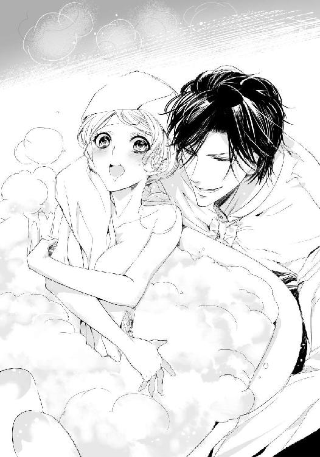

| エロティクス・ウェディング【SS付】【イラスト付】 ―皇帝は淫らに花嫁を飼育する― (ロイヤルキス文庫) | |
| 斎王ことり | |
| (2013) | |
この物語はフィクションであり、実在の人物・団体・事件等とは、いっさい関係ありません。
イラスト・ＫＲＮ
序章 月夜の晩に乙女は海神に魅せられる
「や......やめて......離して......」
潮騒だけが聞こえる夜の海で、リティシアは赤い唇で震えながら囁く。
王宮の外に出ることは禁じられていた。王宮の外どころか、神殿にだって供のものなしでは行くことを許されない。自分の離宮でしか自由を許されなかったリティシアが、緊張から眠れず、こっそりと憧れの海辺へ出た夜のことだった。
「し、黙って」
びしょ濡れの美しい青年が、リティシアの身体を押さえ込んでいる。
十代後半くらいの少年とも青年ともいえるその年頃の男なら、まだ十歳になったばかりの少女の身体を押さえ込むことなど赤子の手を捻るようなものだ。
沖合に船底を見せたボートが浮いている。月明かりに浮かびあがりながら、海から上がってきたその美しい男を見つけて、リティシアは思わず好奇心から近寄ってしまっていた。
海辺の岩陰に隠れて、その男が誰なのか、海神なのかとじっと見つめていたリティシアは、男が移動し岩陰に入ってしまったその姿を追って身を乗り出したところを、気配に気づいていたのだろう、背後から近づいていた男に捕まり、今、剣を突きつけられている。
「あなた......私にこんな......ことして......いいと......思っているのですか？」
胸がばくばくと打っている。
見知らぬ男に背後から抱きしめられて、短剣を首筋に当てられているのが怖いのか、それともすぐそこに美しい青年の顔があるというふらちなときめきからなのか。
「あなたは......だ...れ？ 神殿の人間ではない......わね」
「黙れと言っているだろう」
すごまれても、その整った顔にとぎすまされた美が際だつだけで、リティシアにとっては効果はない。
十歳を迎え、明日正式に神殿の姫巫女になるリティシアは、初めて王宮から外に出た。王宮の王女から神殿にて神に仕える姫巫女になることの緊張で眠れずに、ずっとテラスから海岸沿いを見つめていたのだ。
神に仕える姫巫女になる。それは王族に生まれたときから決まっていて、王宮の奥深くで大切に育てられた。怖いものなどなく、自分に害をもたらすものなどいないと思っていた。だから剣を突きつけられても凶器という実感はない。手でそれを押しのけようとして、怒られた。
「馬鹿か！ 剣の刃に触ろうとするなんて！」
そのすごみに一瞬身をすくめ、それからなんだか腹が立ってきた。
「この私に向かって、馬鹿ですって？」
「馬鹿だろう。指が切れてなくなってもいいのか。おまえ、剣も刃物も見たことがない田舎者か？」
「剣くらい見たことはあるわ」
「ではこれが肉も骨も切れるものだと知らない山奥の娘か。剣の切れ味というものを教えてやる」
すっと剣の先が月光を受けて燦めいたかと思えば、リティシアの胸もとに結ばれていたシルクのリボンが切り裂かれて落ちる。
「きゃ......」
シルクのリボンだけでなく、ボタンで留められていたドレスの胸もともはらりと開いて、下着もつけていない胸もとが露わになる。
彼は、固まってそのままリティシアの乳房を凝視している。
リティシアも、男に異性として身体を見られることを知らないまま育っているから、突然リボンを裂かれたことにだけ驚いて、そのまま胸を隠そうともせず男の顔を見つめている。
月明かりにリティシアのまだ青い乳房が浮かび上がり、その先端の桃色の乳首が次第に尖ってくるのを男はじっと見つめている。
「こんな風に切られてしまって......私、どうやって部屋に戻ればいいの？ このドレス、立つとそのまま前がすべて見えてしまうのに」
リティシアは短剣を手にしたまま動きを止めている、濡れた美青年の前で立ち上がってみせる。
胸で交差しながらぐるりと巻かれていたリボンがなければ、ただの羽織もののようになっててしまう夜のドレスは、夜風に吹かれてリティシアの身体からふわりと舞い上がる。
甘い蕾が花開くように。
青ざめた風が花びらを震わせる。
蕾をほぐした花びらの雌芯のような少女が、白い肌を晒して群青の空に立つのを青年はまぶしいものを見るかのように見上げ、それから慌ててその手を伸ばす。
短剣をうち捨てて両手でリティシアを抱きしめて、海風に舞い上がった花をかかえるようにしてドレスを押さえた。
「あ......」
リティシアは驚いて、目を丸くしたが、男はリティシアを抱いたまま離さない。
リティシアはしばらくされるままになっていたが、やがて抱きしめられている両腕が痛くなってきて顔をしかめる。
「ねえ。痛いわ......離してくれる？」
「ダメだ」
「あなた、私に命令するの？」
「離したら、また剣を手で掴んだりするんだろう？ 服を脱いだりするんだろう？ おまえは俺の想像を絶する馬鹿だと思えるから離せないんだ」
「失礼だわ。あなた......。私は二歳の頃にはもう書物を読んでいて、家庭教師が色々......」
男の髪から滴る水滴がリティシアの頬に、額に唇に落ちてくる。
「あ......あの、あなた、ちょっと離......れて......くださらない......」
顔が近い。せっかくの美神のような彼の顔が近すぎてぼやけてしまう。そう思ったとき、リティシアの鼻が、彼の鼻と擦れ合い、唇と唇が重なり合った。
驚いて、目を丸くして正面の彼を見るが目眩さえしてしまう。その目眩は、視覚からくるだけではなくて、甘くついばんでくる彼の唇からも狂おしいほどの甘さと柔らかさが漏れ出すような気配がしているせいだった。
「ううぁ......ンッ」
満月の煌々と照る光。群青色に染まる海と空。
弓形の浜辺に、打ち寄せる波音の中で、リティシアは、初めての口づけを受け続けた。
「あ......ぅ」
手で彼の顔を押し返そうとしたがその手はあっさりと握り締められ、そしてリティシアの胸が押さえ込まれてしまう。リティシアの手と彼の手が、敏感に尖った乳首に触れて、そして甘くなだらかな膨らみを揉んでいる。リティシアの呼吸は、驚きから自然と速まっている。
そして唇だけではなくて彼の舌がリティシアの唇を舐めてその唇を割って隙間に忍び込んできたときには、心臓が止まりそうになっていた。
彼の顔も何も見えない。ただ、甘いときめきだけが心臓から飛び出しそう。彼はその心配をして、二つの掌でリティシアの乳房を押さえつけてくれているのかもしれない。
でも、揉まれる乳首は微かに痛くて、そして抑えきれない熱い動悸に息もできなくて、もう片方の手で彼の胸を押し返す。小さな掌で彼の鍛えられている熱い胸板を押し返す力などありはしない。
反対にその手も掴まれて、そして彼の左の乳首に触れるように押し当てられる。
彼の乳首の感触。
甘酸っぱい唇の味。
少し塩味が感じられたのは、彼が海の神だからだろうか。
「神様なの......？ 海の神様」
「海の神......ああ、どちらかというと、未来のロードかもな......おまえは何者だ」
なんて態度が大きいのだろう。ルーン皇国の王女であり、明日には正式に神殿で姫巫女になる自分に不遜すぎる。でも、海の神ならそれも当然だ。
「私の名前は......リティシア......」
「リティシアか。可愛らしく美しい名前だ。おまえに......よくあっている......」
そう低めた声で言われるだけで、リティシアは胸が苦しいほど締めつけられた。
もう十歳とはいえ、生まれたときから王宮の中で隔絶されて育っていたリティシアは、父王とその側近、護衛兵やそのほか教育係の老年の教師しか男というものを知らなかった。
これほど瑞々しい肌をして、キラキラと輝く海と空が混じり合ったような色の瞳を持つ青年と出会ったのは初めて。きっちりとした護衛兵のような衣装を身につけているのに、なぜか胸もとがはだけ、そして貴族が履くような靴も、神殿のものが身につけるようなサンダルも履いていない。異国のものだろうか。こんな風に不思議な出で立ちをしているものはこのオリュンポリスの島にはいないと思うし、黒髪というのも珍しい。その髪は額に濡れ落ちて、頬にも水滴が落ちている。
リティシアは唇を塞がれながら、潮と彼の高貴な香りが混じり合うものを嗅いでいる。
潮騒の音。
口づけの気配。彼の唇はリティシアの唇を軽く吸って、そして舌先がちろっと覗いたと思うと、リティシアの小さな皓歯を割って中に入り込んでくる。
「うぁ......んくぅ......」
とろりとして肉厚の感触がする彼の舌に戸惑い、リティシアはもごもごといいながら舌を押しのけようとする。絡み合う他の人の舌に、胸が飛び跳ねそうなほど感じた。
彼はリティシアが動かした舌に自らの舌を絡ませてきて、まるで甘いキャンディのように絞り上げ、吸ってくる。
「あ......んぅ......」
「初めて？」
リティシアは、頷くこともできずただされるがままになっている。その行為が何も知らない少女にとってあまりに濃厚だったためか、それとも彼のそのテクニックが少女には強すぎたのか、リティシアは深い口づけを受けながらずっと舌を絡め取られて、お互いの唾液が混じり合うのを、こくこくと飲み込んでいる。
「可愛いな......それにとても綺麗な桃色だ......この貝殻みたいに......」
優しく身体を触れられて、リティシアはうっとりとその囁きを聞いている。
（貝殻......桃色の......？ そう......綺麗なのね......私......）
そうしていつしかその指先の感覚も、口づけのもたらす快楽も、リティシアを蕩かせていく。次第に眠り薬を飲まされたかのように、すうっと深く甘い快楽に落ちていく。いつしかさざ波の音を背に、リティシアの意識は闇の中に沈んでいった。
だから、翌朝いつも通りベッドの上で目覚め、乳母と侍女に起こされたリティシアは、朝の光に呆然としていた。
ドレスに着替えさせられながら、あれは今日から王宮を出て神殿に入り、一人巫女宮で神に身を捧げる日々になる緊張と不安が見せた夢だったのだろうと思った。
月夜の浜辺で見たのは、海から上がってきたばかりの海神。
自分は神に祝福され、神殿に入る。
あの青年は海神だったのだと───。
普通の世界からも男性からも隔絶されて育っていた王女リティシアは、まだ、巫女となるものが見知らぬ男と触れあったり唇を合わせてはいけないことも知らなかった。
そして性の欲求や、異性との身体の交渉があることなど、当然知らされていない、この世界でもっとも清く無垢なる少女の頃だった。
第一章 清き姫巫女は儀式の夜に奪われて
「姫巫女様。こちらへ」
リティシア・ルーン・ドラッドは巫女たちに囲まれて、今宵の儀式の仕度に余念がなかった。
十七歳を迎えたリティシアは、神の降臨すると言われるオリュンポリス島を持つルーン皇国の王女。同じく王女の生まれで神殿に入り姫巫女になった姉たちは、この島の神殿を去っていておらず、今はリティシアが、ルーン皇国で唯一最強の能力を持つ姫巫女になっている。
そのもっとも強い神の力を得る姫巫女が、今から他国の王家の依頼を受けて神託を得る任務に就こうとしていた。
リティシアは侍女たちに纏っていた衣服を脱ぎ落とされると、蔦の絡まる円柱に囲まれた聖水盤に下りていく。
聖水盤は王宮の噴水と同じほど大きく、そしてその中央に進み入るには水中に浸る踏み段を下りていくことになる。
白い素肌に清めの泉水盤から噴き出す水が流れ、腰まで浸かったリティシアの胸が、その冷水にぶるっと微震する。
腰下まである青みがかった銀の髪が、泉水盤の中で広がる。くるくるとウエーブのかかっている艶やかな髪が水面に浮かぶと、まるで水面に咲き誇る睡蓮のよう。
さらに深い中心へと移動するリティシアの濡れた肢体が、水面に波紋を広げる。
そして同じく噴水の飛沫で、金と真珠の連なる鎖でぐるっと頭部に巻かれている額の〝ルーン・ムーン〟が濡れていっそう輝いている。
円盤状の飾りは太陽と月のデフォルメが組み合わさった古代からのこの国の紋章。そして神殿の紋章でもある。
王女であり、神殿のもっとも権威ある姫巫女リティシアは、国家の繁栄のために神に祈り、神の声を聞く清き聖なる存在で、今この国で唯一〝ルーン・ムーン〟を身につけることが許されている姫巫女でもある。
今、沐浴場から上がって、巫女たちにタオルで迎えられて包まれているときも、額飾りは白い素肌を彩っているのだ。
それは繁栄と豊穣の証。この国の王女は、世界の誰より神に愛され繁栄を約束されているという伝説があり、よほどの事情がない限り代々の王女が幼い頃から修行を積み、十歳を迎える頃に正式な姫巫女として世俗を離れて巫女宮に上がる。
リティシアは、まさに王女から姫巫女になった乙女だ。
聖なる沐浴をして、今、真新しい下着を着せつけられ、濡れた髪は拭き、そして梳かれて、三つ編みを耳元に大きく丸く固めて、耳飾りと共にかんざしをつけられていた。
額の〝ルーン・ムーン〟を巫女見習いの乙女たちがよく磨いてリティシアの額の中央に据える。
純白の古代ギリシャ風のドレス。純白のケープに純白の毛のマント。
そのマントを留めているのは大振りな金とルビーのブローチと、黄金のふさ飾りのあるリボンだ。ドレスもマントも裾を引く長いものでリティシアが普段、この国の繁栄や国民のために日々行う神事ではまず身につけない豪華な装いだ。
そして鏡を見つめるリティシアの頭に紗のベールがかけられて、顔を覆い、その上から繊細なつくりの冠が載せられる。
これも特別な儀式にのみかぶるもので、リティシアは、鏡の中の自分の姿にいつにない緊張を感じていた。
「夜に行われる儀式も初めてだわ......。月の女神に豊穣の祈りを捧げる定例の儀式以外は」
実際、姫巫女になってから、リティシアは依頼の神事を夜に行ったことはなかった。
「はい。豊穣と繁栄の儀式だとかで、月の女神に神託を願いたいとか。大神官も王妃様も認められております。おそらくは王陛下にも許可は取られていると思いますわ」
父である皇王は、地中海条約を結んでいる六大国との会談があるとかで、海を挟んだ向こうの大陸に行っていて長期間の不在中だ。
「そんなときに、他国からの依頼の儀式を行うことで、皆が緊張しているのかしら？」
「今日の儀式の依頼者は、かのグラント帝国の方だという噂です。その国の国旗のついた船が港にあったとかなかったとか。創国の時代から侵略して領土を拡大し続けている大国です。歴代の王すべてが好戦的で短気だと有名ですから、粗相のないよう緊張しているのでしょう」
シンラはそう話しながら、リティシアのサンダルの革ひもを編み上げている。
「ああ、どうしましょう。サンダルの革ひもが切れましたわ。すぐに代わりを持ってきて」
シンラはリティシアが王宮に暮らしていたときからずっと姉のように母のように世話をしてくれていた十歳年上の賢い女性で、実の母を幼い頃亡くしているリティシアにとっては、乳母と同じくらいに話しやすい相手だ。
かがみ込んで、また慌てて侍女が持ってきた替えのサンダルをリティシアの足に履かせる。
「そのグラント帝国の気の荒い王様が、このオリュンポリスの神殿においでなの？」
世事に疎いリティシアでも、その国王の噂は聞いている。自国を広げることに邁進し、どこまでも強気で攻め込む軍国の王。最近先の皇王が王位を息子に譲ったと聞く。国に女性の数が圧倒的に少なく、軍人で国家が成り立っているとも聞いているが、その戦にまみれてきた戦国の王が、いまさら神の声を聞いて、攻め込む日時を決めるとでも言うのだろうか。
「本当に、もし皇王が直々に来ているのなら恐ろしいことですわ。皇王は常に戦場で戦陣を仕切っているという噂もあります。侵略と流血を好む王など、リティシア様と契約をさせたくはありません。お父上が、今ここにいらっしゃったら許されたかどうか。ですが神官様方も、戦略や侵略のお告げを願ってきた者はさすがにこの島に上陸はさせないでしょう」
「そう。それはよかったわ」
神に戦争のことを尋ねるのは、リティシアも好きではない。
「それでも今も戦いを続けている西の大陸がいつ自分たちのものになるか、いつ勝利を得られるか。そういうことは聞かれるでしょうね。大神官と姫巫女様への神託の依頼は、軍国以外でも政治がらみの願いが多いですもの。あとは天候や跡継ぎの問題ですわね」
「そう...でも......儀式の前に編み上げの革ひもが切れるなんて......不吉ね」
「そんなことありませんわ。リティシア様。もう大丈夫ですから、神殿の大聖堂にどうぞ」
リティシアは開かれた扉を抜け、十字の形に建設されている巨大な神殿の大聖堂へと歩き出した。
そこは、神殿の中であっても巨大なドームの下にあり、もっとも重要な儀式を行う場所である。
微かな夕日もとうに海の彼方に沈み、海を望む大神殿は闇に包まれ、円柱に、そして庭園のランプに松明にも似た色の灯りが灯されている。
今まで閉ざされていた奥の扉が、巫女たちの手により次々と開かれて、その先に長い回廊が広がっていく。その回廊に輝かしい灯りが灯されて、リティシアの姿が鏡の中で薄く輝くように浮かび上がる。
回廊の突き当たりの戸口に立てば、そこに護衛兵が立つ荘厳な扉が開かれる。
大神殿だ。
周囲に灯された松明で白い外壁が闇夜に浮かび上がる。空と海に浮かぶような壮麗な神殿。
リティシアはお付きの者と共にその両方に開かれる扉を通り、大理石の床に緋色の絨毯の引かれた回廊を歩く。
前方に黄金で作られた精緻な祭壇。そして左右に置かれた天に伸びるような樹木のごとき細やかな燭台。その燭台に花のように葉のように無数の蝋燭が灯されて、高いドーム状の天井まで照らしている。
聖台の前に黄金のマントをつけ、金の仮面をつけた大神官が錫杖をついて立っている。
回廊の周囲に立つ円柱の間には神官と神僕たちが、やはり皆白いマントをつけ、まるで柱か彫像のように居並んでいる。
リティシアが聖台の前に立つと、十字に延びている回廊の西奥の扉が開き、黒い肩甲をつけた騎士たちが闊歩して聖台に歩み寄ってきた。
列をなした騎士たちが左右に道を空けると、そこにマントを纏い黒い軍服に身を包んだ長身の男が空を切るように現れ、リティシアの隣に立つ。
黒髪に銀の仮面が高い鼻梁の上まで覆い、眼孔はくりぬかれているものの、その瞳の色さえよくわからない。
男らしい口元、髭はなく、かなり若いのではないかと思えたが、その顔の全容はわからない。
彼が大国グラント帝国の依頼者〝皇王〟だろうか。
金帯の縁取りのあるマントを流し、大神官の声によって、そこに跪く。
リティシアもその傍らに膝をついた。
大神官は、リティシアの頭上に錫杖の先端を載せて、はめ込まれている巨大なダイヤを燦めかす。
「我がルーン皇国の大聖堂に仕える巫女姫、リティシア。かの依頼者の願いを叶えよ。これは契約。依頼者の願いを叶え、神の声を聞け」
「承知しました。大神官様」
「姫巫女、そして契約者よ。神の血を受け入れよ」
そして神僕がリティシアの前に黄金の盃を差しだしてそれを飲むよう促した。
神と、契約者と姫巫女との契約の盃だ。
リティシアは手に黄金の盃をとり、その中に満たされていた赤い液体を喉に注ぎ込む。
そこまではいつもの儀式のはずだった。
神と契約者と、巫女とが契約を成立させるときに交わす盃のしきたりだ。
でもいつもは薄められているような赤いワインが、今回だけは独特の強い甘味を持っていたのも、自分が緊張しているせいだとリティシアは思った。
ワインは口腔に広がり、そして喉に滑り落ちる。
大神官の視線がいつもより刺さるように自分を見ているのも、気のせいに違いない。
リティシアは胸の前で腕を交差させる。両方の腕に嵌められている黄金の腕輪にもこの国のシンボルである月と太陽の紋章が浮き彫りになっており、その周辺に細かな古代語が刻まれている。大変意味のある腕輪だ。
「巫女姫。契約者の望みを伝える。グラント帝国の将来の繁栄を願いなさい。そして次なる西域の戦の勝利を祈願し、神のお告げをその身に下ろせよ」
「承知しました」
リティシアは進み出て、踏み段を上がりそして聖台の上に膝を載せ跪く。
黄金の彫刻で周囲を彩る、大理石の聖台。
ドームにくりぬかれた天窓から滴る光に髪と額飾りの〝ルーン・ムーン〟が濡れたように輝き、リティシアは台の上に両手をつくと、光の中に顔を上げて神に祈りの声を上げる。
謳うようになめらかな祈祷の言葉。
太古の言葉で、今ではその言葉の意味も普通の国民にはわからない。神に通じる神の言葉を、神に従事するものたちはただ覚えるのだ。
先ほどの男の願いは、このものものしい神官たちの態度に比べて拍子抜けするものだった。 国家を揺るがす政変を予知しろ、敵国の秘密基地がどこにあるか当てて欲しい。天変地異を当てろ、いつになったら雨が降るか教えて欲しい。
神国の姫巫女は、日々そういった国の有事や大勢の人の命のかかった願いや神託を依頼されるのだ。
それにくらべたら今聞いた今宵の要望はごく普通の願いの範囲だ。世界に名だたる大国の皇王がわざわざこの小さな神の島にやってきたというのに、こんな願いでいいのだろうか。リティシアは先ほど隣で盃を交わしたあの仮面の男の姿を思い出す。
（でもダメよ......邪念を払わないと......）
清らかな心で臨まなければ、神の声は聞こえない。リティシアは天に集中して祈る。
やがて、額の〝ルーン・ムーン〟が輝きを強め、その周囲に鈴のように細かくついているルビーが涼やかに鳴れば、神が聞き入れた証だ。
シャリン......。
チリリリリリン......。
震える音色は天井のドームの中に反響してより繊細に広がる。
「叶えられた......神が姫巫女の願いを聞き入れた。これで契約者の願いは叶うであろう」
大神官は低い声でのたまう。
リティシアは白い大理石の聖台から下りて、大神官の前に再び跪こうとした。だが、踏み段を下りようとしただけで、ぐるりと世界が回って、激しい動悸に襲われる。
リティシアを、白マントの黒い男が抱きかかえた。掬うようにしてリティシアを抱き上げると、そのまま、じっと見つめてくる。
彼は銀の髪を手に掬い取り、そして唇を押し当てた。
次にリティシアの唇に、その赤い唇を押し当てる。
彼の唇からとろりとした液体が注ぎ込まれた。
「ん......あ」
契約の儀式で交わす赤いワイン。今またあの液体が注ぎ込まれている。
それが先に飲み込んでいた赤いワインと体内で絡み合って燃えるように揺らめいている。
今もまだ、残っていた熱さが、今の口づけと流し込まれた液体でいっそう毒のような熱となって下腹部を燃え上がらせている。
「あ......」
男の腕は冷たくて、リティシアは知らず知らずのうちにすがるようにその腕にしがみつく。 男はそんな頼りなげなリティシアの身体を抱き、そしてかかえ上げると聖壇の上に横たえた。
「姫巫女よ。今から〝契約の赤〟をこの身から取る。もっと、我が身に触れたまえ。もっとこの私の身体を求めたまえ」
リティシアは仰向けにされたまま、もう身動きすることもできなくなっている。四肢が重くて動けない。体中が火照りだして、背中が聖壇に乗せられていることが心地いいほど。
頭の中までぼうっとしてきて、目の前に迫る銀の仮面の男の顔さえ、恐ろしいとも思えない。
どうして仮面をしているのだろう。男性の腕とはこんなにも力強いのか。
ただそんなことだけが、ぼうっとした思考に掠めていく。
「姫巫女......今宵最大の神事を行う。契約者と結ぶ最高の契約を、受け入れたまえ。〝水晶の男神〟を受け入れたまえ」
大神官の声が遠くに聞こえる。
それと同時にリティシアのマントが首元から外されている感覚。そしていつしか白いドレスも引き裂かれ、脱がされて、まだ若く尖った乳房が露わにされる。
リティシアは頭上に下がる巨大なランプに映り込む自分の姿が、すでに全裸なのを見て震えた。
額の〝ルーン・ムーン〟と、左右の腕の腕輪。足首に嵌められている国家の文様が浮き彫りになっている金輪。それが乳白色の瑞々しい肢体にくっきりと彩りを添えている。
顔にかけられていたベールが男の手ではずされた。
背中で金のリボンで結わかれていた銀の髪が、聖壇の上から乱れ落ちる。
何が行われようとしているのだろう。
内ももに何かこそばゆい感覚がして、足を閉じて擦り合わせようとしたリティシアは、それが叶わないことに気づいた。
いつの間にか仮面の男が自分の身体の間に割り入ってきて、太股を押し広げている。
「ぃや......な......に......」
白い素肌にじかに男が触れている。柔らかな内ももを指がくい込むほど掴んで広げていく。
「いや......」
恐怖で身体が引きつった。だが、これはやはり儀式なのだ。姫巫女は儀式を遂行しなくてはいけない。それが幼いときから大神官に教えを受け、十歳で神殿に入り、その身を神にのみ捧げることを課せられた巫女の中でも、もっとも優れた能力を持つ姫巫女の務め。
「契約の証を......我に捧げよ......！」
男の声がまた響いて、リティシアのふっくらとした恥丘のあたりをさすってくる。
強すぎるワインのせいか、身体がまったく動かない。恐怖からか声も出ず、抵抗もできないリティシアの恥丘に男の吐息が感じられ、そしてそこに濡れた舌先が落ちて秘裂を舐め上げてくるのを感じている。
男は膝を詰め、リティシアの淫唇に身体をつけると、すぐに指先でしっとりと濡れているそれを割ってくる。手足は少しも動かないというのに、肌は男の指先にぞくぞくと震え、淫唇は動かされる男の指に跳ね上がっている。
（ぃ......や......）
恐ろしさに粟立つ白い肌を、執拗に撫で回す指先。
絵を描かれているような、繊細な筆を載せられたような感覚がリティシアを襲う。
むき出しの震える胸に手を置かれ、先端を掠めるように回されたかと思うと、突然、指がくい込むばかりに強く揉まれた。
まだ誰にも触れられたことのない胸が、男の手の中で熱く燃える。乳房を揉まれ、もう片方の手で淫唇の中を弄られている。淫唇の秘裂を前後して粘膜を擦る指先に、リティシアの性感の塊のような淫芽が燃え立つ。
「や......ぁ......やッ......」
喉から詰まった悲鳴が漏れるが、彼に抱きすくめられた肉体は、もうびくびくと感じている。彼の熱い指先が潜り込んで、身体の下に敷き込まれたドレスは嵐に揉まれた薔薇の花びらのようにもみくちゃになっている。
それでも彼が指先で何度も淫芽を滑るように愛撫するのを、いつしかリティシアの身体は悦んでいた。滑らかな指先が性の味蕾をしっかりと掴んで、奥深くまで感じさせようとしていて、その愛撫をリティシアは逃げ出すこともせずに受け入れている。
（う、そ......どうしてこんな......もっと抵抗しないの......契約の儀式はこんなものじゃないはず。なのにどうして......誰も異議を唱えないの。どうしてこのグラント帝国の暴漢に私を......襲わせているの？ 恐ろしい皇王だから？）
あのおかしなワインがリティシアの身体を動かなくさせている。それは確かだ。
そして肌や体内にもおかしな火照りを与えているのもワインのせいだと思う。
何か入れられたに違いない。
（早く......この帝国の男の愛撫から......逃げないと......）
「無礼......もの......離し......なさい」
掠れる声でそれだけ言って、必死に男を睨みつける。
「姫巫女、契約のことを聞いていないのか？ まさかな。国家を通しての契約ごとなのに、〝契約の赤〟を捧げる本人が知らないなんてことはないはずだ。この期に及んで畏れたか？ 純情なのだな、我が姫巫女は」
男の低い嘲笑う声がリティシアの火照った肌を舐める。
「俺を......受け入れよ。契約者としておまえのこの濡れた秘洞の最奥に導き入れよ......おまえの処女を確かめる。そして処女の花びらを俺に捧げろ。赤く濡れた花びらを」
強制するような懇願するような冷たい声。吐息さえ、押し殺すようにしながら仮面の皇王の熱く湿った舌が肌を這う。
彼の舌先が落とされるたび、肌がそこだけ蕩けるような淫らな感覚に囚われて、リティシアはひくひくと乳房を揺らす。肌を舐められるとどうしてか乳首が硬く絞られて、もっと愛撫を受けたいと背伸びするように立ち上がる。彼の舌先を、そして指先をも求めるように先端の桃色が膨れあがる。
獣に襲われる獲物のように、恐怖を抱くのに、抱きしめられれば安心し、舐め上げられればぞくぞくと唇を震わせる。自身の肉体にリティシアは惑乱している。
口づけは、膣を激しく収れんさせて女の機能を破裂しそうなほど高めていく。ドレスの肩を落とされて、胸は膨らみを宙に向けて、腰も、足の付け根までが露わにされる。闇にぼうっと光るような真珠の肌に皇王はいっそう激しくむさぼりついた。
震える乳房は濡れて輝く双丘になるほど舐め尽くされる。先端を舌先で突かれ、ちゅっと音を立てて吸われれば、リティシアはもう頭の天辺まで彼の唾液で溶かされていきそうだ。
熱に浮かされて、意識がぼうっとしてくる。
（だめ......意識を失ってはいけない......）
聖堂にいた多くの神僕たちも、神官たちも誰もこの男の陵辱を止めようとしていない。
この男の言うとおり、これはリティシア以外は知っていたことなのだろう。
（これが、周囲のものたちがいつもと違っていた......理由......？ 〝契約の赤〟......巫女の身体を......処女を捧げる特別の儀式......）
〝契約の赤〟とは、契約者と特別深く長期間の契約を結ぶために行う旧い儀式だと思い出した。
処女を散らし赤い蜜を取る儀式。今後、姫巫女のすべての力を神とこの契約者に捧げ、その人物と神との橋渡しのみ請け負う契約。願いも、問いも、神託を下ろすこともその人物との専属契約だと聞いたことがある。一国の頂点である姫巫女を所有するには莫大な代償が必要だというが、そのような権力と財力があるものは多くはない。
それをこの男は叶えたというのだろうか。
「この俺と......契約を結ぶんだ。今後は身も心も......我と神を結ぶ巫女として、契約に従事せよ」
大神官すら容認している行為。この期に及んで、それから逃げ出すなんてことはルーン皇国の姫巫女としては決してできない。
「この身から我は〝契約の赤〟を取る」
男の声は低く、感情のない恐ろしいもので、リティシアは震える。
（嘘......うそ......。この男が私から〝契約の赤〟を......取る......？ 水晶を纏った雄の性器に乙女の処女を散らされてしまうの......？）
リティシアは、ぼうっとしたまなこで男の口づけを受け、口の端から唾液を流しながら、周囲を探る。
大神官はそこに立ったまま、リティシアが男に覆いかぶさられているのを見つめているようだ。
周囲に並び、儀式を見守っていた他の神僕を見ようと必死で顔を巡らそうとする。
だがそんなリティシアの顔さえ、男は押さえ込んで、舌を絡めては溢れ落ちる熱い唾液と共に吸い上げようとしてくる。
淫唇をまさぐられる気持ち悪い感覚。雌芯を探られ、摘まれてくる初めての感覚。
雌芯に触れられると、下肢から、腹部からぞくぞくとした得体の知れない淫らな感覚がわき上がってくる。
彼の指が雌芯を摘んでくちゅくちゅと揉んでくる。それだけでも責め立てられるような狂おしい感覚でそこが壊れてしまいそうなのに、そのリティシアの反応を見て、男はさらに激しくそこを摘み上げてくる。
にゅぷりと押しつぶし、そして小さなこよりでも作るように丹念に、繊細に、指先で責め上げてくる。
とうとうリティシアのそこは、耐えきれずにびくびくと震えた。
「ああ......感じているんだな。おまえを巫女として扱ってやるから安心しろ」
巫女は誰にも触れられてはいけないはずだ。
それなのに、裸にされて、濡れた秘部を弄ばれている。それのどこに安心ができるだろう。
「ぁ......あ、んぅ......」
「可愛い声だ」
そう囁いたのだと思う。そして男は片手でリティシアの乳房を揉み上げながらリティシアの恥部に身を沈め、恥丘の上を舐めてくる。
「んぅ......ぁんあ......ッああッ」
リティシアはこらえきれずに声を上げた。
ここは大聖堂だ。神殿のもっとも聖なる深部。神に祈り、声を聞く場所だ。なのに契約者とはいえ、男に秘所を舐められている。
「あ......あぅ......ッうぅ」
男はその部分を丹念にねっとりと舐めて、そして秘裂の奥から前面に向かって激しい舌使いを見せてくる。
周囲にぴちゃぴちゃと舐め上げる水音が響き、聖堂の上方のドームで反響している。
（うう......や......ぃやぁ）
恥ずかしい音だ。
恥ずかしい行為。それは性行為を知らなかったリティシアでもわかる。
男はリティシアの太股裏から膝で押さえるように固定したまま、淫唇を舐め、両手は乳房を絶え間なく揉んでいる。
乳首を摘まれ、愛撫に反応して立ち上がった先端の桃色は、彼の指の元に今にも咲き綻びそうな薔薇の蕾のように色づいている。
ふっくらと硬くしこるその部分を男の指は執拗に弄り、そして先端を爪の先で掻いてくる。
「あ......ううぅんッ」
喉の奥で、喘ぎが漏れる。乳首が硬くなるその感覚。乳房が揉まれて、身体の芯まで熱くなる。どくどくと心音さえも男の手で掻き乱され、そして両方の手でチーズでも捏ねるように激しく揉まれれば、リティシアの身体はびくびくと跳ね上がる。
「や......んぅ......やあ......」
どれだけ声が出ているのか、耳の奥までぼうっと海水が入り込んでいるような感覚で、リティシアは、これはもしかしたら夢なのではないかとすら思ってきている。
男の手がリティシアの素肌を撫で、淫唇の中にまで指を滑り込ませてきたかと思ったら、その湿った媚肉にふいに指を立ててきた。
「───う」
指は増やされて隙間に添って撫で、雌芯を二本の指先で摘みながら、谷間の襞を擦り続ける。
「ああぁ......うあ......やあ......いや」
顔を左右に振って、抵抗の意思を示すもその動きも、ちゃんとできているのかわからない。
男の手が太股を割って、左右に大きく開いたのがわかった。
湿り気のある谷間が大きく開かされて、ねっとりとした彼の舌がその谷間をなぞってくるのを感じる。
淫唇の中に舌が差し入れられて、もう狂おしいほどその部分に意識が固まり、熱い感覚が漏れそうだ。熱い液体が渦巻いて、リティシアの中で激しく快楽の塊を溶かしてくる。
「あっ......やああ......」
もう、我慢できない。そう思ったとき、ドクンと胎内が震えて、リティシアの蜜壺から蜜が溢れた。熱く蕩ける感覚が、胎内から溢れてくる。トロトロと淫唇から蜜が流れ落ちて、弄られているその部分も濡らして落ちる。
「ああ、こんなに......処女でも蜜が出るんだな。姫巫女でもこんなに濡れるものなのか」
「これなら......もういいだろう」
男はリティシアのそこに目をやり、満足そうに囁くと、ぐちゅぐちゅと淫らな音が響き渡るほどそこを指先で掻き回し、蕾の中にまで指を二本も三本も挿入してくる。
「あ......ううぅうう」
恥ずかしくて、初めての感覚があまりに気持ちよくて、リティシアの白い肌は桃色に染め上げられる。
「まだまだこんなに蜜が......こぼれ落ちてくる。よほど契約の男が欲しいのか？ 姫巫女」
「は......う......や......いや......」
男の声に秘められた熱が感じ取れた。もっと恐ろしいことが起きる。そして真の契約の儀式が行われる。そう感じる。男は燃えているように感じるリティシアの淫唇の谷間を押し広げて、さらに蜜口を冷気に晒す。
男がマントを背後に翻し、下肢を覆うベルトを抜き、ズボンから性器を露わにしたのがぼうっとしたまなこでもわかった。巨大な性器がそこにすでにそそり立っているのが見える。
男はその性器に透明な水晶の雄型を装着して、リティシアの蜜が流れ落ちている秘裂に強くあてがった。
ぬるっとした感覚がリティシアの全身を震わせる。
両足をさらに大きく開かれて、その間に男の膝が深く割り込んでくる。そしてリティシアの太股を丹念にまさぐりながらお尻のほうへと指を滑らせて、膨らみを揉んだ。
双丘は柔らかに男の掌に添い、そして指が潜り込む柔らかさを見せると、そのまま激しく揉み込まれる。蜜がその動きで後方にまでとろりとろりと流れ込んで、後ろの蕾までぐっしょりと濡らしていく。男の指が濡れた蕾を何度も撫で回し、そして中心に突きたてる。
「ひゃ......うぁんッ......はぁあ......ンうぅッ」
身動きをすれば、乳房が揺れる。先ほど弄られて敏感に立ち上がっている乳首は揺れる空気に触れるだけで燃え上がるように屹立してくる。
そして男の手がリティシアのお尻の下に入り込んで、足の付け根に腰をぐぐっと突き刺した。
「あぁ......ひぅ......ッ」
雌芯を擦り上げながら、男の局部がリティシアの蕾を的確に貫く。小さくすぼまろうとする蕾の中心を、亀頭が貫き奥へ奥へとねじ込んでいく。
リティシアは少しでも逃れようとずり上がりながら、その亀頭の胎内への陵辱をこらえた。男の身体が自分の太股の内側に叩きつけてくる。その振動が濡れた肉壁を擦り上げ、亀頭はリティシアの開脚させられている足の間に深く深く杭打たれていく。
「うぅう......くぁ......ンッ」
息が詰まる。激しい異物の感触が乙女の口を開き、そして引き裂いてくる。
「あ......ぁぁ......んぅくッ」
何かにしがみつかないと、耐えられない疼痛と違和感。
そこにねじ込まれている雄に、肉の感覚はしなかった。もっと硬質で冷えたもの。リティシアは自分の中に何が挿入されているのか確かめたくて、必死に顔を向けて自分の濡れている秘所に視線を送る。
透明な水晶が彼の性器にかぶさっている。それはいかにも儀式用の何かだと思わせる文字の刻まれたもので、水牛の角のように湾曲して、男の動きで、何度も後方に太い部分を覗かせては、またリティシアの膣堂に潜り込んで肉襞を押し分けていく。
先端が深く潜り込めば、蜜が中から溢れ出し、グチュリと卑猥な音を響かせる。
そして彼の性器とその透明な道具は今もリティシアの雌芯をぬらぬらと濡らしながら擦り上げている。
多少のざらつきと細かな突起が、淫唇の濡れた谷間を擦るとき、聖なる乙女のクリトリスを擦り上げて、快楽を膨らませていく。
こんな風に手荒い陵辱を受けているのに、いつしか身体の中から不思議なほどぞくりとする快感が蠢いてくる。
快楽だなんてあるはずがない。知らない男に襲われ、処女を穢されているのに。なのに、確かに腹部の奥からときめくようなぞくぞくとする快楽が責め上げてくる。擦られている中も、もっとも激しく犯されている蜜口や淫芽も悶えるほど火照って危うい感覚しかない。
その特異なものが自分の聖なる秘所を貫いている。そこは、神性なる場所。巫女としてもっとも大切に守り抜かなくてはいけない場所のはずなのに。
（なのに......どうして......巫女の私の......聖なる秘所を......この男は......）
男の身体がリティシアの身体に押しつけられて、規則正しく使われる腰の動きで偽りの性器が奥へと挿入されてくる。大きく硬いものがリティシアの濡れて灼ける中心を貫き、引き裂き、未知の部分にその先端を擦り当ててくる。
「あ......ぁん！ はうぅんッ！」
強い異物感と共に押し開かれていく肉体。責め立てられて、リティシアは背中を激しく聖壇に擦られている。腰に叩きつけられて、胎内の奥のほうまで水晶の性器が挿入されていくと、リティシアの入り口から赤い液体が流れ出した。
なのに、今のリティシアは、裂かれた痛みを感じるどころか、雌芯を押しつぶされ、ねじられながら、性器に擦り上げられることに激しい愉悦を感じている。
もっと擦って欲しい。
もっといじめて欲しい。そこを摘んでくちゅくちゅとされていた先ほどの快楽が、リティシアの秘所を狂わせている。
熱い吐息が肌を舐め上げ、男の熱く濡れたものが中を突き進み、肉襞を掻き乱していく。男の腰が穿たれるたび、花の蕾のか細い花びらは喘いでその巨塊をもてあまし、芽粒は押しつぶされ、擦り上げられて、快楽に膨れあがっていく。
「ああ......んぅ」
リティシアは大きく胸部を上下させながらその動きに耐える、背中が揺すられるたびに聖壇の冷たい大理石の上で擦られて、髪や髪留めがざりざりと嫌な音を立てている。
でもそれさえ、獣に喰われるような果てしない快楽の音にも聞こえて、リティシアは唇を噛みしめ、やっと微かに動いた指を立てて小さな真珠の歯の間に押し当てた。
やがて男の動きが大きく、蠢く大地のように深くリティシアの膣道を抉ってくる。中が溢れるばかりの蜜液で濡れ、卑猥な水音がぴちゃぴちゃと打ちつける。
耳の奥に彼の鼓動が攻めてくる。
「奥を突く。激しく動くぞ。痛くても耐えろ。いいな」
男の低めた声が、ぞくぞくと耳朶から胎内を犯してくる。声だけでももうリティシアの肉体は淫靡な快楽を感じてしまう。
「いた......痛い......の......いや......」
「耐えなさい......これは儀式だ......契約の証......長く待ち続けた姫巫女の処女......」
低めた声がそう言った気がした。
（儀式......契約の......）
リティシアの目の中に、金色の光が降ってくる。
それは神殿の中の聖なる聖堂で、神に祈りを捧げたときにしばしば見受けられたこと。
「すべて任せなさい......契約の姫巫女と俺は今深く繋がった。至上最高の相手のはずなのだから」
そう囁いたと思うが意味まではわからなかった。
唇と唇が合わせられ、舌が中をかき混ぜてくる。舌が舌に絡められて、リティシアは朦朧とするほど頭の芯まで痺れていく。
唇は糸を引くほどねっとりと愛撫され、舌が同じ熱で蕩けそうなほど絡めとられている。
口の端から溢れる唾液を彼の舌がなぞっていたが、やがて、その舌が乳房に降りて、まだ硬い未熟な果実であるリティシアのそれが、彼の口腔に収められる。
「あ......はあ......んぅッ、や......」
彼の口腔に奪われそうなほど、熱く吸い上げられる。
唾液が絡まり合って、喉の奥に流れ落ちる。唇の端からも伝って落ちていくのがわかる。
（あ......ぅ）
亀頭が細く締まっている膣堂を穿ち、突き抜けて肉壁を広げていく。朝露に濡れたような花弁は彼の欲望の哮りを締めつけるようにしながら受け入れるものの、最奥を突かれればその苦しさに喘ぐようにひくついてしまう。
「身体を開け。もっと、身体を許せ......俺に心を許すんだ。リティシア......契約の姫巫女」
囁きながら深く激しく腰を振り立て、穿ってくる男。
彼が少し後方に抜いては、さらに大きく突き上げるたび、リティシアの膣はぎゅっと締めつけた。
追いだそうとしているような肉動は、水晶を締め上げて、快楽をもたらせていく。彼の雄はいっそう巨大に膨れあがり、その張り型をも熱く燃えたぎらせている。そしてさらにムキになったように、リティシアの人形のように揺さぶられる華奢な白い身体を深く抉りつけた。
リティシアの襞が擦れてくる熱で彼のその肉筒は快楽を得て、いっそう硬くそそり立ってくる。
〝聖なる水晶器〟。その殻をかぶせてあるはずなのに、その男性器は猛々しく、そして熱を帯びているのがリティシアにもわかるほど滾っている。奥が何度も何度も突かれ、リティシアの蜜がぬちゅぬちゅと中からはじき飛ばされてくる。白い内ももがぐっしょりと淫蜜で濡れ、彼の雄竿も睾丸もぬるぬると濡れている。
台座の上が滑るほどに蜜が溢れ、たっぷりとリティシアの身体は感じていた。
「巫女姫......いいぞ......おまえは......俺の初めての女だ......！」
冴えた瞳が熱く光った。強い舌がリティシアの乳房を舐め、そして痛いほど膨れあがっている桃色の乳首を歯で咥える。
「んんぅ......ぅあ......んッ」
ぞくぞくっと痙攣するようにいやらしく突き出す乳房を揺らし、リティシアは腰を大きく跳ね上げた。その動きでいっそう器のかぶせられている亀頭が、触れていなかった襞を穿ち、激震が走るほど蕩ける壺を突く。
「姫巫女。おまえの〝契約の赤〟は......戴いた......！」
「はぁ......ッ、はあぁん......ああぁぁ......んッ」
喉を大きく反らして、柳のようにしなやかな身体をリティシアは聖壇の上でくねらせる。男のバネのようにしなった腰が、身体に深く潜り込み、膣道を抉った。中で熱い精気の放出を感じた。実際はリティシアの蜜が弾けて、まるで飛沫のように彼の嵌め込まれたその蕾の縁から放たれたのであったけれど───。
珠のような汗で濡れた肌を、髪を、男の逞しい指が掴んでは撫でてくるのを、リティシアは放心したようになったまま感じていた。
乱された青銀の長い髪が聖壇の上から、溢れる天の川のように流れ落ちるのを、淫蜜で濡れた男の指先が掬い取っては、愛おしそうに何度も唇を押し当て舐め上げていた───。
「皇王様......姫巫女は一夜この聖壇で神への供物となったあと、身なりを整え、あなた様の元に送り届けますので、しばしお引き取りを」
大神官が、秘めた声でそう囁いたのが、耳の奥にこびりついている。
陵辱に疲れ果てたリティシアの肉体は、ぐったりとしたまま意識をすべて手放していった。
第二章 美貌の青年に拉致されて
静まりかえった大聖堂。
あの熱い吐息が周囲の温度を焚き上げるほどに激しい行為が行われていたとは思えない、いつもの静謐な空間だった。
ぴんと張りつめた空気を感じ、リティシアはまだ火照って熱い身体の重さに苦しみながら、乾いた唇で息を吐く。
緩やかに周囲の気配も感じとれる。
人の気配はしなかった。
大神官も、神官も神僕たちもここにはいないようだ。神と通じる能力を持つ姫巫女を、神事という名の下、契約者に陵辱させておいてそのまま放っていったのだろうか。
あの行為の最中、リティシアは狂おしいほど責め立てられ、胎内の媚肉を掻き乱され、中から淫靡な涙にも似た蜜を溢れ流していた。
それは、聖なる巫女として正しいことではないと思う。神様以外の男と肌を合わせ、口づけを交わし、卑猥なほど舌を絡め合わせてしまった。
交合して女の欲情を知ってしまった。あんなに生臭い行為なのに、身体は喜んで、男の挿入を受け入れていた。
心も体も高い天のほとりへと上がっていって意識さえ手放していたのに、偽の雄の抽挿を蜜口に受け、そして彼の嚢宝に打ちつけられる肌さえ、感じていた。
その狂おしい甘さに、罪悪感もどこかにおざなりに放置してしまった。
ときどき、神事に臨んでも、神の声がなかなか下りてこないとき、意識を飛ばしすぎて失神してしまうこともある。だからあんな風に意識が飛んでしまうこと自体は珍しくはなかったけれど、今のリティシアはいつもとはまた違っていた。
身体はまだ熱いのに、肌は冷えてきている。瞼は重く手足も思うように動かないのに、頭は次第に冴えてきている。
冷えた空気が肌を刺す。
細い肢体にのしかかり、吐息も奪っていくような逞しい男の重みは今はなかった。瞳を開いて見えるのは天井から射し込む光と、高い黄金の張り巡らされた天井から下がる煌びやかなシャンデリア。周辺の黄金の装飾品や、壁に穿たれた聖なる文字や絵だった。
周囲の明るさから、今はもう昼頃だろう。こんなところで天井を見ている場合ではない。
神に祈りと花と、灯りを捧げる日常の奉仕をしなくては。それが姫巫女たる自分の務めだ。
だがリティシアは力を入れて身を起こそうとして、下肢の痛みに顔をしかめ、そのまま聖壇に崩れた。
聖壇の上の自分、それは乱れたドレスの上に全裸で横たわったままだった。
夜の儀式であっても灯されている蝋燭やランプ、シャンデリアの明かりは煌々と輝きリティシアを照らしていた。でも、やはり夜の闇が周囲を包み込んでいる感覚と、昼間の白い陽の光が満ちている大聖堂では裸で転がされているその姿の淫らさも変わってくるものだ。
リティシアは、昼間だというのに裸で聖壇に横たえられていることが急に恥ずかしくなって
身を捩ってうつぶせになった。その動作も亀のようにのろく、時間だけがかかってしまう。
「誰か......いないのですか？ シンラ？ いるのでしょう？ 来て、私を助け起こして頂戴」
こんな風に穢れてしまった聖壇に身を横たえているのも姫巫女としては許されないことだ。
姫巫女が清くなくてはいけないのは、穢れと邪心を抱いた乙女は神に見えない存在になってしまうから。闇に落ちた乙女の姿も声も、天に輝かしく住まう神には届かないものになってしまうから。
神は清らかな乙女しか許さず、声を聞かすこともないのだ。
「誰か......いない......の？ 誰か......シンラ......」
聖堂に弱々しく響くリティシアの声。だが誰もいないのだろう。その主人の声に助けようと駆け寄ってくるものはいなかった。
リティシアは観念し、誰一人いないかのようなこの大聖堂で、腕を伸ばして聖壇の上から身を起こす。
儀式のときに焚く強い伽羅と乳香の香りが漂っている。赤い液体で満たされていたあの聖杯はもうかたされていて、この大聖堂もリティシアがこうして乱れた裸の状態で聖壇にいてさえしなければいつも通りの静謐な空間だ。
でもリティシアは裸で、そして男の陵辱のあとがくっきりと残る肌でそこにいたし、乱れた髪は、とても人前に出られるものではなく、額飾りも手首の腕輪も乱れて、そしてかすり傷まで負っている。
リティシアは早くこの姿を整えようと、聖壇を降りようとして、下肢の痛みに顔をしかめた。
足の付け根の奥のほうがずきずきと酷く痛む。不快な痛み。
それはあの男の水晶を纏った男根が挿入されたせいに違いない。
悪夢だと思いたかったが、この痛みは間違いない。
初めて見た男のもの。初めてのこの痛み。ルーン皇国でもっとも清らかであるべき姫巫女の身を穢された屈辱感。
完全なる相性だと、ずっとこの儀式を待ちわびていたと、そうも言っていたような気がする。
「私は......あんな......契約者の神託は......受けないわ......」
〝契約の赤〟。その儀式があんなものだなんて知らなかったし、それを契約者に渡すこと自体聞かされてはいなかった。
リティシアにしたら、金にものを言わせて、姫である自分をわざわざ指名して、辱めた男だ。
リティシアは決意して、裂かれたドレスを身に纏い、白い儀式用のマントを手にするとその身をしっかりと覆い隠して歩き出す。
（あれは陵辱......男の......姫巫女に対する陵辱よ。大神官が容認していたとしても、王陛下や王妃が本当は許していないはず。あの契約を破棄してもらわなくては......今ならまだ......）
リティシアは唇を噛んで、そしてまだ口の端に残る聖杯のワインの味に目眩を感じながら、よろけながら神殿の裏口からそっと外に出て階段を下りる。
神殿と共に島の中にある王宮へ行き、このことを報告しなくてはいけない。リティシアはそう思って、鈍痛の起きる下腹部をなだめながら、必死に歩いて神殿をあとにする。
薄暗く静謐な神殿を出れば、外には明るい陽射しが差している。
青い空は変わらず、白い雲が絹を引くように流れ、萌える緑の木々が輝く。
周囲の景色は昨日までと何ら変わっていないのに。
空には太陽が輝いているのに、自分は穢されてしまった。
あの男のせい。
あの男が......自分に契約を持ちかけたせい。神殿の最高権力者である大神官も国王も防げなかったのか。
リティシアはあの男に、グラント帝国に君臨する彼の王に売られたも同然だ。契約は結ばれてしまった。だけれど、リティシアはどうしてもあの男のそばにいることは考えられなかった。
あの夜のあの行為をまざまざと思い出す。あの悪夢から逃れたい。
あんな無茶な契約を大神官たちと勝手に結んだ国の前途や願いなど神に伝えることは耐えられない。あの男を契約者などと、自分は認めない。
グラント帝国の皇王。漆黒の髪の流れる仮面の男。
怖くて、そして悔しかった。
リティシアはじかに地面を歩いたこともない真っ白な足で、大理石の石畳を走る。本当は走ることさえ巫女はせず、しきたりとして禁じられている。十年以上走ったこともない。
お付きなしで外を歩くこともなかったリティシアが、ときおりよろけて転びそうになりながらも必死で走って大神殿から逃げ出している。
そして神殿と王宮を繋ぐ高貴な者のために繋げられている小径の途中で、侍女が待っているはずの自分の姫巫女宮に戻ろうか、先に神の泉で身を清めようかと悩む。この姿ではあまりに惨めだ。だがなにより先に、大陸の父王の元に行き、この納得のできない荒々しい儀式のことを告げ、進言すべきだと思い直した。
早くしないと。あの皇王が戻ってくるかもしれない。彼が大神官と交わしていただろう契約証書をかざして自分を捕らえて契約が実現してしまう。今ならまだ、国王命令を執行してもらえるならば、あの契約を無効にできるかもしれない。
リティシアは、岸壁に聳える神殿から王宮への馬車道を下って、そして途中で通りかかった神殿と王宮へ荷を運んでいる商人の馬車に乗せてもらった。
本当は、巫女が商人の荷車に乗るなど許されない。神殿の聖なる御者の操る聖なる馬車に乗るのが規則だが、この期に及んでそんなことは言っていられない。
リティシアは馬車で王宮の入り口まで行き、降ろしてもらうと裏口に入り込んだ。
父王に、謁見を願い、できるだけ冷静に苦情を言おう。それから大神官には、裏切りを受けたと文句を言うべきだろう。
リティシアは、身体をしっかりと隠しながら、裏門を門番に開けてもらうと中に入る。
久しぶりの王宮には、昔のままの懐かしい庭園が広がっている。
子供の頃でさえ、宮殿のバルコニーから眺めるか、回廊を移動するときに眺めることができただけの庭園に、今こうして立って眺めている。こんなことになって初めて知った庭園の青い芝生の感触。リティシアは、やっとたどり着いた美しい王宮の緑に包まれて、その場にくずおれそうになる。
ほっとするのと同時に、もしここであの儀式を打ち消してもらえなかったらどうしようというこらえようもない不安もこみ上げてくる。でもここでしゃがみ込んではいられない。早く王陛下に目通りを願わなくては。その前に、この巫女のドレスを王宮用のものに着替えなくてはいけない。
王女として暮らしていたときの、自分の侍女はまだここにいるだろうか。
リティシアが立ち上がり、自分の離宮に向かって小径をさまよいながら歩き始めた頃。草木の向こうに美しい湖畔が広がり、エメラルド色の東屋の屋根が見える。
そして池で水音がしたかと思うと、人の話し声が聞こえた。
「姫巫女の皇王との儀式は昨夜だったはずね。無事に済んだのかしら。ここからでは儀式が成立した証の白煙は見えなかったけれど」
ミレーレ王妃の声だ。ミレーレ王妃はリティシアの母が亡くなったあとに、父が迎えた義理の母だ。リティシアは広い王宮の中に入ってさっそく王妃を見つけたことに安堵しながら、その声のほうへと木々にすがりつくようにしながら東屋に近寄っていく。
「王妃様。私は明け方に、大聖堂の天辺からうっすらと立ち上る白煙を見ましたので、儀式の成立に間違いはございません」
そう答えたのはミレーレ王妃のお付きの侍女だ。
美しい白鳥の滑る湖畔のほとりの東屋。思えばそこは義母の気に入りの場所で、よくそこで魚や白鳥に餌を撒きながら、優雅にお茶をしていたものだった。
「ではリティシアは〝契約の赤〟を皇王に、認めてもらえたのですね。姫巫女は処女と認められた。めでたいこと。グラント帝国の国民にも気に入られればよいけれど」
このオリュンポリスの島には、ルーン皇国の大神殿と、それにまつわる人々の暮らす館や離宮、そして王宮などの特別な建造物のみがある。この広い庭園は王宮の中のもので、神殿とは敷地さえも完全にわけられている。神殿は完全なる聖の場で、王宮や貴族たちの生活ともまったく隔たれた場所だった。何年ぶりかで見た義母は相変わらず美しかったが、侍女との会話がリティシアを凍りつかせる。
義母は、神殿での、あの出来事を知っている。あの普通ではない儀式が行われることを彼女は知っていて、こうして冷静に話している。『なぜ...？』リティシアは、義母の元に走り寄りたい気持ちを止めて、木々の陰に身を潜める。
「はい。神僕から伝え聞いたお話ですと、無事に〝契約の赤〟も取れ、皇王様には大変ご満足いただいたとか。もう皇王様は対岸に渡られて姫巫女の仕度が整うことを心待ちにしているとか」
「そう。グラント帝国相手に契約ができたのね。あの娘の純潔を欲しがる方は多かった。その中でもグラント帝国の切望は強く、国王も条件を呑んだ。グラント帝国の契約姫巫女になれるなんて、運のいい娘。さすが王族の......王と巫女の血を引く娘。姉上たちよりも幸せになるでしょう。では早急にリティシアをグラント帝国に送り出すに十分な仕度を整えさせなさい」
「はい。王妃様」
侍女は頭を下げて、そして急ぎ足で王宮に向かっていく。東屋に残った王妃は、湖に張り出したテラスの手すりに腰かけて、残っている使用人に大きなダチョウの羽根の扇で扇がせ続けた。
「よかったわ。これでこの話を王陛下に勧め続けたかいがある。これで私たちの国は大国に守られ続ける。リティシアをこの島から送り出したら......そうね。もう次に姫巫女の地位につける我が娘も十歳になっているのだし、新しい姫巫女を聖殿に送っていい頃だわね」
そう満足そうに呟いたのをリティシアはしっかりと聞きとがめていた。
（私は......義母様に陥れられたの？ 帝国の姫巫女として高く売られたの？ これから帝国に行って、そこであの皇王に命じられるままを祈るの？ 戦好きの国に私が祈りを捧げられるような神殿があるの？）
リティシアは、王妃の独り言に足元から冷えて感覚がなくなるのを感じている。
あの儀式は義母に仕組まれていたのかもしれない。そして自分はこの国を離れ、この島を離れることになっている。自分を犯した男の国へ連れて行かれて、戦争国の専属の巫女にさせられてしまう。
リティシアは岸壁から突き落とされたような絶望感に襲われたが、王妃はダメでも父王の元に行けば何とか救ってくれるのではないかと思い直す。儀式の撤回を頼もうと思った。
このところ父はあまりこの王宮に滞在しておらず、他国に外遊している日々が多くなっていると聞いている。十年前から大神官に娘を預け、神殿ですべての生活を送らせているとはいえ、こんな事態になっていることを父王が知ったら、きっと止めてくれるに違いない。
（でももしかしたら......お父様もご存じなのでは......）
優雅な王宮で、美しき若き継母が、妖しい微笑を湛えているのを見て、リティシアはそれ以上この王宮に入り込んではいけない気がした。
王妃の企みだったとはいえ、今リティシアがグラント帝国に遣わされる姫巫女になってしまったことに変わりはなく、ここで契約を反故にすることは、神国の姫巫女の神通力と権威を見込み、神事を依頼してくる他の大国に対して国の損失になりかねないことだろう。
ここで契約はなかったことにとグラント帝国の皇王を拒絶したら、それこそ短気で気性が荒いという彼を怒らせて、この国を滅ぼしてくるかもしれない。
（どうしたら......私はどうしたらいいの？）
リティシアはこっそりと義母に気づかれないよう湖から離れて、城門に向かって駆けだした。
何もかもが怖かった。国王と連絡する手段を探すべきではないだろうか。事態を話せば理解を示し、何かよい手を打ってくれるかもしれない。そう思って一度足を止め、大樹の向こうに聳える純白の王宮を顧みる。
でも、国王が様々な外交にいそしむ中、この国の神事は大神官と王妃に任されている。
先ほどの召使いが神殿に遣わされ、リティシアがいなくなったことを知ったら、王妃も神官たちも血眼になって捜し始めるだろう。
昨夜の儀式が、これから始まる姫巫女としての長期契約の品定めだとしたら、売れた姫巫女に逃げられては大神官たちが立場をなくす。リティシアの身支度を整え、皇王に送るために神殿に行き、姫巫女が逃げ出したと気づけば王宮にも報告が入り、すぐに軍隊や警官隊が動きだして大々的に捜索がされるだろう。
リティシアは、やはりここにいてはいけないと思い直して、王宮の裏門を走り抜けた。
門番がいぶかしみ、すぐ王妃に報告してしまうかもしれない。
今自分が逃げ出したら今度は義母が、どんな手を打ってくるか想像するとさらに不安が強まってくる。
リティシアは、神殿の使徒と王宮からの捜索隊から逃れるため、丘を下り港に向かうことにした。
この島は、周囲を海で守られた特別な環境に置かれた場所だ。
外洋の端に突き出て、海からも荒い波が押し寄せるので、敵国に攻め込まれない。
天気がよければ対岸にはっきりと見える岸辺と街は、ルーン皇国国民の住まう大陸。
オリュンポリスという神の島が、遥か古代から海を挟んだ大陸の領土も神通力で侵略者を阻んできたという。建国の歴史上、一度も侵略されたことがないというのが代々の王と大神官の自慢の種だ。
リティシアは、あの皇王から逃れるために、オリュンポリスの島から対岸の大陸に下りようと決意した。
この聖域から出たことのない高貴な身分の自分が、下界とも呼ばれる大陸に下りることに不安はあったが、仕方ない。
船着き場に行き、大陸に渡る船を見繕った。
神殿とその神域である庭園以外の場で、この白いマントをつけていては目立つのだが、それは神殿に仕える者が身につけているものとよく似ているからそう怪しまれずに済むだろう。
下は引き裂かれたままのドレスしか纏っていないのだから、よけいマントを脱ぐわけにはいかない。リティシアはマントの前を指先で押さえながら、足早に船着き場に行き、船を待つ。
「あの、次に出る船は......どれになりますか？」
船着き場には陽に焼けた厳つい男しかいない。リティシアは見知らぬものに声をかけることすら未経験だったから、それも男に声をかけるなんて、心臓が壊れそうなほどに緊張する。だから顔を俯けて、目を合わせないようにしながら勇気を振り絞って尋ねた。
「次に出る船？ そりゃあの桟橋の船だ。でももう貨物がたっぷり積まれているし、あれは客船ではないぞ」
「え......そうなのですか」
「お嬢さん......神殿の巫女様じゃないのか？ こんなところから船に乗って大丈夫か？ 本土の使いに行くにしても神船を出してもらって渡るのが普通だろうに」
男は麻のシャツから浅黒い腕を出し、帽子の下の赤ら顔を向け、リティシアをいぶかしむ。
「あの、今日は船が故障しているのです。なのに大陸に急ぎの用事があるので」
しどろもどろに言いつくろう。
そうしているうちにもこの船の船頭らしき男は、フードを深くかぶっているリティシアの顔をのぞき込もうとしてくる。リティシアは顔や額飾りを見られまいと、慌てて向こうの桟橋に走っていく。
神殿のもの以外に姿を見せたことはないから、リティシアが最高位の姫巫女だとはわからないだろう。でも巫女が一人でうろうろしていたら、神殿に通報されてしまう。
リティシアは、激しく雄を挿入されていたことによる肉体の鈍痛をこらえながら、目立たないように、それでいて素早く歩いて、先ほどの船頭が示した貨物船に近づいた。
白と黒の二色に塗りわけられた船は、他に繋留されている船よりもかなり大型に見える。
オリュンポリスと呼ばれる、王宮と神殿が隔離されている島。その島に暮らす多くの人々の生活に必要なものを本島や諸外国から頻繁に商人が売りに来る。それらの商品の売り買いがこの港から行われ、島の城下町に持ち込まれる。
リティシアは王女として、王宮の中だけで育ち、そのあとはずっと神殿の籠の鳥だった。
建物の外に出でたことも数えるほどで、港に来たことさえなく、いつも丘の上の神殿や王宮から海や対岸を眺めているだけだった。
だから、こうして周囲に物々しい建物もなく、天に向かって聳える円柱も高い天井もドームもない、広がる空と海しかない空間に立っていると、開放感を感じるよりも恐怖さえ抱いてしまう。
（......でも、行かなくては......このままではあの男に、グラント帝国に贈られてしまう）
リティシアは、船員たちが貨物船に木箱やオリュンポリスの特産であるハーブやチーズや蜂蜜を積み込んでいる隙を見て、港と船に渡されていたタラップに駆け込んで、船内に身を潜めた。驚いたことに中にはもこもこと膨らんだ羊たちがおとなしく積み込まれている。リティシアはその羊の間にそっと入り込んで、横に虹彩のある不思議な瞳の羊たちに「しい」と口止めの指を立てた。そのおかげか船員がやってきても羊たちはまったく騒がず、リティシアを包み込んでくれている。見回りにも息を潜めてかがみ込んでいると見つかることもなく、やがて、鉄の柵が上げられて船の後部が締め切られる。
羊の中に忍び込むのは案外容易かったが、出航した船の中で、羊が始終匂いを嗅いできたり、青銀色の腰下まである柔らかな髪を、花と間違えてはもうとするのをなんとか遮りながら、じっと身を潜めている。
ここから本土までは一時間もあれば着くはずだ。神殿からも王宮からも本土の大陸が見え、こちらに向いている本土の神殿は見えていたから。
「これで逃げられるわ......これで......仮面の皇王からも......私をはめたミレーレ王妃からも」
グラント帝国の皇王と契約を結んだ巫女が、逃亡したなんてことになったら、神殿と神国の権威が傷つけられることになる。それは姫巫女の立場としては断罪されかねない行為だ。
でもあの男は、神聖であるべき姫巫女の身体と心を勝手に穢してしまった。そのほうが罪になるはず。
あんなことを神聖なる神殿の大聖堂で行っていいはずがない。〝契約の赤〟──儀式に乙女の血や肉が捧げられ、生贄が捧げられていた悪習は遥か昔のことのはず。あんな忌まわしい儀式が、この時代に今も行われるはずがない。
ときおり深刻な飢饉や干ばつ時に羊が生贄に捧げられることはあっても、乙女が捧げられることなどリティシアの知る限りないはずだ。
それなのに、ずっと神と神殿に従事してきた王女の自分が祭壇に上げられるとは。
生まれて初めて王宮も神殿も離れ、お付きのものさえなくたった一人で貨物船に密航している自分の境遇に、突然赤紫の瞳から大粒の雫が溢れ出てくる。
（これは......何？ 涙......なの？）
泣いたことなんて、一度もなかった。
そんな未熟な行為は、聖国の王女ならしてはいけないと幼い頃から禁じられていたのに。
巫女というものは、自分の感情など外に出してはいけない。己の感情は律しなくてはいけないと大神官に強くしつけられてきた。
それでも、今初めて見知らぬ場所に行くために、貨物船の薄汚れた貨物庫にいる。羊しかいない倉庫の中で、これからどうしたらいいのかわからない恐怖に見舞われている。
どうしてあの儀式のことを前もって教えてくれなかったのだろう。逃げ出すと思ったのだろうか。神事の依頼者が侵略好きな軍国の気の荒い王だと知っていても、リティシアは神事を行っただろう。もしも、受け入れなくてはこの聖国を滅ぼす、とでも脅されていたとしたなら。それを事前に知らされていたら、巫女の処女を捧げるような契約でも、ためらいつつ受け入れたかもしれない。
でもなんの説明もなく、王妃の思惑だけで自分はあの儀式に身を投じられてしまった。そして契約者に犯され、グラント帝国に連れて行かれるのは、納得できない。
大神官と、義母との間に何か密約でもあったのだろうか。姫巫女であり、王女である自分をあのような儀式に何の断りもなく、そしてなんの前触れもなく捧げたのだ。
リティシアの実の母が幼少の頃亡くなり、ミレーレ王妃が嫁いできた。リティシアたちとはほとんど交流はないままに、彼女も国王との間に男子を二人、女児を三人もうけている。そうした頃に、リティシアの二人いた姉も大事な儀式のあと神殿からいなくなった。他国に遣わされたとあとで聞いたがあれもそういうことだったのか。
リティシアはこぼれ落ちそうになった涙を指先で掬いとると、毅然とした表情を取りもどした。甲板のほうで、「港に着くからロープを投げろ」という声が聞こえた。
波の音が先ほどまでとは違っているから、対岸に見えていた本土の港はすぐそこに来ているに違いない。リティシアは、脂肪と被毛でまるまる太った羊たちを押し分けながら小さな丸窓に寄り、外を見る。
羊の背に乗るようにしながら曇っている窓に目を凝らせば、そこには美しい大陸が迫ってきている。
真っ青な空に浮かび上がる白いドーム状の聖堂。丘や山沿いにへばりつくように建っている真っ白い壁の民家。ロープに干され連なる洗濯物をこんな風に目の前にしたのも初めてだ。
何もかもが大規模であり、生活臭の皆無だった王宮や神殿とはまったく違う。細々とした家や人がミニチュアのように広がっている。
それはままごとの風景のように可愛らしく、リティシアはそれまでの黒々とした深い不安と焦燥感から一気に解き放たれていた。
「可愛い......わ。なんて、なんて可愛いの......これが普通の人の生活の場なの。普通の人たちが暮らす大陸のルーン皇国なの。これが〝下界〟......」
朝市の色鮮やかなテントの連なりが、港脇の広場に見える。
船が近づくにつれ、海岸沿いの市場で飾られている色とりどりの花々が飛び込んできて、香りが漂ってくる。果物が屋台の机や木箱いっぱいに盛られていて、今にもこぼれ落ちそうだ。
魚や肉や、チーズやミルク、服や靴まで、それぞれの出店の店頭に溢れそうなほど並べられて売られている。
「すごいわ......。可愛い。市場ってこんなににぎわっていて、しかもこんなに綺麗だなんて」
リティシアは貨物船が港に到着するのを見極めて、改めて羊たちの中に身を沈めて隠れる。タラップが渡されて、船の貨物室の扉が開けられて柵が外されると、そこから船員が積み荷を降ろしていく。
船員の影が遠のき、足音が小さくなる隙を見て、リティシアは羊の群れの中から抜け出して船室から外に出た。
ペンキの剥げた扉に手をかけ、使い込まれた木のタラップを音を立てないようにして下りる。そこから、人目につかないように桟橋を抜け、船や積み荷の陰を選びながら市場の傍らを通り抜けて、オレンジ色の瓦屋根がまぶしく輝く街のほうへと小走りに向かった。
人の多い市場であっても、純白の高級なマントは目立ちすぎる。人目を引いて、神殿の巫女だと気づかれてしまったら困る。
そう思って人混みから遠ざかりながら石畳の上をひたすら歩く。そうしてふと気づくと、足に何も履いていない。
儀式の祭壇の上で、裸足にされていたのだろう。今まで素足だったことも忘れていたなんて、本当に無我夢中だったのだと我ながら苦笑する。
市場の屋台で、サンダルを売っている出店があった気がしたが、リティシアは今まで貨幣というものを持ったことがない。彼等庶民が貨幣を使っているのも先ほど初めて目にした。
リティシアは、疲れで歩みが遅くなっている。どこかで休みたくて、にぎわう市場から奥に一本小径を行ったところの小さな広場に入り込む。
石壁のアパートの連なる街並みの中、袋小路の小さな広場には噴水があり、そこからこぽこぽと心地よい水音が聞こえてきている。
人の気配はなく、朝日の暖かな光が日だまりのようになって、その空間は柔らかな気配に満ちている。小鳥が噴水の縁に上がって水を飲み、水浴びをしているのを見て、リティシアは自分も喉が渇いていたことに気づいて、清らかな涌き水に手を浸した。
冷たい水を両手で掬って、唇に運ぶ。
神殿の井戸からくみ上げた水に慣れていたリティシアは、その水をとても美味しいと思って何度も掬っては口に運んだ。
「───美味しい......」
水を手で掬って飲むなんて、初めてだ。子供の頃から、そんなはしたないことをしてはいけないと厳しくしつけられ、すべて手を汚さずに侍女にさせるようにしつけられてきた。
「大陸の私の国に降り立つなんて......聖と俗。神に近い天界の島と下界の大陸。その下界にやってくるなんて思わなかった」
噴水の飛沫がちょろちょろ流れ落ち、その光と影が水盤の中に柔らかく広がるのを見て、リティシアは指先を深く沈める。
神殿では朝、晩と、常に身を清める。聖水で、こうして手を清め、巫女はもっと大きな泉水盤で身を清める。
リティシアは、浸した泉水盤の中で自分の手首や腕に、桃色のあとが残っているのを見て、身震いした。それは男の口づけのあと。そして強く掴まれた指のあと。
太股を見ればそこにはもっと生々しいあとが残り、リティシアは目を背ける。肌を見ればそこかしこに赤いあとがあり、恐る恐るマントを開いて見下ろす胸もとには、もっと淫らな口づけのあとが散っている。
「───あ......」
絶望感に襲われて、リティシアはその場に崩れ落ちる。
あのときの熱い感覚。身体に男の指が這い、唇が吸いついて肌を染める。とろりと濡れた厚い桃色の舌が、尖らされ乳首を舐めてくる禍々しいほどの肉欲の愛撫。
肉襞を押し広げられて、あの硬くて熱いものが中を貫いてきた感覚がまざまざと甦る。
「や......いや......」
思い出すだけで、下腹部が熱くなる。触れられて、その形が変わるほど揉み込まれていた乳房が淫らな欲望を思い出して疼いてくる。あの男の唾液や精液が肌にこびりついていそうで、一刻も早く身を清めたかった。
リティシアは、マントを脱ぐとその下に申し訳程度に纏っていた儀式の白いドレスを捲り上げ、水を掬い上げては首筋から、そして腕も胸もとも濯いでいく。
やけになったようにその行為をくり返していたせいで、ただでさえ、胸もとがはだけ、リボンが切られていたドレスは、びしょ濡れのぼろ布のように垂れ下がっている。
この姿で、街中でたった一人でいるのだと思うと、空は澄みきった青なのに心がよどみ、身体も汚れているように感じて、リティシアは情けなくて、心細くてたまらなくなっている。
泣きたくなって水の噴き出す獅子の顔に手をやって掴み、泉水盤の上に上がり込む。そしてその中に立って足を浸して、じゃぶじゃぶと噴水の水で足を、太股を、そして足の付け根の秘所をも必死で洗った。
「いや......なの......いや......こんなの......いやッ！」
「わ......！」
水音に紛れながらふいに、すぐ近くで叫び声が聞こえた気がした。
「おい、冷たいじゃないか。びしょ濡れだ。どう責任をとってくれる？」
「───え......」
リティシアはすぐそばで男の悲鳴を聞いて、驚いて飛び上がる。
そこに佇んでいた大柄な男の黒髪に、そして陽に焼けた肌に、大きな水滴が散っている。
そして彼にかかった水飛沫は、まさにリティシアの水浴びによる被害だった。
リティシアは突然男に怒鳴られて、どうしていいかわからない。
「公共の水飲み場で水浴びか？ そんなことは子供だってしない。なぜか。それはしてはいけないことだからだ」
「あ......あの......、ごめんなさい......きゃ...ッ」
もともと高いところにある泉水盤は人が入るようにはできてはおらず、くぼんだ大理石の内側に多少の水あかは常にこびりついているものだった。
リティシアは足を滑らせ、泉水盤の中に音を立てて倒れ込んだ。
激しい水飛沫が空高く飛び散った。
緩やかに曲線を描いて中央部分へと流れている泉水盤の中で、リティシアの足は大きく滑りお尻をつき、肩や頭はその大理石の縁に打ちつける直前だった。水の弾ける中、リティシアの身体を掬い取ってくれたのは、今自分を怒鳴りつけていた若い男の逞しい腕だった。
「ぁ......の......」
「危ないな。この高さで頭を打てば死ぬこともある」
「死ぬ......？」
「ああ。こんな姿のまま、ここで落ちて死んだら、さぞ恥ずかしいことになるだろうな」
リティシアは、自分を抱きかかえてくれているその男の顔をしげしげと見つめる。
美しい黒髪から水滴が滴り落ちている。すっきりとした頬骨のあたりも額も水滴が弾け、それが繋がりあって流れ落ちている。緑と瑠璃色の混じった鋭い瞳。しっかりとした唇。
服装はかっちりとした濃紺の上着に、黒い革のブーツ。腰にベルトと剣帯。脹ら脛のあたりで膨らんだズボンを膝上の丈の革のブーツがきゅっと引き締めている。
（まさか......警察？ それとも軍人？ 私を......追ってきたものなの？）
彼の引き締まった武人のような顔立ちも、体型も、その上服装までもが警官か軍人を思わせて、リティシアは慌てて、目を逸らし顔を俯けたのだ。
仮にまだ自分が逃げたことが知れ渡っていなくても、神殿の巫女がこんなところにいる姿を見られたら、オリュンポリスに連れ戻される。そう感じた。
リティシアは顔を俯けたまま、片足は泉水盤の水につけたまま、身体は男の腕の中にすっぽりと包まれている不自然な体勢で身動きすることもできずにいる。
「どうするつもりだ？ このままここで水を浴び続けるのか？ すぐ警官がやってくるぞ」
「あなた......警官......なのですか」
「いや」
「ではあなたが......私を捕らえさせるため......警官を呼ぶの......ですね」
「いや」
「噴水で水浴びをすると......罪なの？」
リティシアは、掠れ声で尋ねる。この下界の常識など知らない。何もわからない。
でもこの男が警官ではないと知って少しだけほっとする。軍人だろうか。この国の軍服ではないと思う。オリュンポリスのものではない下界の警官も、ときおり王宮や神殿の儀式に参加するから知っている。彼等はこんな制服ではないはずだから、この男は異国のものだろうか。
非戦争国で、海洋国家でもあるルーン皇国の本土には様々な国の人々が商業で集まり、そして友好の証として各国の大使たちも多く駐留しているはずだ。
「まあ噴水は水を飲む場だ。それに裸でこんな特殊なステージに立つ娘は山奥から出てきたか、まず娼婦だから、通報されるな」
「娼婦......？ 裸？」
リティシアは改めて自分の姿に目を落とす。そこには透けて張りつく白い絹の布きれがまといつくほとんど裸と言って差し支えのない自分の姿がある。
「ひゃ......ぁん......」
ギュッと胸を両腕で押さえ込む。そもそも男に身体を抱きかかえられているのだから、腕の自由は奪われている。両腕で押し出された胸の膨らみは、より大きく盛り上がって乳首がきゅっとつきだしている。
リティシアは、それが自身の身体をいっそう艶っぽく見せていることにも気づかない。
リティシアをかかえている男は扇情的な肉体に絶句して、小さな乳首を見つめている。
「これは、俺にどうしろというのか」
「下ろしてください......お願い、そしてマントを......」
噴水の傍らにかけておいたマントを見て、リティシアは、彼の腕の中で淫らに捩った細い腰を見せながら手を伸ばす。だがその無理な姿勢のせいで彼の腕からまた落ちそうになる。
「おい！ 危ない......」
男はリティシアの身体を押さえ直して、しっかりと胸と足の付け根を押さえている。
「......ぁ......」
足の間と胸に甘く痺れるような快楽を感じて、リティシアは全身から力が抜けて、彼の腕の中にしなだれ落ちた。
「───うぁ......うッ......」
ぞくぞくと、媚感が起きる。冷たいのか温かいのかわからない彼の指先が、うぶな肉体から妖艶さを滲ませる引き金を引いてしまった。
「あ......はな......し......て......ぇ......」
蜜壺がまるで心臓のように淫らに鼓動し始める。
胸の彼の手を剥がし、秘所にくい込む指先を抜こうとしたというのに、リティシアは自分の指を性感の媚肉に深く挿入してしまって悶絶する。
「───や......ぁ......んぅ」
びゅるるっと感じたことのない妖しい蜘蛛の糸に巻きつかれ、締め上げられたような感覚。
その糸に囚われて、縛りあげられながら、甘い鞭を落とされたように肌が震える。
「今俺がこの手を離せば、おまえは確実に落ちる。だから離すわけにいかない」
男の指がいっそう淫唇を割って中に入り、湿り気のある媚肉をさする。もう片手は、より強く胸を押さえ、先ほどの羞恥心から尖ってしまっていた乳首をねじり潰すようなことになる。
リティシアはこらえきれず、声を漏らしながら男の腕に、そして胸もとにしがみついた。
「ああ......や......」
ギュッと抱きついてきたリティシアを、男は一度またしっかりと抱き直すと、長い腕をリティシアのマントに伸ばし、悶える乙女の肢体を包み込んだ。
「これで......いいんだろう？ 人騒がせな娘だ。最近の娼婦はこんなに五月蠅いのか」
「───娼婦じゃないわ。あなた......が......私に......触るからいけないの......これは罪です。......あなたは......あなたこそ法律で罰せられます......」
「人助けをしたのにか？ この国ではそんな不条理な法があるのか」
「法？ ええ......そうよ」
リティシアはようやく乳首と、ふっくらと欲望に膨らんできていた淫唇を解放されて、がっくりと肩を落とした。マントで包まれれば、ずいぶんと心が穏やかになったが、それでもまだ男の腕に抱かれていることに変わりはない。
「下ろしてください......いえ、下ろしなさい」
リティシアは、巫女として毅然とした態度をとらなくてはいけないと思い、あえて言い直した。
「可愛いな」
「───え？」
「とても可愛らしい。俺はいい拾いものをしたのかもしれないな」
「───あなた......言葉は通じていますか？ 異国の方ですよね？」
「この国に常駐している大使の直属の護衛官だ。言葉はちゃんと通じている」
男はにっと口の端をつり上げた。濡れた黒髪が額に張りつき水滴が滴っているというのに爽快な笑みだ。青緑の見たこともないような輝きの瞳が、優しく微笑んでいる。
「綺麗......ね......」
リティシアは思わずそう呟いた。
「俺が？ 綺麗？」
リティシアはもう一度頷きかけて、言葉で示す。頷いたり、首を横に振ることで意思を示すことも姫巫女として禁じられている。
「ええ......とても。その色は見たことがないわ。海を映したエメラルドのように綺麗だわ」
空の色でも海の色でもないこんな青緑があるだろうか。
「そう言われたのは初めてだ」
「そう？」
「ああ。いつもは精悍だとか、ハンサムだとか抱かれたいとか言われるな。結婚して欲しいとか抱いて欲しいと」
男はもう一度にっと笑った。
「───そう......ですか」
リティシアには冗談が今ひとつわからず、目をしばたきながらそう答える。
「微妙な反応だな。おまえもそう思うだろう？ この俺と結婚したくなっただろう。今こんな風に熱く抱かれているからには。感じている顔をしているぞ」
「あなた、おかしいわ。私を抱き続ければあなたこそ捕まるわよ。離して」
男は身じろぐリティシアを、再び強く胸の中にかかえるように抱きしめる。
その強く、微かな温もりが自分を締めつけるように拘束してくるのを、リティシアは不思議なほど嫌ではなかった。
どうしてだろう、濡れた身体を温めるように、肌を伝う水滴を吸い取るように自らの身体で抱いてくる。
リティシアは最初は驚いて、身を硬くしたが、徐々にその腕の強さにも慣れて、強ばった全身をほぐしていく。
（変だわ......）
先ほど、水飛沫をかけられたと怒っていた男の腕に、こんな風に抱きかかえられているなんて不思議以外の何ものでもない。彼はどうして山奥から出てきたような娘だと言っているのに親切なのだろう。
「下りる気がないなら......まあそれもいい。このまま拉致する」
「え、あの......拉致って......では下ろしてください」
自分が下りたければ下りていいのだろうか。抱かれたことなど今までなかったリティシアは、下界に生息しているこの男の振る舞いに、いちいち動揺して面食らっている。
リティシアは慌ててその腕から地面に下りようとしたが、男は身体を拘束するようにかかえ込んだまま、さっさと歩き出している。
「え？ あの......あなた。止まって頂戴......下りていいと言ったわ」
「まさか、このまま、下りてただでさよならするつもりじゃないよな」
男の声には恫喝の気配が込められており、リティシアは必死に手足を動かして、腕から逃れようとするが男の腕力の前にはまるで赤ん坊の抵抗のようだ。
「私をどこへ......」
「償ってもらうんだ」
「え......？」
「この高級な革のブーツはおろし立てだし、服は特注してできあがったばかりのものだ。髪も整えたばかりで、上官に呼ばれて謁見に行く最中だった。それは昇進の話のはずなのに、これで不興を買って俺は昇進もできなくなった。すべておまえのせいだ。おまえが俺を濡らしたからだぞ。そもそも俺は水が大嫌いなんだ」
「あ......あの。すみま......せん」
「謝って済むとは思ってないだろう」
「そんな......ではどうすれば？」
謝罪する行為ですら、自分の立場では周りのものがいい顔をしないことだ。でも、きっとこの下界の大陸ではそれが普通のことだろうと思ったのに、彼は許してくれそうにない。
「家に戻れば、代償を払えるか？ ならば今、このまま俺がおまえを家に運ぶから支払えよ」
彼の歩幅は大きくて、まるでリティシアの身体は嵐にさらわれているかのように街角から街角へと移動している。
「待ってください。濡れた服とブーツの弁償はします。あなたのお名前と家の住所を......」
「名はラディアス・ロード。住所はこの丘の上」
「あなた......ふざけているのですか？」
「ふざけているわけでもないが、おまえを今ここで離しても、弁償金が戻ってくる気がなぜかしないんだ。だから今じかに奪い取る。さあ、おまえの家はどちらだ？ こっちか？」
男は港から坂を上がって、白い家々が連なる住宅街へ闊歩していく。そちらに家があるだろうと踏んだらしい。それは困る。この陸地に家はないし、知り合いも一人もいない。王宮にも戻れない。神殿にも戻れない。
「ですが、私は......あなた様に償えるようなものを何も持っていません」
「金貨を千ルーンよこせなどとは言わないぞ。せいぜい百ルーンでいい」
それがどれほどの額なのか、リティシアにはわからないが、一ルーンも持っていない。
「あの私......遠くから働きに来ていて......それで家もお金も......」
どう言い訳をしたらいいのだろう。一般の人の会話はどういうものなのだろう。普通の乙女の会話、言葉遣いはどうすればいいのかわからずリティシアはしどろもどろに答える。それがじれったかったのだろう。男はただしっかりとリティシアを抱き直しながら、相変わらず大股で闊歩していく。
「とりあえず来い。その身一つだけでいい。労働で返してくれても十分だ」
「───待って......その......何もできません。私にできるのは......」
男はそれには耳を貸さずある一つの巨大な門の前に立ち、大きなノッカーを叩こうとする。
だが手が届かないと判断すると、足で荒々しくその扉を蹴りつけた。
しばらくすると中から門が開いて、男は無言で真っ直ぐ前を見て入っていく。
リティシアは誰が門を開けたのだろうと気になったが、そこにいたのは甲冑をつけ、目深に鉄兜をかぶり、手に槍を構えた兵士だった。
「兵士......？ 甲冑を着た兵士？ こんなご時世に兵士が......？ もうずっとこの国は争いもなく、神と王とに守られて国民すべてが安全で幸せなはず。兵士なんて......」
「それほどに安全かな？ 突然滝のような水が頭上から降り注ぐのはきわめて危険だと思うが」
彼の前髪からは、今もときおり水滴がぽたぽたと滴っている。
「あの、本当にすみません。今......私のマントで、拭きますから。ああ、このマントを売ってお金にしてください。絹と毛皮で、上質なので少しはお金になるかもしれません」
「おいおい。俺を誰だと思っている？ 濡れたマントなんて誰が買うか。できればその額飾りか腕輪がいいな」
リティシアは、はっとして額の飾りをとり、そして掌に握る。
これだけはどうしても渡すわけにはいかない。代々一人の姫巫女に一つだけ作られる、命より大事なものだ。
「これはダメです」
「では腕輪ならいいか？」
「これもダメです。こちらのブローチなら......」
男はあっさりと顔を横に振り、そしてリティシアの身体をもう一度ギュッと抱きしめる。
「ブローチは使わないからいらないな。それよりこの中身なら、濡れたマントより高く売れるだろうし、俺もこちらなら買ってもいい」
「え？ あの今なんて......」
リティシアは男の言葉が理解できず、じっと見つめる。だが男はそんなことにお構いなしで軽々と乙女の身体を抱きかかえたまま、庭園の中に開かれた石畳の通路を行く。
「それにここはどこですか？」
門の中に聳えるのは白い石壁でできている立派な城館だ。開かれた正面口の中に入ってもこれだけ立派な住まいなら王族が所有する夏の別荘と比べてもひけをとらない。エントランスの広さも天井の高さもいつもリティシアが暮らしている姫巫女宮ほどはあり、そして廊下は大理石、階段も大理石でできており、エスカルゴのように階上に向かって優雅な渦を巻いている。
長い歴史の息づく伝統的な王宮や神殿とは違い、ここはずいぶん華やかで瀟洒で美しい造りだ。
「さあ、ここに入れ」
ラディアスと名乗る男は高飛車な態度のまま、リティシアを大理石の床の連なる奥へ連れ込むと、白い天井と床が目にまぶしいほどの部屋の中に入り、そこに置かれた陶器の容器の中に放りこんだ。
それは大きなバスタブのように見える。そして実際に、リティシアの身体が白い陶器に入り込むと、男は金の蛇口に手を伸ばし、勢いよく捻り上げた。
湯が軽快に迸り、リティシアの身体を温かな蒸気が包んでいく。
男は蛇口の下に手をかざし、温度と水圧をはかってくれているようだ。そして戸口の向こうに一度姿を消すと手に白いミルクガラスの容器を持って現れてその中の石鹸を振り入れた。
「しばらく浸かって汚れを落とせ」
「私は汚れてなど......」
「足の裏、真っ黒だったが？ それでも汚れていないのか？」
「───あ......」
裸足でずっと歩いてきた、その足の裏には土埃がついている。
「言うことを聞け。『しばらく浸かって汚れを落とせ』」
男は押し黙ったリティシアの顔を見下ろして、一語一語わざわざ切るようにくり返すと、勝ち誇った表情をして去っていく。
リティシアは、反論できないまま足の指を湯の中で引き寄せて、掌でそっとなぞった。
湯の中で傷ついた柔らかな秘所に意識をやるとぴりぴりとする。
それでも、歩くことすら日常でほとんどしていな足で、あれだけの距離を走ったのに、大きな怪我をしていないのが不思議なくらいだ。
（よかった......でも......これから......どうしたらいいの......）
水流に溶けるシャボンがぶくぶくと立ち、リティシアの身体を華やかな香りと共に白い泡がドレスのように包み込む。
泡の膨れあがる白いバスタブの中で、リティシアは温かなものに包まれ口元まで潜り込んだ。
ラディアス・ロードだなんて、ふざけた名前を名乗る男に知らない館に連れ込まれて、バスタブに裸で入れられたというのに安堵しているなんて、どうかしている、そうも思うのにやはりこの花の香りと温もりには心の強ばりがほぐれていく。
とても、とても、怖かったから───。
船の中でも船員に気づかれないよう身を縮めていた。好奇心旺盛な羊たちに囲まれて押し潰され窒息させられるかもしれないというのどかな攻防もあった。
「どうしてこんなことになってしまったの......。私、これからどうしたらいいの......」
王宮に行くことも、神殿に帰ることもできない。下界には知り合いもなく行く当てもない。着るものもお金もない。途方に暮れて、リティシアは湯船の中に埋もれていく。そんなとき、
「どうした？ 泡が出すぎたか？ もっと湯を絞るか？」
ふいに前方から声がかかってリティシアは顔を泡の中から慌てて上げる。
ラディアスがいつのまにか戻ってきていて、入り口に立ちはだかっていた。白い湯気がほのめく中、泡の海から顔を見上げれば、ラディアスは髪を拭い梳かしつけたのだろう。目や額、頬にかかって張りついていたその髪は行儀よく撫でつけられており、なかなかの男前だ。
（濡れた黒髪......精悍な顔立ち......どこかで見たことがある......かしら？ でもまさかね）
先ほどまでは動揺と緊張とで、彼の顔など正視できなかったけれど、その長身にふさわしい長い手足、そして恫喝にも近い言葉を発した男とは思えないほど端正な顔立ち。ずぶ濡れになった上着を脱いで、白いシャツ姿になっているのも、彼を男前に見せているのかもしれない。
スタンドカラーの襟元、胸もとにはタックとフリル。袖口に向かってたっぷりと膨らんだ王宮貴族のようなスタイルのシャツに包まれた、スタイルのよさにリティシアは思わず見とれた。
そのまま無言で佇んでいたら、本当にどこかの王子ではないかと思うほど、気品もある。
けれど彼は入浴中のリティシアに断りもなく踏み込んできて、いきなり蛇口を捻った。
「きゃ......」
男の胸が、リティシアのすぐ顔の前に来て、リティシアは思わず湯の中に潜り込む。
泡が鼻の中に吸い込まれ、慌てて開けた口の中にも潜り込んできて、リティシアは呼吸困難になって喘いだ。
泡の中に半分顔を浸しながら、バスタブの中に落ちてしまった額飾りを慌てて手探りする。リティシアは生まれて初めて死にそうなほどむせた。
「おい、どうした。何をしてるんだ？ シャボンの泡など食べられないぞ」
男は慌てたようにリティシアの身体を湯の中から抱き起こし、顔に張りつく白い泡を掌で払い落とす。それでも鼻や口に入り込んだ泡がとれないと見ると、唇で唇に水を注ぎ込んで喉を洗い流し、泡の残滓を吸いあげて、リティシアの呼吸を何とか平常に戻してくれる。
温かな唇がリティシアの鼻から泡を吸い出して、舌で優しく拭ってくれる。
それは驚くような行為だったが、意外にもとても気持ちよくて、リティシアはこれが下界の男のする普通の行為なのだと思った。
「大丈夫か？ まだ痛むところはないか？ 息はできるか？」
「く......こほ......ンッ」
やっと鼻の痛みが消え、口の中のシャボンのまずい味も消えて、リティシアはほっとしてラディアスの腕の中に身をゆだねた。
逞しい腕は苦しんで咳き込んでいたリティシアの背中を支え、胸もとを支えていたが、リティシアは彼の手が自分の乳房に触れていることにふと気づいて顔を染める。
「あの......もう、大丈夫......です」
「ああ、そうか。そうだな」
彼はリティシアの肌からすっと指先を遠ざけて、ずぶ濡れになってしまった、シャツの袖口を軽く絞るようにして立ち上がる。
「また濡れたか......おまえといるといつもすぐ濡らされる。水に縁があるのかな」
男は呟き、そして背を向けようとして、気づいたように引き返してくる。
「タオルだ。置いておくぞ。それと下着。サイズが合うかわからないが......ああ、下着はつけない主義か？」
「下着......つけ......ます」
「そうか」
意外だという顔をするのはなぜだろう。
「つけてなかったようだから、つけない習性の人種なのかと」
「いつもはつけます。これはその......事情があって」
「そうか。ああ、おまえの名前は？」
「───リ......ティシア......」
答えてから、偽の名前を言っておいたほうがよかったかと思ったが、もう仕方ない。リティシアは、王侯貴族にしか許されていない高貴な名前だ。貴族か王族だと学があるものにはわかってしまうかもしれない。だが彼は少しもその名前に疑問を覚えた様子はなかった。
「あなたは......ラディアスと言ったわね？ ラディアス......なに？ 貴族かしら、商人かしら」
これだけの館に住んでいるのだから、大富豪か貴族か、そういう地位にあるに違いないと思ったからだ。大使館の護衛だけでこんな館に住めるわけがない。
「ラディアス・ロードだと言ったじゃないか」
「そんな冗談ではなくて、本当の名前をおっしゃいなさい」
ロードが異国の言葉で〝王〟だという意味を持つことをリティシアも知っている。
「俺は夜の皇王なんだが、まあ、いい。ラディアスだけでいい。俺とおまえの間でその呼び名があれば十分だろう？」
確かに、リティシアはこの男にそれなりの対価を支払うだけの関係だ。できるだけ早くここから出て行きたい。港に近い街でこんなに目立つ男と共にいたら、大神官や王妃がすでに放ったかもしれない追っ手や警察隊がすぐ見つけてしまうだろう。それは困る。今見つかって連れ戻されたら、そのままあのグラント帝国の男の元に連れて行かれてしまうはずだ。
「ラディアス......。あなた、どこの国の人なの？ いつからこの街に住んでいるの？」
「ああ、いきなり呼び捨てか。まあいい。なんだか特別親しい間柄に思えてくるな」
ラディアスは、男前の顔で笑んだ。最初は飛沫で濡らされて、むっとした怖い顔だったがこうしているとよく笑う。意外と怖い男ではないのかもしれない。
（でも、濡れた上着の代償を支払えだなんて......小物なのかしら。使用人に洗ってもらえばそれで元に戻るのに......）
「では、ラディアス王陛下とでもお呼びしましょうか？ ラディアス閣下かしら......？」
「大使館の護衛をしているただの貴族だ。気候のよいこの国に惹かれて来たが、護衛は必要ないほどのどかな国だ。だから今は病弱な大使の世話をしながら毎日猫か皇帝のように自由に過ごしている」
ルーン皇国の民でないのなら、貴族といえどリティシアの名すら知らないかもしれない。王妃の指令も彼には届くはずはない。多少は気を抜いて接することができそうだ。
「今度......あなたには......お礼を申し上げにくるわ。今は無理なのです。マントかブローチ以外差し上げるものはないの。だから今度」
リティシアは大きなダイヤの周りにルビーの宝石がぐるっと取り巻いているブローチを指し示す。
「ああ、見事な宝石だ。相当高価なブローチだろうが、俺はブローチは身につけない。それよりこっちのほうが欲しいと先ほども言っただろう？ これがいい。今度じゃなくて今でいい」
ラディアスはまだバスタブに浸かって胸もとを泡で隠しているリティシアの頬に触れ、そして銀の髪を掬い取って、バスタブの外に流した。
リティシアは、その手から軽く身を遠ざけようとしたが、彼は髪の一筋を掴んだまま離さない。
「いえ、今度姉のところに行って、銀の食器でももらってきます。もらえたら......ですけど」
姉の嫁いだ国がどこか聞いていない。聞かされていない。でも一国の王女の嫁ぎ先だ。この街の人もきっと知っているだろう。
「無理しなくていい」
「無理なんて」
「お金に余裕のある娘が、広場の水飲み場で沐浴などせこいマネをするわけがないからな。その姉が裕福だとも思えない」
思えば今のリティシアには姉の嫁ぎ先を聞いてもその国に行くための旅費がない。異国に行くともなれば、その港は厳重に警備されてリティシアを捕まえようとするものたちのいい待ちぶせの場所にもなるだろう。
リティシアはバスタブの底に沈んでいる〝ルーン・ムーン〟を手に握り締めながら、今後の自分の身の振り方に胸が押し潰されそうな不安を覚える。
「なあ、どうした？ 髪を洗った気配がないぞ？ ちょっと待て。足の裏も洗っていないだろう？ まさか、入浴したことがないわけじゃないよな？」
「違います。ただ今まではいつも乳母と侍女が。自分で身に触れるのも禁じられていて......」
ラディアスがあまりにまじまじ見つめたので、リティシアは胸を押さえてもう一度、深めに湯に浸かる。
「おい、どこの世間知らずか。お嬢様か？ 禁じられていた？ よほど不器用で手に負えなくて家人がやっていたのかな？ まあ、あの噴水での行動もとても荒っぽかったが」
ラディアスはふいにリティシアの背後に回って、腰下まである長い髪をすべてバスタブから引き出して、そしてブラシで梳かしながらシャボンをつけ、頭の天辺から泡立てていく。
「ここには乳母も侍女もいないから、俺がやってやる」
「あ、あの......ダメです。あなたは......男で......」
「いつも誰かにしてもらっていたのだろう？ だから代わりに俺がしてやる。文句を言うなよ。おまえは俺に文句を言える立場じゃないんだぞ」
それはそうかもしれない。でも、男の人に触れられるのはダメだ。禁忌だ。長くしている髪も、神のための精神力を磨くため、鋭敏な感覚を身につけるためだ。なのにその髪に見知らぬ異国の護衛官が触れて梳いている。男に触れられたら不吉なことが起きてしまう。
「あの、やめて......ください。本当にあなたに天罰が下りますよ」
「親切にして天罰が下るなら、本望だ。さあ、いいから黙って目を瞑れ。鼻も閉じていろ」
わからずきょとんとするリティシアに、ラディアスは一度眉を上げて目を見張ってからおもむろにリティシアの目を押さえ、鼻の上にガードするように小指を立てる。そして頭から湯をかけてシャボンを一気に洗い流した。
ギュッと目を瞑って、その湯に顔をはじかれながらリティシアは息を詰める。
「さあ、もういいぞ。あとは乾かして、もつれないように梳いておく」
ラディアスは綺麗になった髪をまるで反物のようにすっと掌で撫でつけて、タオルで水気を十分とると、髪を丁寧に梳いて、新しいタオルで頭上に巻いて包み込んだ。
「これでいい。あとは身体か。うちでは海綿で洗うがそれでいいな」
「海綿？」
そんなものは知らない。リティシアの王宮でも巫女宮でも、シルクでそっと拭うように洗っていた。
でも男の大きな手がふんわりとしたげんこつくらいの大きさのものを掴んでそれに湯を含ませて肩や背中を擦ってくると、リティシアは快感で心が浮き立つほどになる。柔らかでふわふわでそれでいてしっとりしている。
「気持ちいいのね......海綿というものは......」
「ああ、だろう？ やっぱり乳母や侍女がいるなんて見栄を張ったんだな。あんな噴水で水を浴びるお嬢様はそもそも存在しないだろうし。街で暮らしていれば普通はわきまえるものだ。なあ？ 山奥の姫君」
「ひどいわ......」
でもそう思ってくれていたほうがいい。腕輪もブローチも見られている。額飾りも見られているから、金持ちの貴族や王族ではないかと疑われたらそのほうが何かと面倒になる。
リティシアは反論もせず男の手で背を流されている。
（シンラ......リデア......怖いわ。私......あなたたちなしで一人になったことがない。何もできない......）
侍女と乳母のことを思い出してリティシアの表情が曇ったのを見たのだろう。ラディアスはおもむろに海綿をリティシアの肌に滑り込ませる。
「ひゃ......ぅ......ッ」
驚いて声を上げるリティシアの胸の谷間をラディアスは海綿で何度も上下に滑らせている。リティシアが両腕で胸を強く押さえれば、狭くなった谷間の中で海綿ごと手を挟まれる形になって、彼はふっと艶笑を浮かべる。
「いいのか？ こんないやらしいところで俺の手を挟み込んで」
「や......早く......早く抜いて......ッ」
「おまえの力が強すぎて抜けないな」
「そんな......」
リティシアが手を緩めれば、その油断をつくようにまた海綿で谷間を撫で上げ、そして乳房の下乳から押し上げながら揉んでくる。
「や......あなた......ラディアス......！」
「気持ちいいだろ？ それに俺はちゃんと洗っているんだぞ？ いつもの使用人もこうして洗ってたんだろうが」
「そ......んな。こんないやらしい......手つきはしないわ......」
「俺だっていやらしい手つきなどしてない。これは海綿がやっているんだ」
「でも......や......くすぐったい......」
ラディアスは乳首の先端を軽く掠めては、その乳輪をそっとなぞるように洗ってくる。
「くすぐったいわ......」
リティシアはびくびくっと双葉の奥の芽を震わせた。身を捩り、彼の手から逃れようとするも、押さえ込もうとしてくるラディアスの手がいっそうくすぐったく感じて身悶えるしかない。
そしてラディアスは、リティシアの身体を背後から抱きすくめ、硬くなってくる乳房をその手で揉みほぐすように撫でながら、もう片手で足の付け根の膨らみの谷間を洗った。
ぴちゃぴちゃと、彼の手が動くたび水音が立つ。
「や......あ、は......ぅうンッ！ あ、ああ......あぁ......」
「おい、妙な声を出すな。洗っているだけだぞ」
洗われているだけなのに感じてしまう。それは儀式でそこを丹念に弄られ、嬲られたせいだ。
敏感でうぶな処女が、あの行為でどうにかなってしまった。
「や......だめ......です。触っては......ダメ......」
羞恥心から泡の中に顔を潜り込ませると、ラディアスは驚いてまた手を差し入れてくる。
「おい。潜ってはダメだ。また飲み込むつもりか？ その泡は食い物ではなく洗い流すものだ」
「し......失礼だわ。食べ物ではないと知ってます。気安く私に触れてはいけません」
「おや、それは失敬しました。お姫様」
ラディアスは怒った様子もなく、笑みを浮かべて楽しそうだ。
「私が今までシャボンも知らず、バスタブで湯浴みもしたことがないと言いたいのですか？ 湯浴みなら日に最低三度はしています」

「ああ、怒った顔も可愛いな。さあ、おまえの恥ずかしいところを俺に見せろ」
ラディアスは、泡の中に手を差し入れて、リティシアの足をおもむろに掴み上げる。そして太股まで水面に上げて、足裏を海綿で擦った。
「きゃ」
「そら、もう綺麗になった」
リティシアが湯船に潜り込みそうになったのを、ラディアスはそのまま花嫁のように抱き上げる。
リティシアは裸のまま抱きかかえられて、目を白黒させた。
「あなた......本当に死罪です。鞭打ち公開処刑ののち、聖なる牛に引かれて八つ裂きです。いいのですか？ 肉はそのまま鷲の食事にされるのですよ？ さあいやなら離して......」
「こんな風に海の女神のような娘を抱き、ぐっしょりと濡らされながら死罪になるなら、光栄だな」
「牛に八つ裂きにされるのですよ？ 鷲にすべて奪われるのですよ？」
「まあ、牛も鷲も嫌いではない。むしろ好きなほうだから大丈夫だ」
ラディアスはリティシアの髪をくしゃりとさせて、濡れた白い肌に、肌を密着させて笑む。
やはり異国のものの考えは理解できない。それともこの男だけが特別に分別がないのだろうか。リティシアはそれ以上、人なつこいのか愚かなのか、なぞめくラディアスを止める言葉を見つけられずに唖然とする。
「あなた、常識が欠落してるわ。海の女神？ 私は豊穣と繁栄の巫女であって女神なんかじゃ......」
「え？ 今何か言ったか？」
リティシアは慌てて、その言葉を飲み込むと、男に向けて目をつり上げる。
「すぐに着替えを......服をくださると言ったわ、あれは嘘なのですか？」
ラディアスは、「はいはい」という顔で、そこに山ほど持ってきていた大判のタオルでリティシアを包む。
「服もちゃんと持ってくる。ただここにはおまえが好むようなびりびりに破けた服はないが」
「なんでも......いいです。身体をちゃんと覆い隠すことができるなら......なんでも」
侍女の服でも、夜着でも、なんでもいい。そのときはそう思った。
ラディアスは隣の居間にリティシアを運び、深紅のソファに下ろすと、扉の奥に消えてしまう。
リティシアは緊張しながらこの部屋の様子を見つめることにする。
そこはあっけにとられるほど優美な部屋だった。有力貴族の館にしても豪華だ。今腰かけているソファにしても、王宮のソファと同じほど座り心地がいい上に、脚は黄金の獣脚。背もたれの上につくのは黄金の鷲の彫刻だ。
それが幾つもこの広い居間にあり、ソファとティーテーブルの下に敷かれているのも西域の高級な絨毯。天井も精緻なカットの施されたクリスタルのシャンデリアが下がっている。
平和の象徴となるべく、戦争は一切せず、神に祈り、神のお告げに従って国家を守り繁栄させているこの国に、駐在してくる異国の大臣や貴族も少なくはないが、これほど豪華な暮らしをしているとは思わなかった。
むしろ、神に仕え清廉貞潔を心がける姫巫女のほうが、地味な生活かもしれない。
起きて、夜の祈りを終えて寝所につくまで神に仕えることが自分のすべてだったのだから。
リティシアは、なかなか戻ってこないラディアスに不安を覚えて立ち上がると、そっと窓辺に寄って外を見る。
ここがかなりの豪奢な建物だとはわかったが、この場所がどういうところかは気にかかる。
足元から天井まである背高い窓にかかるレースのカーテンを押しわけて外を見る。
そしてそこに広がる光景を目にして息を呑んだ。
突き刺さるような青い空と、それを映して深みを帯びた青い海。丘の天辺にあるような見晴らしのいいこの館から海も湾も一望できる。
眼下に広がるオレンジ色の屋根の真っ白な家々。
ときおり覗く白い洗濯物がカモメのようにちらちらと羽ばたく。
のどかで、広大で美しい光景。
遥か向こうにオリュンポリスの島が見え、西に聳える王宮と東に聳える神殿が神々しく光り輝いている。
「ああ......海が青い宝石箱のよう......」
昔、王宮の窓から見下ろしたあの海岸線を思い出した。
あの姫の離宮の高い塔の上から見た、美しい夜の海岸線もこうした綺麗な湾曲を描いていた。
「綺麗......とても......綺麗......」
思わず呟く。
窓を開けて、もっとよくその光景を見たい。外の風を受けようとしてリティシアは髪に巻かれていたタオルを落とした。
自ら腰をかがめて拾うことを禁止されていたリティシアは躊躇し、そのわずかな間に目の前に大きなすんなりとした手が伸びて、そのタオルを拾ってくれる。
「ありが......」
侍女のシンラか乳母リデアかと思ったが、ここに彼女たちがいるはずもない。
「どうした？ 足が痛くて......かがめないか」
ラディアスが足を折って跪き、タオルを差しだすようにして顔をのぞき込んできた。
「いえ......ありがとう......」
「どういたしまして」
ラディアスはリティシアが何も言っていないというのに窓の鍵を押し開けて、そして真っ白な枠に区切られていた外の世界を広げてくれる。
港から丘を駆け上がってくる風。微かに潮の香りを感じる微風がリティシアの頬を撫でる。
「ああ......本当に......」
キラキラ波頭が輝いている。
まばゆい宝石が落ちているように、天の太陽の光がすべてのものに平等に降り注ぐ。
「綺麗......素敵......」
自分が昨晩とても恐ろしい目にあったことも、しばし忘れられるほど外の光景は輝きに満ち、理由もなく明るい気持ちになれるほどすべては洋々と開けたものだった。
「あなた本当に......素晴らしいところに暮らしているのね。何もかもが綺麗だわ」
「そうか？」
ラディアスはテラスに下りて、リティシアの身体を外に引き寄せると、銀の長い髪を指でさらって、広げては太陽の光と風にそよがせていく。
「こうしたら早く乾く。風邪をひいたら大変だからな」
男の長い指。関節の浮き上がる指先が、丁寧にリティシアの髪を梳いて、乾かしていく。
「でも、ここで見られる海よりも空よりもおまえの髪のほうが綺麗だな」
「───私の髪を......濡れた服の代償にさせたいのですか？ この髪を切れと？」
髪を切ることも無理だ。巫女は皆髪を切ることを禁じられている。
「まさか。濡れた俺の服より、濡れたおまえの髪のほうがずっと価値があるからな、こんなに素晴らしいものはもらえない。髪ならこの抜けた一筋で十分おつりがきてしまう」
リティシアは、男に触れられたこともなければ褒められたこともないから、思わず唇を不安定にきゅっとつぐんで、そして赤紫の丸い瞳をラディアスに向ける。
「あなた、それは褒めているおつもりですか？」
「ああ、もちろん。これほど美しい青銀の髪は他国でも見たことがない」
「なのに、差し上げると言えばいらないと拒否されるの？ 私が差し上げるというものは何ひとつ気に入らないのですね」
「ああ、なぜそんな急に怒る？ 顔を動かすなよ」
男の手がちょうどリティシアの背中でブラシを動かしていたところだったから、それは胸の膨らみに当たってしまう。
「きゃ......」
以前は、胸に何か当たってもこんなに敏感に感じることはなかった。だが、今は違う。少し胸に何か掠めただけで、ビクンと下腹部に痺れが走る。
「あ......ぁ......」
リティシアは喉の奥で、そんな淫らなため息を呑み込んだ。
身体がおかしい。あの儀式からとても変だ。あの強い儀式のワインのせいかもしれない。あれがまだ身体に残っていてそれで反応が過敏になっているのかもしれない。
「どうした？ 大丈夫か？ リティシア姫様？」
「な！ そんな呼び方は......よして......」
「リティシア令嬢？ それともリティシア王女様、がいいかな」
「もっと嫌です。そんな呼び方をしたらすぐに牢に入ることになりますよ」
それはまだ少しは楽しく遊べた幼い頃の呼び名だ。巫女として国家を背負うようになってからそんな風に呼ばれたこともない。それはまだ王女として勉強にいそしんでいた頃の呼び名。
キュルルゥ。
大きな声を出したせいだろう。お腹が鳴ってリティシアは水しか飲んでいないことに気づく。
「ああ、腹が......じゃないな。お腹が減っているのか？ やはり山奥から来たからか」
「そんなこと、あなたにはどうでもいいことです。マントもブローチも髪も受け取らないのでしたら、私もう失礼します」
「待てよ、その格好でか？」
ラディアスの腕から抜け出ようとしたリティシアは、はっとして足を止めた。
「あ......」
バスタオルの下は今も裸だ。まだ服を着ていない。
「こちらへ来い。これでどうだ？」
ラディアスは奥の壁に一面に並んでいるクローゼットの扉を開けて、次々とめぼしいドレスを取り出してきてはリティシアを座らせていたソファのあたりに並べていく。
花が押し込められているかのように豪華なドレスがクローゼットの中から溢れ出してくる。
リティシアは王宮の舞踏会で貴族たちが着飾っている姿を思い出して、ほうっとため息をついた。
幼い頃の憧れだった王宮舞踏会。下界に暮らす貴族たちも、オリュンポリスでのイベントにはやってきて、そしてまるで季節の花がすべていっせいに綻んだかのような華やかな世界へと変わっていった。
姫巫女となったことで、舞踏会に出席する機会はもう二度となくなってしまっているリティシアに、それらのドレスは過去の夢を新たに見せられたような気さえする。
「これは......奥様の？」
「いや。奥様もお嬢様もいない。俺は独身貴族だ、この城館には執事二人と俺以外誰もいない」
「この大きな城で執事と三人だけで暮らしているのですか？ それではお掃除もままならないのでは？ ここでしたら普通二百人ほど使用人がいてもいい広さなのでは」
「ああ、家族がいればそうかもしれない。でももともと本当の居城ではないしな。俺は......大使の護衛官として来た。本来目立ってはいけない身の上だし、ここにずっといる予定でもない」
聞けば聞くほど、ラディアスは謎に満ちている。
「家族もなく奥様もいないのに、こんなに立派な城館に住んでいて......それなのに使用人は執事だけ？ 目立ってはいけないってどうしてなの？ あなたは自国で何か悪いことをして逃げてきた人なの？」
「そうじゃない。ここだけの話だが、この国の情報を得るために活躍しているスパイでもある。だから目立たないほうがいいんだ」
美声を潜めて、耳元で囁く。
「───そうですか......」
どうせ事実じゃないと思う。異人ならば、すぐにリティシアに気づいて警官に通報もしないだろうが、ラディアスはかなり特殊な男のようで、これ以上、彼に関わっていてはいけないかもしれない。彼には代償を払うことだけ約束して早くもっと大陸の奥に逃げなくては。そう思ってリティシアは〝ルーン・ムーン〟をつけると、彼の手からドレスをとり、それを眺めた。
「これはどのように着ればいいのかしら」
恥ずかしいことだけれど、リティシアは生まれたときからドレスを一人で着たこともない。
「ああ、さすが山奥から現れたリティシア姫様だ」
「そういう呼び方はやめてくださいと言ったはずです」
「ああ、すまなかった。やっぱり怒った顔も可愛いんだな。なんだかまたすぐに怒らせたくなりそうだ」
リティシアはとうとうラディアスからそっぽを向いて、顔を隠してドレスと格闘を始めた。
「おい。姫、着せて差し上げようか？」
「結構ですわ」
「だってこれ、一人で着られないのだろう？ ああ、そんなところを広げたら生地が裂けるぞ。それは繊細なシルクシフォンだ。蝶を扱うようにそっとしなくては。小さな粒やダイヤだからな。下手をすると外れて落ちて床が輝くようになってしまう」
リティシアは細やかなボタンと編み上げとに苦闘していたが、唇を噛んでラディアスを睨む。
ラディアスはそんなリティシアを微笑んで見つめ、豪快に手で両頬を包んでくる。
「何で......そんなに色っぽく見つめるんだよ」
「あなたのことなど、見つめてなんていません」
「見つめているだろ？ その視線」
「怒っているんです。本当は怒ることもしてはいけないことなのに」
ラディアスを前にすると、姫巫女として修練してきたはずの感情の操作がまるで利かなくなったようで、リティシアは唇を噛みしめる。
「なあ、代償をくれる約束だよな？ 額飾りと腕輪以外はなんでもくれるんだろう？ ではやはりこれが一番いいな。一番美しくて可愛らしいから、これをもらおう」
リティシアはドレスのスカート部分を膨らませて、頭からかぶろうとしていた。
「代償として、この身を俺に捧げて欲しい。俺の花嫁になれ」
「───え？」
まじめな顔で言ってくるラディアスを見つめるが、あまりに言葉の意味がわからなすぎる。
意思疎通ができていないのは、自分が世間知らずなせいか、この男が異邦人のせいか。
「俺の花嫁役を受けてくれよ。身代わりになれ。そしておまえが俺を汚した代償を払うんだ」
男は漆黒の艶めく髪の下から、美しく魅力的に輝く目でリティシアを真っ直ぐ見つめる。
「あなた......本当におかしな人ですね」
再び頬に手が添えられてきて、リティシアは後ずさりする。男の目は真剣だ。
「おかしくはない。代償を払うと約束したのはおまえだろう？ そして支払うのは義務だ。支払うものがないのだから、この身体で支払ってもらう。当然のことだろう？」
リティシアは目を丸くした。
「待ってください。言葉は通じていますよね？ 支払う貨幣がないから、この私が対価になると？ そう言うのですか？」
「その通り」
まじめな顔でラディアスは答える。
「私の知識での花嫁とは、愛する男女が婚姻という儀式で結ばれる。その女性のことですよね？ 愛すると誓って、生涯を共にする相手。愛と尊敬で永遠に結ばれる相手。神に心を捧げるようにすべて捧げる相手。間違ってないですよね？」
「ああ、その通りだ」
ラディアスはリティシアの理屈めいた確認の言葉に、苦笑しながら頷く。
「私はあなたを愛していません。一生涯愛することもないでしょう。私は人を愛せないのです」
姫巫女だから。神に仕える存在だから。
でもその一番彼を納得させることのできそうな言葉は、口にすることができない。
「酷いな。俺は一応、おまえのことを身代わりの花嫁としてそばに置いてもいいと思ったんだぞ。この城館で、大切に扱う。だから花嫁になれ。花嫁の役目を務めてはくれないか？」
「あなた言っていることがめちゃくちゃです。それにあんなに多くのドレスを持っていて、こんなに大きな城館を持っていて、本当にお一人なのでしょうか？ この部屋もあのドレッサーも金の鏡も、女性向きのものだと思われますが」
リティシアの言葉にラディアスは一瞬押し黙った。それからやにわに悲愴な表情になって重い口を開く。
「───そうだ。確かに妻もいず、俺と二人の執事だけなのにドレスが一年中着替えても着られないほどあるのは変だよな。では話そう。ここだけの秘密だぞ」
ラディアスは、ようやく着ることのできた透けるようなシフォンのキャミソールで胸もとを隠した状態のリティシアの腕を押さえて、まじめな顔を突きつけてくる。
「俺は花嫁に逃げられた。正確には現在進行形で逃げられているんだ」
「え？ 花嫁に逃げられた......？」
「政略結婚だ。もっともいい条件でもっとも美しいと評判の娘と婚約した。なのにこの城にやってくるはずが行方不明だ」
「行方不明......？ 大丈夫なのですか？」
「警察と部下たちが捜しているが、まだ見つかっていないようだ」
「それは......事件じゃないのですか？ 海賊にさらわれたとか。人さらいとか。心配ですね」
「ああ......だが残念なことに自主的に姿を消してしまったようだ」
「自主的に？」
「嫌われたのかもしれない。俺の素顔を知って......好みではなかったのかもな。幼い頃に会っていたことも、向こうは覚えていないかもしれない。俺を一度も知らない。幼い頃に決まった政略結婚のようなものだからな。顔も知らないままの婚約だったから」
「そうですか......それは大変お気の毒です」
結婚相手に逃げられたなら、その傷心はいくばくかだろう。
「でもあなた......結婚が決まって婚約までしているのでしたら、こんな風に他の乙女をさらって触れるなんてふらちなマネはおやめになったほうがよいと思います。不誠実ですから」
「入浴をしたことのない娘に入浴をさせ、ドレスを着せつける。触れるだけで何が不誠実だ？」
「あなたもその女性を好きなのでしょう？ 相手の方はともかく、一度は結婚を承諾してくださったのなら、私に花嫁の振りをしろだなんてどうかしてます。もっとその方をお待ちするべきです」
「それがそうもいかない理由があるんだ。人の生死がかかっている」
「え......」
「結婚は......赤ん坊の俺を拾い育てた命の恩人が余命幾ばくもないということで、命あるうちに俺の花嫁を見せろと、結婚をしろと言われて決めたことだ。高齢なうえ、死に至る病。医者にももう長くないと言われている。だからせめてもの孝行にと結婚をすることにした。ジル総督閣下が病で死ぬ前に花嫁を見せてやらなくては、俺も未練と後悔が残るからな。だから......連れてこいと。結婚して子供をつくって安心させろと」
「それは......お気の毒だと思います。でも......私がそれを引き受けるのは無理です。ごめんなさい」
リティシアは後ろのボタンも胸もとの縦に幾つも並んでいるシルクリボンも結べないまま、ラディアスの前から逃げるように身を翻す。
「待て！ まさか故郷に相手がいるのか？ 結婚済みか？ 舌を絡める口づけも、いやらしい男女の交わりも済ませていると？」
「そ......、そんな......ことまさか！」
腕を掴まれてリティシアは身動きができない。
せっかく胸もとに纏ったドレスさえ、彼の手により引き下げられて乳房が溢れる。
「いつもそんな風に艶っぽく頰を染めるのか？ 咲き初めの薔薇のようだがまさか図星か？」
「違います。あなたがあまりに下品なことを口にするから。私、下品なことに慣れていません」
顔が真っ赤になっているのはリティシアにもわかる。熱が噴き出してしまいそう。
「あなたは本当に無礼です。私はあなたの花嫁の身代わりはできません。濡れた上着のお品代はお金か宝石で支払いますから、おいくらかおっしゃってください。今度必ずお返しします」
リティシアは身体を両手で押さえ込みながら、ラディアスの手を剥がそうとするが、ラディアスはその手さえ素早く掴み取るとリティシアの唇に口づけした。
「うぅう......ンッ」
「だったらこの蕾のような唇で、ディープな口づけを百回分だ......。びた一文まけはしないぞ」
そして驚くリティシアをさらに強引に胸の中に引き寄せて、唇に唇を潰れるほど押しつけた。
「うう......んぁ......ぅ」
手首を押さえられ呼吸さえも支配されて、リティシアはラディアスの唇を唇で受け入れる。
「金など持っていないんだろう？ 家さえなさそうだ。今ここで離したら、おまえは二度とここに戻ってこない。だろう？ だったら、今すぐこの身体で弁償しろ。俺のもっとも望む対価を払ってもらう。それに唇の相性はよさそうだ。ほら、濡れてきた。心も身体も俺を求めるようになる。そうさせてやる」
ラディアスはそれまでになかったほど、ケダモノのように鋭い目をして、強引な言葉でリティシアを拘束した。
「あ......ぅく......ッ」
見抜かれている。確かにこんな風に拘束されて口づけをされているのに、リティシアの唇は抵抗もせずに受け入れている。抵抗の仕方を知らない。自分が支払う金品も持っていないのだから望まれれば逆らえない。抵抗できずにすべて受け入れざるを得なかった。
「う......はぁ......ん」
尖った舌がリティシアの唇をくすぐって、そして割れ目にくい込んでくる。
何をするつもりなのかわからず、胸を押し返すこともできず、リティシアは呼吸だけ、なんとかしようとして、やっと小さく鼻先で空気を吸った。隙をみて唇を引きはがそうとしたのだが、その行動が気に入らなかったのか、ラディアスは、いっそうリティシアの項を強く押さえ込んで、舌を奥まで挿入してくる。
「うく......ぁ......ん」
舌が歯を割り、上顎を舐める。逃げまどう舌を追ってきて、責め立て、そして絡めてくると、まるでそれが甘い菓子でもあるかのように、ひたすら締め上げ吸い上げてくる。
「ううっぅ」
リティシアは最初、何とかしてその獣のように責めてくる熱い舌から逃れようとしていたが、いつしか下腹部にまでその熱がこみ上げてきて、既にされるがままになっている。
舌がこれほど敏感に相手を感じるものだなんて知らなかった。あのとき、儀式で犯されたときもそうだったかもしれない。
（あの銀の仮面の男......私の契約者。戦国の皇王......私が逃げ出して裏切った相手......）
銀の鉄仮面に穿たれた黒い穴の奥から覗いた鋭い瞳。あの瞳に犯された気がして、リティシアはふいに全身でラディアスの身体をはねつけた。
だが、ラディアスの逞しい腕は、すぐさまリティシアの腰を捕らえ、両腕を捕らえて拘束してくる。捕虜を捕らえた軍人のようにその動きに無駄はない。
そのまま、リティシアの足の間に膝を割り入れ、下から舐め上げるように淫唇を擦り上げた。下肢がぞくんと大きく震え、熱い雄塊が乙女の柔らかな肉体の奥に妖しい欲望の根を伸ばしてくれば、身体がふいに淫らな感覚に囚われて、リティシアはぶるぶると肌を震わせる。
濡れた唇も、熱くねっとりと責められていた舌も、嫌だと思うと同時に、何かもっと激しく責めてくる酷いものを期待する肉体のさざ波さえも覚えている。
触れて欲しい。もっと、深く自分の中を濡らして酷く犯して欲しい。
誰かに身体の奥まで踏み込んでめちゃめちゃにして欲しい。そんな穢れた欲望がリティシアの中を掻き乱してくる。
（まさか......そんなことあり得ない......わ。そんな淫らなことを、私が思うわけはないわ）
あのとき、あの男にドレスを脱がされ肌に触れられ怖いと思った。なのに、それからまだまもないのにこの人に触れられて、もう肌が快楽に甘く痺れてきているなんて信じられない。
ラディアスは、リティシアの抵抗している身体の反応に気づいたようだ。抱きしめたまま、背に回した手で腰を撫で、そして双丘を揉んでくる。ビクンと震えるしなやかなお尻の間にさえ指先を滑らせてきて、小さな蕾に掠めるように爪を立てた。
「うぅう......は......あん！ や......ぃ......や......ぁ......」
ぞくぞくっと体内の奥がざわめき、そのざわめきは濡れた舌先にまで駆け上がってくる。いやらしい蜜が蜜壺の中で熱く蕩けながら溢れてくる。
リティシアの悲痛に寄せられる眉と熟してくる吐息の熱さに、ラディアスは口の端に唾液を滲ませながら、いっそう激しく音を立てながらリティシアの舌を舐め、唾液をむさぼる。
そしてリティシアの足元ががくがくと震えて頼りなく男の腕にしなだれかかると、その目は勝ち誇ったように歪んだ。
「感じて......くれたか？」
「───し......失......礼......です......。私は......あなたに......感じて......なんて......」
否定の言葉を必死に口にするリティシアの唇を、その言葉ごと吸い取るようにラディアスはまたむさぼりついた。
「俺は失礼な男だ。常々自分でもそう思っているし周囲の人間にも言われている。自覚はある」
男の顔を睨もうとしても、その唇の濡れて輝く様を映してしまえば恥ずかしくて視線を逸らしてしまう。
「身体は俺を拒否していないな。そしておまえは優しい娘だから、俺が困っていて放っておけず、しかもいたいけな老人の死に目にたった一人の義理の息子に花嫁が来たところを見せてやりたい。老い先短い老人に、息子の人生を支える花嫁を。そういう気持ちがあるだろう？」
「それは......」
「心残りのまま死にゆく老人を見て見ぬふりして一生後悔したくはないだろう？ しかもおまえには他に支払えるものもない。ジル総督はあと数日から数週間もてばいいほうだと言われている、おまえはその間だけ、花嫁として振る舞ってくれればいいんだ。悪い話ではないはずだ。いいだろう？」
リティシアは迷いながらため息をついた。
「本当に......不覚としか言いようがありません。どうしてあなたなんかに見られたのかしら」
「まあ、運命なんだろうな。むしろ金もなく行く当てもないなら、ここに滞在できるのはリティシアにとっても幸運だと思うが？ 食事つき、ドレスつき、将来の旦那様もつくなんて最高では？ むろんベッドもつく」
ラディアスは目の上にかかる黒髪を吹き上げて、ふてぶてしく笑った。
「下品だわ......下界の男の人は皆あなたのように図々しくて下品なのですか？」
せっかく綺麗な整った顔立ちなのに、貴族としてはときおり下品な振る舞いをする。
「ああ、当然だ。可愛く美しい女性を見ればそうなんじゃないのか」
しれっと嘘を言ってラディアスは、リティシアと同じ目線に腰をかがめる。
リティシアは、意外と口の立つその男に、悔しいが納得させられて、そして口をつぐむ。
「観念して俺の言うなりになりたまえ。さあ、これを着て食堂に行こう。食事を用意させる」
「たった二人の使用人しかいないのに、執事に食事まで作らせるのですか？」
「ああ、そんなに無茶でもないだろう。いつもは俺一人の世話でいいのだし、その俺もこの城館には任務で戻らないことも多い」
「あなたは......本当にずっと一人でこの館に住んでいるのですか？」
リティシアは着つけたドレスを脱がされた淫らな姿だというのに、なぜかこの男にとても興味が惹かれて尋ねる。
「ああ」
ラディアスは裸のリティシアをかかえあげて、テラスから奥の部屋に移動する。
「恋人は？ 花嫁の代役は恋人に頼むほうが、よろしいのではないでしょうか」
「恋人がいたら、とっくにその娘に頼んでいる。いないから、見ず知らずのおまえに頼んだ。本当は今日、もう予定ではここに着いていたはずの花嫁を、老総督閣下の元に連れて行き、紹介できるはずだったんだ。台無しになってしまったが」
「花嫁が逃げたことは告げてないのでしょう？ どう言って誤魔化したのですか？」
「『花嫁の乗った客船の到着が嵐で遅れている』と話したが、もう同じ手は使えないからな。今度はおまえを連れて行く。幸い老総督閣下は花嫁の顔を知らないからな。おまえ、明日には老総督のところへ行くぞ」
「え？ まさかそんな......私は何も持っていないのですから無理です」
「ドレスならあるだろう。このドレスをやるぞ」
「ドレスだけでは......女性の身支度は整えられません」
「他に足りないものがあるのか？ 言ってみろ。おまえのために何でも揃えてやるから」
ラディアスはリティシアをかかえたまま、壁に並ぶいくつかの美しい扉の一つを開け放った。
彼がそれを次々開けば、中には花園のような色とりどりの靴や帽子がかけられている。
圧倒される色彩の渦。
そこには先ほどの部屋のクローゼットとはまた別の、花のように色鮮やかな小物がぎっしりさげられている。
次々開かれる扉の奥すべてに、整然とかけられて並ぶ数々の帽子や靴や手袋やショールにコート。それらが見えて、リティシアは息を呑む。
花びらと光とフリルやレースで作られた花園のよう。
その中からラディアスは数着手にとり、向こうからリティシアに重ね合わせてみてから、一着を持って戻ってくる。そうして鏡の前にリティシアを引き寄せた。
裸のリティシアがそこに映る。
ラディアスは自分の前にリティシアを立たせ、裸身のすべてをよく見えるように正面に向かせて立たせる。そうして頭の先から髪の先から、足元まで舐めるように眺めた。
リティシアは美しい黒髪の男の身体が背中にある、その緊張感にぞくぞくと身の奥を震わせる。
彼の視線だけで、いい知れない欲情に肌が粟立つ。その欲情が、彼のものを感じているだけなのか、自らの胎内からわき上がっているのかもわからず、恥ずかしくなって視線を落とした。
このまま自分につけられた桃色の口づけの散ったあとを見ているのは、屈辱的だ。それに彼の視線を受けているだけで淫唇の奥の泉から蜜が迸り出そうだ。
「あの。これはどうして......」
「これを着てみろ。サイズはぴったりなはずだ」
「もう一度訊きます。あなた、ここでは恋人もいないと言いました。家族もなく、使用人は執事二人だと。なのにどうしてこんなに多くのドレスがあるの？ おかしいわ」
「花嫁のために準備をして作らせておいたんだ。だから花嫁のためのものは何でも揃っているはずだ。さあ、靴もバッグもティアラも、ストッキングも、ああ、帽子もパラソルも扇もあるぞ。足りないものはなんだ？」
「あ......あ」
あまりに豪華で華やかな小物がその棚にはきちんと並べられていて、リティシアはまた絶句した。
まるで幼い頃憧れていた貴族の令嬢のクローゼットそのものだ。
「でも......これを身につけるわけにはいきません。花嫁さんのものを私に勝手に着せては怒られるわ」
「戻ってきたら、その分新しいドレスを作るからいい。それより、裸でいたくないというわりに、あれこれ文句をつけるな？ 裸でいたいと言うなら、これはすべて焼却処分にするが？ 下着もいらないよな？」
「いや......！ ダメです。ください......」
「では素直にこれを着ろ。ああ、自分ではできないのか。では俺が直々に着せつけてやる」
ラディアスはリティシアに下着をあてがい、着せつけていく。
「あ......あの......きゃ......」
ドロワーズを足に嵌めて持ち上げられて、淫唇や恥丘に絹が触れるだけで、リティシアは小さな悲鳴を上げる。
そしてコルセットを胸に当てられて、背中で紐を締め上げられると、こそばゆくて身じろぎする。
「じっとしていろ。自分でできるなら、話は別だが」
「あなた、女性に興味があって仕方ないのですね」
「おい。俺が変質者のようじゃないか。はっきり言って普通の男なら、着せつけるより脱がすほうが趣味だと思うが？ それに俺は別に脱がすのも趣味ではない」
平然と言いながら、手先は器用に動かしている。
「あなたじゃなくて......使用人が二人いるのでしょう？ その方に、お願いを......」
「食事を作っているから手が空いていない。それに......俺の美しい花嫁だ。執事とはいえ男に裸の姿は見せられない」
「あの、まさか......使用人って男性......ですか？」
「ああ。執事だからな。呼ぶか？ 男三人に囲まれて着つけられるほうが好きか？」
リティシアはビクンと身を張りつめて首を横に振った。
「いいえ。やめて、絶対に呼ばないで」
ラディアスは答えを予想していたように、そのままコルセットを締め上げると、胸の位置を上げるために手を膨らみに入れてくる。
リティシアは乳首を触れられても声を上げまいと耐えた。
「さあ、いよいよドレスだ」
薔薇の花のように艶やかな桃色と黄色、そしてそれぞれ重なり合って段になって落ちていくフリルの縁が金と赤で縁取られている。華やかで優しいドレス。
「特注したものだが、できあがってからまだ本人が袖を通していないドレスだ。おまえと背格好が同じ女性なんだ。サイズが合うかどうか確かめたい。身長も同じ。抱いた感じ、体重も同じくらいだろう。触った感触では胸やお尻の大きさは......もう少し大きかった気がするが、まあ大は小を兼ねるからな」
ラディアスは、軽くリティシアの胸に手を当てて、大きさを推し量って見せている。
リティシアは、まるで自分の胸が小さいと言われているようで憤慨してドレスを押しのけた。
本当はとても着てみたかったが、この男の前で、その女性と比べられるのも腹立たしい。
オリュンポリスの神殿の、古代の景色と建物をそのまま継承したような世界と暮らしと、庶民の生活圏であるここではまったく何もかも違うのだろう。
流行のドレスで身を飾り、室内装飾も赤い花を散らしたり、真っ赤な部屋に作り上げたり。好きなように生活している女性たちがいる。立場に縛られた自分の生活とはまったく違う。
「やだわ......だって......色のついているドレスなんて......子供のとき以来......着てないのに」
「いやか？ 嫌いな色だったか？ やめておくか？ やはり裸のままのほうがおまえは美しいしな」
ラディアスはそのドレスをリティシアの身体に纏わせようと頭の上からかぶせていたが、ふいに表情をかげらせて尋ねてくる。
「そんな！ 嫌じゃないわ......嫌じゃないの。とても好きよ。綺麗な色だわ。でも私......白しか着てはいけないって......」
巫女となったときから、白色のドレスしか纏っていない。それが神殿の規律だから。
「着てはいけない？ そんなの誰が決めた。おまえには美しい色彩もよく似合う。さあ」
頭の上から通されたドレス。それが胸の上を包み、腰を包み、足元に落ちていく。花が咲いたようにふんわりとした絹がリティシアの身体を雌しべのように包み込んでそこに咲く。
「思った通り、綺麗だ」
ほうっとため息のようにラディアスが言う。
でもリティシアは自分を褒めるわけにもいかない。
「───でも、ちょっと......む、胸元が開きすぎているみたいだわ」
「これぐらい。開きが少ないくらいだ。おまえの美しい胸ならもっと見せていい。よく似合う」
年頃になってからは一度も着たことがない、フリルとレースがたっぷりと彩る素敵なドレス。
胸や細い腰が強調されたデザイン。華やかでこれを着ると自分が神殿の役目から解き放たれた普通の貴族の令嬢のようで、心が少し軽くなるのがはっきりとわかる。でも、それは務めを放棄したということも、同時に思い出させてリティシアを苛んだ。
「でも、私に似合っても仕方ないわ......。花嫁になる方に申し訳ないので、私はここに着てきたあのドレスで結構です。あのドレスを返してください」
本当は、嘘だった。これ以上、この素敵なドレスを見たくはない。
巫女姫としての運命を定められて、ルーン皇国の王女として生まれてきた自分には、着ることのできなかった普通の姫や貴族の令嬢が纏うドレス。
うらやましくて、でも着てはいけないドレスだ。
「あんなぼろ布を、この俺の美しい城館に置いておくわけがない。もう捨てた、これで諦めろ」
ラディアスは一度小さく息をついてから、リティシアを見つめて言う。
彼の、明け方の空のような瞳の色は初めて見た。リンドウのような澄んだ色。知らない男の人の顔なんて怖くて正視できなかった。男の人は乱暴で、思慮が浅く、獣のように衝動的な危険な生き物だと聞いていた。神殿に従事している理性的な神のしもべ以外には関わってはいけないとずっと教えられて育ったから。でも、思いの外綺麗な瞳だ。
「でも捨てただなんて......」
「くどいぞ、さあ、これを身につけて、これを履け。このドレスにはこの靴が似合う」
言われるままに靴を履く。
「ああ、本当に綺麗だな。この部屋の鏡にこれほど華やかな乙女の姿が映る日が来るとは」
うっとりと見つめられてリティシアはこそばゆい気持ちになった。
「あなた、貴族でしょう？ 恋人がいなくても過去にはいたこともあるでしょう？ それに王宮の舞踏会にはもっと華やかで美しい貴婦人や令嬢がたくさん集っているはずじゃないの。おかしな人ね。本当に本国で貴族なの？」
リティシアは照れ隠しにちょっとそっぽを向いてわざと素っ気なく言い捨てる。
ラディアスはその言葉に怒ることもなく鏡の中のリティシアに見とれて言う。
「厳つい男しか周りにいない、もう幼い頃からずっとだ。俺の周りは常に男で満ちている」
「いかつい男連中しか......いない？」
「ああ、俺は国でも軍人としての任務に従事している。護衛隊隊長だから周囲にはいつも男しかいない。任務で常に戦地に行き王に仕え、守る立場だ。女性とつきあう間もない。それに今まで誰かとつきあいたいとも思ってもいなかった。そもそも貴族は愛や恋では結婚できない。家系と国家のために政略結婚をするのが普通だろ。親の決めた相手と添い遂げる。おまえがさっき言ってたことは理想論だ」
「───そう......ね」
自分だって、それで処女を儀式の相手に奪われた。
「十年ほど昔、一目惚れした少女はいた。可愛らしく美しく、無邪気で優しい娘だった。相手は俺のことなどとうに忘れているだろうが......」
ラディアスの顔は真剣で、ふざけた様子は見られない。
「初恋の方とは結婚できないのですか？ その方はもうご結婚を？」
「さあ、どうだろう。とにかく、今はおまえが俺の花嫁だからな。ジル総督に気に入られるドレスを着て髪型にして、そして俺を心から愛している風に振る舞ってもらうからな」
先ほどより条件が多くなっている気がするが、リティシアはあえて言わずに令嬢そのものになっている鏡の中の自分を見つめた。
「ジル総督はどこがお悪いの？」
「心臓。そしてリウマチで手も足も利かなくなった。先日まで車いすで動けたが今はベッドに寝たきりだ。頻繁に高熱が出て意識のない日も多い。大使としてこの街に滞在しているが、船にも乗れず馬車での移動も厳しいだろう。だから、意識があるうちに早めに花嫁を......おまえを連れて行かなくては。とりあえず、一度見舞いに行ってくれ。もしかしたらそれさえも叶わなくなる」
「大使の方なのね？」
「ああ。気難しくて短気だが気にするな。俺が実は花嫁に逃げられたなどと正直に言えば、その場で憤死してしまう」
リティシアはため息をついて、そして窓の外を見た。
「本物の花嫁さんがすぐに戻ってきたらいいのに......私で務まるかしら」
リティシアは、下界の常識に疎いことは自覚している。立ち居振る舞いも、姫巫女として身についたものはおそらく普通の令嬢のそれとは違うだろう。言葉遣いですら不安がある。
「ああ。大丈夫だ。リティシア姫なら安心だ。彼も気に入る」
「山奥から出てきて噴水で沐浴する娘だわ」
「ああ、その話は誰にもするな。まあ、誰もこんなに美しいおまえを前にしてそんな話は信じないだろうが。さあ、我が花嫁」
傅いて、膝を床につき、ラディアスは下僕のようにリティシアの足に赤い靴を履かせてくれる。
「ぴったりだわ。ドレスも靴も」
「ああ。まさにおまえは神が俺に授けてくれた娘だ」
心から嬉しそうに、爽快な笑みを見せるラディアスにリティシアはわざとむっとしたように唇を突き出した。
「勝手にそんなに喜ばないで。私はあなたよりもっと重大な問題をかかえているの。あなたもそれを知ったら......私にこんな無茶は言わないはずよ」
「なんだ？ 問題だって？ 言ってみろよ。俺が解決する」
「無理よ。いいの。気にしないで」
追っ手がかかっているかもしれない。この城館にまで来ないだろうが、街や港には軍隊や警官隊がリティシアを捜していても不思議じゃない。
リティシアは、ドレスを摘んで鏡の前でくるりと回ってみた。
踵が高い靴なんて履いたことがなかったから、少し心許なかったが、王宮に集う貴族の姫君たちが南国の鳥のように色とりどりに着飾って、高いヒールでダンスを踊る様を幼い頃うらやましく見つめていた。
今は自分がその憧れの姿になって、黄金の鏡の中にいる。
王女として生まれ、神殿に入って一生を白い巫女の衣装で終えると思っていたから、この花のような深紅のドレスは辛い出来事の中の心癒やされる出来事だ。
リティシアは、後ろめたくなり、少し気になっていた額飾りをそっと外した。
豊穣と繁栄、神にもっとも愛される乙女である証なのに、逃げ出した乙女がつけていていいものではない。
「どうした？ なぜ外す？ その額飾りは綺麗だし似合っているが？」
「このドレスには似合わないと思うので」
「そうか？ そんなことはないが。むしろこのドレスになんの髪飾りもないことのほうが変だ」
「いえ、だめなの......これはこの国で今の私がつけていていいものじゃないから」
ラディアスはリティシアの表情の陰りを見逃さなかった。
即座に奥の部屋に戻り、そして小箱をいくつかかかえてくる。
それをドレッサーの前で開けると、花びらのような桃色の飾りをリティシアの頭に載せた。
「あ......」
真珠と銀糸で作られているヘッドドレスだ。左右の耳の上から頭頂部に向かって弧を画く、繊細な真珠と桃色の八重の薔薇のヘッドドレス。
「そら。これもとてもよく似合う。これでいいな。その額飾り、それほど大事なものならば、なくさないようこのケースにしまっておくといい」
ラディアスはそう言って、今リティシアにつけたヘッドドレスの入っていた天鵞絨の緋色の宝石箱に入れてドレッサーの引き出しにしまい込む。部屋の鏡も、そこにあるスツールも、ドレッサーも女性好みの優雅な花と曲線で飾られたものだ。
「───これを私が着たことは、あなたの本当の花嫁が来たときには内緒にしておいたほうがいいわ。誰も袖を通していない真新しいドレスだって言わなくてはきっとご機嫌を損ねるわよ」
「そうだな」
ラディアスは、乙女心をわかっているのかいないのか、気軽に返事をして、そしてリティシアの耳に真珠の揺れるイヤリングをつける。
「あなた、手先は意外と器用なのね」
「当然だ。銃や剣の手入れも自分でするからな。意外と乙女の扱いもいける口かもしれないぞ」
ラディアスは精悍な顔に黒髪を散らしながら、青緑の独特な眼差しをリティシアに向ける。
鋭くて清らかで甘い瞳。
見つめられると、胸を締めつけられるような不安感がリティシアの中に揺れてくる。
その目がリティシアの肌を舐め、その唇が唇を奪ってきたのだと思うと、恥ずかしくてしかたない。
「じゅ......銃や剣と......私を一緒にして欲しくはないわ。私の身体はもっと繊細ですから」
「リティシア姫は自分では何もできないくせに、意外と細々口うるさいな」
「あら、もし私がお嫌なら、花嫁の身代わりは別の方に......」
ぐきゅうう。突然静けさの広がる室内でリティシアのお腹が鳴った。
「あ......」
「ああそうか。食事に行こうと言っていたんだったな。仕度が整っているか見てこよう。今度こそおとなしくここに座って待っていろ。姫君は少しでも動くとすぐ転ぶからな」
「そんなことはないわッ」
リティシアは閉口するが、彼は笑ってドレス姿のリティシアを振り返って部屋をあとにする。
「ああ、退屈だったら部屋の中のドレスなら見てもいいぞ。この部屋を探りたければクローゼットと宝石箱なら許す。見るぐらいならな」
「人のドレスを見ては失礼ですから」
ラディアスは、つんとした顔のリティシアを見て、微笑すると肩をすくめて去っていく。
（そうよ。他の女性のドレスよ......私のではないもの......見たら......失礼よ）
華やかで、様々なスタイルをしたドレスを見てみたい気持ちはもちろんあった。でも見ればここに来る女性がうらやましくなってしまいそうで怖かった。
リティシアはしばらく借りてきた猫のようにじっと座っていたが、ふいに窓の外で、白煙がたなびくのを目にして、慌てて窓に寄ってその煙に目を凝らす。
白煙は、ルーン皇国においてオリュンポリスの儀式のときや何事かあったとき、本土であるこちらとの通信用に昔から使われてきたものだ。
それぞれ、何本焚くかで意味することも違っていたり、簡単な合図に使われる。
まだリティシアが幼いときに、他国から船がやってきて間諜が闇に乗じて島に上陸したらしいから気をつけろと、白煙で神殿へ知らせてきていたこともあったらしい。
（私のことかもしれないわ......私が神殿から逃げ出したことを知らせているの？）
不安に胸が早鐘を打つのを止められないままリティシアは遥か彼方、街の建物の隙間から覗く港に留まる見慣れない大型船に気がついた。
オリュンポリスの神殿の警護艦だ。
普通の商船より遥かに厳つい船。そこから今多くの軍人が吐き出されている。街に放たれた蜘蛛の子のように、紺色の制服に身を包んだ軍人が散っていく。
「まさか......」
リティシアは身を硬くした。
この大陸の国土にも警察はあるはずだ。なのにあえてオリュンポリスから警護隊が派遣されたのだから、本気で自分を捜しているのに違いない。
はっきりしているのは、とうとうこの港町に捜索の目が向けられたこと。
そしてもしかしたら、この城館にも捜索隊が踏み込んでくるかもしれないことだった。
港ではきっとリティシアが白いマント姿で街に入ったところを誰かに見られていただろう。その誰かが、捜索隊の求めに応じて密告するかもしれない。
噴水で水浴びして、それをラディアスに連れ去られたところも誰かに見られているかもしれない。
先ほどの白煙は、居場所も掴んだという知らせかもしれない。そう思うといてもたってもいられずにリティシアは部屋の中に飛び込んで、そして周囲を見渡す。
今のドレスの豪華さでは、街に出ただけで目立ってしまう。すぐ追っ手に見つかって、そのときこのドレスと靴では逃げられない。焦りながら背中に手を回してボタンを外して、頭の上から脱ぎ捨てる。
何か着るものを、そう思ったがここにあるドレスはどれも王宮で着飾るための豪華なもので街に潜むために着ていくことはできないものだ。
（ラディアスに......言ったほうが？ でも、あの人は私の事情を何も知らない。私がこのルーン皇国の姫巫女だなんて知らないの。それに出会ったばかりの得体の知れない人だから......）
リティシアは、次々扉を開けて、どこかに何かの服はないかと捜し回る。あのドレスのあった部屋の奥に、また着替えの間があって、そこに男性もののシャツとズボンがあった。
「大きいけれど......仕方ないわ......」
リティシアは急いでその男もののシャツを着て、あまった袖は捲り上げ、ズボンを穿くと、折り上げて短くする。靴はあまりにサイズが違うために断念して、代わりに顔を隠すためのつばの短いハンティング帽を見つけ出してそれを目深にかぶった。
鏡を見てもとても自分の姿とは思えない変身ぶりだ。
これなら、何とか逃げきれる。そう思って部屋を出て、広い階段を駆け下りた。
使用人が二人しかいないというのは本当らしい。誰にも会うことなく、リティシアは玄関に出て外をうかがう。まだそこには捜索の手は伸びていないようだ。物音もなく人気もなかった。リティシアは裏口に回り込んで裏門を出る。
身を隠しながら小さな路地を入っては抜けて行き、背後を見ても誰も追ってはこなかった。ほっとするも、もう少しで食べられたはずの食事も、結局口にしておらず、リティシアは疲れて次第に歩くことすら困難になってくる。足も痛んでもう動けない。
それで長らく空き家になっているような古い家と家との隙間。猫しか知らないような小径の奥に隠れると、その場にへたり込んでしまった。
第三章 花園からの逃避行
（───どうしよう......）
ラディアスの城館から逃げ出してきたものの、先のことは何も考えていなかった。
追っ手が来ることは想定できていたこと。土地勘もない自分がうまく切り抜けていけるかどうか、あの状況で冷静には考えられなかった。ここでは誰にも助けを求めることもできない。
今、改めて新しい活路を開くとしたら、どうにかしてこの大陸で、誰にも見つからないように潜伏して姫巫女でも王女でもない、新しいリティシアとして生きていくことになる。
陸地続きの別の国でもいい。それが無理ならば、異国に行った姉に連絡を取り、援助を受けてその国に受け入れてもらえるよう頼むべきか。
でも、それは冷静になればなるほど困難なことだろうと思われる。
内密にことが行えるだろうか。もし、自分が姉の国に行って援助を受けて暮らしていることがこの国にわかったら、必ず王妃が引き渡しを要求する。父や王妃の命令に逆らって自分を匿い受け入れてもメリットはない。
リティシアは深く大きなため息をついた。
自分はどうしたらいいのかわからない。このまま連れ戻されて、あの儀式を行ったグラント帝国の男と共に彼の望むままの神事を行う。あの契約を受け入れるべきだろうか。
本当なら、そうすべきだとわかっている。それが国にとって最善の方法だと。
リティシアが事前にその説明を受けて、受け入れてあの儀式に臨んでいたなら......。
（どうしてあんな......。お母様も大神官たちも、許せない。神に仕えるための姫巫女だったはずなのに何も告げられずに神ではない見知らぬ男に淫らな儀式を行われて身体を穢された）
そう思うと悔しくて、王妃と神官の企みはやはり許せない。神殿には戻れない。
リティシアは頭を膝の上に落として、膝をかかえるようにしてずっと同じことを堂々巡りさせている。薄着で飛び出してきて、もうすっかり夕暮れになっている。ここにいれば追っ手も来ない。でも、今の季節、夜の戸外はシャツ一枚でいれば凍えて死んでしまいそうだ。
（お腹も空いているわ......）
何か食べないと本当に芯から冷えて動けなくなってしまう。頭もまったく回らない。周囲を見渡すが、食べられそうな果実はなっていない。
リティシアは、近所の家に何か食べ物をわけてもらえないか頼もうかと思った、だがそうすれば、怪しげなものがいたという噂があっという間に広まり、捜索隊に見つかってしまう。
お腹が空いても、食べ物が用意されていない日がくるなんて思ったことはなかった。
神に祈ること以外にこんなに必死になることがあるなんて思ってもいなかった。
（───ああ、食べ物の匂いだわ......）
ふらふらと、小径を歩いていたリティシアは、いつしか店の灯りの並ぶ通りに行き当たっていた。
食料品店や、金物店、土産物屋や陶器の店、果物屋に魚を店頭に並べている店、肉屋や酒場、様々な店が明るい光を放ちながら並んでいる。
その中の一つの店から、美味しそうなパンの香りが漂ってきていてリティシアはついふらふらとそこに近寄った。白いレースの飾られているその窓の向こう。楽しそうに食事をしているカップルが見える。焼きたてのパンにバターが塗られている。ココットの型に卵とジャガイモとチーズがこんがり焼かれていて、掬ったスプーンからこっくりと黄色いチーズが長く糸を引いて伸びる。
その向こうに覗く厨房で、肉をオーブンに入れているコックの姿が微かにかいま見える。
ここは料理店のようだ。料理店の食材庫が今し方開けられて、卵や生ハムが運び出されている。そして店の従業員が出てきたあとそこが開いたままになっている。
リティシアはついその中に入り込んだ。小さなランプが灯されていて中の様子がわかる。意外にも大きな倉庫だった。生ハムが吊されていて、穀物や卵もある。
店で売っているのかお菓子の箱が見える。蜂蜜の樽も見える。
倉庫の中を珍しい宝の山を見るようにリティシアは探索する。そのままですぐ食べられそうなものがないか物色している最中。床に置いてあった穀物袋に躓いて倒れ込んだ。
「あ......いた......」
思わず小さく声を上げたそのとき、倉庫の持ち主が戻ってきたらしい。
「おい。ルーミアまだこの中にいるのか？ 返事をしろ。それとも......誰かいるのか？」
リティシアは、びくっとしてその場で身を固める。ここで見つかったら泥棒として警察を呼ばれてしまうかもしれない。
太った大男が入り口に立っている。
リティシアは小さくなって、穀物袋の陰に隠れる。今の窮地をやり過ごしたら、卵かチーズ、そして生ハムくらいは胃に収められるかもしれない。
「ルーミア？」
にゃああ、リティシアの傍らから、黒猫がのんびりとした声を上げ、戸口に立つ男のほうへ歩いて行った。
「何だ。猫か。泥棒猫だな？ おまえは。本物の泥棒じゃなくてよかったが......」
男はそう言って、扉を閉めると去っていく。リティシアは止めていた息をふっとついた。
これで警察に突き出されずにここで少しは食事にありつけそうだ。
一息ついて、食料を物色しようとしたリティシアだったが、閉じ込められてしまった倉庫の中は今の店主らしき男が持ち去ってしまったためにランプがなく、暗闇となって、何がどこにあるのかさえわからない。
しかも扉に駆け寄って、光を得ようとしたリティシアは、そのときになって扉が外側から鍵をかけられてしまっていることに気づいた。
「あ......そんな......」
どれだけ力を込めても開かない。
何も見えない倉庫の中で、リティシアは恐ろしくなって、懸命に扉を叩いた。
外の誰かに気づいてもらって出なくては。だが扉はいっこうに開かず、リティシアは次第に体力を消耗し、絶望と空腹とでその場に崩れ堕ちてしまう。
知らない場所で一人で味わう暗闇は、とても重くのしかかってきてリティシアの恐怖心を高めていく。
そんなとき、突然、戸口で重い金属の音が響いた。
「おや。倉庫にこそ泥ネズミがいる。騒いでいたのはこのネズミか。喰うとうまそうな大きさだ。焼いて喰うか、それとも......」
がらがらと滑車が動く音がして扉が大きく開き、外からランプの光が流れ込んでくる。
男のシルエットが浮かび上がって、リティシアの前にその影がつかつかと歩み寄ってくる。
リティシアは逃げようと後ずさったが、その前に大きな黒い影が立ちはだかり手が伸びた。リティシアの細い手首が男の大きな手に掴まれる。
「や......！ 離して......この手を離しなさい。無礼者......」
リティシアは腕を振り、もう片方の手で拳をつくって相手を闇雲に叩きつける。だが相手の力は緩まずに、やおらリティシアの身体を抱きしめてきた。
「おいおい。俺を殴ったら、また賠償金が跳ね上がるぞ？ 少年ネズミがこんな暴れん坊だとは思わなかったな」
小馬鹿にしたような響きのいい男の声が頭上からして、リティシアは驚いて顔を上げる。
「あなた......あなた......ラディアス？」
そう言う声にもすでに力はなく、男の手を振り払おうとして振り回した手にも、もう力はまったく入らない。黒い影に包まれた男はリティシアをもっと強く引き寄せて抱きかかえた。
「ああ、もっと早く気づけよ。殴られていたら婚約者としてはえらくショックだぞ、え？」
抱きかかえられればその身体に人形のように寄りかかってしまうほどで、リティシアはしっかりとした胸の中で、怖いのかほっとしたのかわからない葛藤に突き落とされる。
「ラディアス......どうしてここに......」
「お姫様。やっとおとなしく抱かれてくれるのか。では口もつぐんでおとなしくしていろよ。店主に気づかれたら警察を呼ばれるからな」
すぐ耳元で囁くような男の声が聞こえて、顔を上げたリティシアは黒髪の下から覗く青緑の瞳を見てようやく安堵してその胸にしがみつく。
「ラディアス......」
「助けに来たぞ。こんな男のなりをしていたら気づかないじゃないか。俺だからこうして助けにこれたんだからな。感謝しろよ。お姫様」
頼もしい声。頼もしい力で抱き寄せられたまま倉庫の外に出れば、周辺の店のランプの光の中で彼の顔が精悍に輝いている。
「ラディアス......鍵は......？ ここ鍵がかけられて......」
「店主のポケットから拝借した」
ラディアスはぺろっと小さく舌を覗かせ、手にしていた鍵を燦めかせた。
こんなに誰かに来てもらって安堵したことはない。こんなに心細かった闇から助け出されて嬉しかったことはない。
「あなた......どうせならもっと早く来てくれなさい。怖かったわ。すごくすごく......怖かった」
「おい。これでも風速で飛んできたんだぞ。無茶言うな。それに俺の前から勝手に姿を消すな。追跡がどれだけ困難だと思っているんだ？」
「だって......」
「おい？ おまえら！ そこで何をしている！ 誰か！ 泥棒だ！ 警察を呼んでくれ！」
レストランの戸口から、あの太った男が顔を出し、こちらに向かって棍棒を振りかざしている。
今度こそ猫では誤魔化せないだろう。ラディアスは、腰の剣に一度手をかけたが、その手をリティシアのお尻に回し、担ぎ上げる。
「ああ、めんどうだ。花嫁様にはちょっと荒々しくいかせてもらうが許せ」
「え？ あ、あの......きゃ」
リティシアの身体を抱きかかえ、背負うように背中に回すとラディアスは戸口の男に鍵を放り投げ、店主がたじろいだ隙に体当たりして街中に飛び出した。
「おい、待て、泥棒ッ！」
料理店の店主らしい男は叫ぶが、ラディアスは無視して、街の夜の外灯の中へと消えたのだ。
第四章 無垢な姫君を、手取り足取り調教します
ラディアスが、リティシアの身体をやっと離し、地面に下ろしたとき、そこは裏道のにぎやかな声や食器の音が飛び交う一角だった。
裏の小径の奥にひっそり間口をかまえた、蔦の絡まる煉瓦造りのバール。
ラディアスは一見して男たちしか集っていないと思えるバールの扉を開け、意外にも広い店内に入るとリティシアを椅子に座らせる。
「さあ、ここならもうあいつも追ってこない」
ラディアスは呼吸一つ乱さずに髪の乱れを整えて言う。
「───あなた......いつから私を追っていたの......」
「男の姿で逃げ出すおまえを見てから慌てて外に飛び出した。俺の身代わり花嫁がまた逃亡したのを見て目を疑った」
「───逃げ出したわけじゃないわ」
「逃げ出したじゃないか。腹が空いているだろうと人が必死に料理を運び戻れば、部屋はもぬけの殻。どうしてくれる」
「どうしてって......」
「俺との優雅で上等な食事より、安いビストロのトウモロコシやハムの食材のほうが心惹かれるものなんだと知ってここに連れてきた」
「ここはどこなの？ 五月蠅すぎるわ」
「よくこの国の情報収集に来るバールだ。ルーン皇国の海軍兵士が多い街だし。他国の大使も多く集まっているからな。情報収集と言っても社交場だ。こんな雑多な店でいながら料理もワインもとてもうまいぞ」
「社交の場......？ では軍人や警官もよく来るのですか？ 私、にぎやかなところは苦手で」
雑音で何を言っているのかわからない。皆陽気に酒を飲み、料理の皿を次々と空にしていく様は傍から見ていても爽快なほどだ。だが、神殿の静寂の中で日々過ごしていたリティシアにとっては、ここの騒々しさは耳を覆うほどの騒音だ。
「まあ、男ばかりのバールだから、普通お姫様には苦手な場だろう。だが、今のリティシアなら、大丈夫。ちょっと見かけない美少年くらいですむし、声をかけてくる男がいたら俺が叩きのめしてやるから。ましてや警官はここには来ないな。なんだよ？ まさか警官に追われてるのか。噴水で裸になっていたから街の人に通報されたか。それとも今までにもどこかの倉庫に盗みに入ったのか。それならまあ、追われるな」
「そんな......！ いえ。ええ、そう。お腹が空いて......つい」
自分の身分を話すより、そのほうが話が簡単に済む。それに自分が聞いていない条件であったとはいえ国家間の契約から逃げ出したのだとは誰にも知られたくはなかった。
「それは......大変だ。無銭飲食は大罪だからな。投獄されるぞ」
「そんな......」
リティシアは冗談なのか本気なのかすらわからずに混乱して口をつぐむ。巫女が無銭飲食で捕まるなんて前代未聞の一大事だろう。
「それがいやなら、これを食らえよ。リティシア姫」
ラディアスはそういたずらっぽく言うとリティシアの口に、パンを千切って差し入れてくる。
「きゃ......ぅ」
こんな風に人に食べさせてもらったことはない。しかも相手は今日知り合ったばかりの男。なのに、口に入れられたパンはバターの香りが甘く香ばしく、罰が当たりそうなほどの美味しさだ。口腔にその甘さとこっくりとした感触がにじみ出て、飲み込むと身体の奥から幸せが満ちてくる。
「さあ、もっと。口を開けて」
「や......もう、自分で......食べるからいいわ」
「ナイフをちゃんと使えるか？ パンを千切ってバターを塗ったことは？」
リティシアはためらったあげく、小さく「ないわ」と答える。だが周囲の騒がしさからラディアスには聞こえなかったのか、耳を唇に寄せてきて、そして鋭いのにどこか人なつこい目でリティシアを見る。
「もっと、だろ？ 今そう言ったな？ もっと俺に食べさせて欲しいですってお願いしたな」
なんて強引な解釈だろう。こんなにリティシアの意思を尊重しない人物は初めてだ。
「ち、......違うわ。そんなこと私は......言っていませんから。勘違いしないで......」
彼から身をのけぞらして、反意を見せようとしたリティシアは背もたれのない木の椅子の上で小さなお尻を滑らせる。こぢんまりとして背もたれもない椅子だ。しかも据わりが悪い。
ラディアスは、ぐらりと傾き座面から滑り落ちかけたリティシアの身体を抱き止めた。
「一人で椅子に座っていることもできないようじゃ、心配で手を離せないな。さあ、口を開けろ」
そう言って口に甘く香るチーズを運んでくる。黄色いこってりとした塊が舌の上で蕩ける。
幸せを感じるほど濃厚で甘みの強いチーズの味に、くらくらと頭の奥から胃の奥まで刺激されて、リティシアは息もできない。
「どうかしたのか？」
「これ......なにかしら」
「パンと山羊のチーズだ。チーズも食べたことがないのか」
「チーズはあるわ。でもこんな凝縮された味のものは......普通はソースになっていたり......スライスされていたり、調理されて出てくるものでしょう？」
「でも美味しいだろう？ ほら。姫君の指は汚してはいけないから。俺が汚れてやる」
ラディアスは今度はテーブルの火で炙ったチーズの載ったパンを指先で摘んで、軽く吹いて冷ましてからリティシアの唇に載せてくる。
リティシアは、今度は進んで唇を開いて、そのこっくりとした塊を舌で受け取り、口腔で転がした。味わったことのない魅惑的な味に身体が要求してきている。
「美味しいだろ？ もっといるか？ こちらが牛で、これが山羊で、こちらが羊。微妙に味が違うはずだ。これも欲しいか？ 青カビのチーズ」
「青カビ？ 食べられるの......ですか？」
「もちろん。癖になる味だ。ほら」
リティシアは頷いてそれも口に含む。癖のある香り。独特のぴりりとする舌触りに興奮する。そのとき彼の指まで唇に咥えてしまって、リティシアは慌てて顔を遠のける。
「あ......」
「食いしん坊だな。俺の指まで欲しいのか？ ずいぶん飢えているな。無銭飲食の姫君は」
「それ、さっきも聞いたわ。何度も言わないで......あなた......意外としつこいのね？」
「失敬。リティシアは可愛いからついいじめたくなってくるんだ、悪かったな」
失敬と言いながら、愉しんでいるのがその表情から伝わってくる。
ここの料理は上品なものではなかったし、リティシアは指で食べるのも初めてで胸がときめく。肩が触れあうほど近くでラディアスがこまめに面倒を見てくれている。冷えきっていた身体が、もう柔らかく崩れそうにぬくもってきているのを感じている。
甘いチーズ。甘い指先。
そして今度は貝が山盛り盛られた皿がラディアスの前に運ばれてくる。
「───食べればいい。ああ、このフォークで刺してこうして食べる」
ラディアスは巻き貝を掴んでその中にフォークを刺し入れて、くるっと回して器用に中身を引き出している。
そしてフォークの先にぶら下がった巻き貝の身を食べた。
黒い身は美味しそうには見えずに、リティシアは躊躇する。とても口に入れられるような食べ物に見えない。
「───これは何？ 本当に食べられるの......」
恐る恐るその山に盛られた貝を見て、リティシアは囁く。
「食べ物だぞ。ああ、そうか。山奥ではエスカルゴは食べないのか？ 仕方ないな。こうしてこのトングを持って。そう」
彼はリティシアの手に小さなトングを掴ませると、その手の上に手を重ねてフォークと、黒い巻き貝を持って、貝の中でくるっと回し、引きずり出すということをやってみせる。
リティシアの手のフォークの先に今、黒い身がぶら下がり、液を滴らせている。
「さあ、口を開けてみろ」
「───無理......だわ。だってこれ......形が変。それに色が黒いわ......匂いも」
「匂いはオリーブオイルとガーリック、それに香草の香りだ。さあ、食わず嫌いは損をするぞ。咥え込め」
リティシアの唇を無理に押し広げて、ラディアスはその口腔に押し込んだ。
「───う」
「いけるだろう？」
最初は内臓の味がしたような気がした。でもすぐに口いっぱいにバターの香りが広がり、そしてその先は、ほろ苦さが癖になる、想像以上の独特の甘い味だ。
「やってみろ。こつを掴めば癖になるほどおもしろいから」
ラディアスの手で教え込まれて、リティシアは簡単に貝の身を引き出すことができるようになり、それを香ばしく焼いたパンの上に載せ、汁を浸しては口の中に滑らせた。
「美味しいだろう？」
「───まあ......まあね......」
「美味しいって言えよ。言わないともう食べさせない」
意地悪を言って皿を遠ざけるラディアスに、リティシアは呆れた。
「あなたそんなことするなんて子供みたいだわ。そのお皿をよこして頂戴」
「美味しいって、もっと欲しいって言わないとダメだ。俺のこれはどんな味だ？ 感想も」
相変わらず整った大人びた顔にいたずらっぽい表情を浮かべたままラディアスは言う。
「ラディアス。あなた年齢はいくつなの？」
「二十六。リティシア姫は？ 十五くらいかな」
「失礼だわ。十七です」
「ふうん？ では、この牡蠣と同じくちょうど食べ頃かな」
「何が食べ頃なのですか？」
リティシアは、またラディアスの言葉の意味が理解できずに訊き返すが、彼は誤魔化すような笑みを浮かべたまま。その牡蠣にレモンを搾ってリティシアの唇に載せてくる。
「これも、美味しいだろう？ もっと欲しいか？」
クリーム色の柔らかな猫の舌の形。それが水気を含んだ粘膜のような感触でリティシアの唇を濡らし、舌の上に載せられてくる。魅惑的な甘さ。官能的な舌触りにリティシアはおねだりをしていた。
「甘いわ......とても」
「それで？」
「───美味しいです。だから......あの......」
「聞こえないな。もっと大きな声で」
周囲は酒を飲んで陽気に笑っている海の男や商人ばかりだ。こんなにぎやかな場所ではどれだけ大きな声で言っても聞こえないのではないだろうか。そう思ったが、仕方ない、渋々もう一度彼の耳に口を寄せて「美味しいからもう一つ」と言う。
「もっと欲しいって......大きな声で言え。聞こえない」
「もっと......欲しいです。もう一つください」
「そうか。ちゃんと言えたな」
ラディアスは、満足そうに言って、口の端に咥えた牡蠣をリティシアの唇にそっと押しつけ、それをリティシアが飲み込んだと見ると、帽子の上から頭をぽんと叩いた。
「今......頭を......叩いたわ......ラディアスあなた」
リティシアは驚いてラディアスを見る。
「ああ、叩いたって、たいした強さじゃないだろう」
「痛いわよ......とても痛かったわ。あなたは力が強すぎるのよ。手もとても大きいわ」
「そうか？ それは悪かった。これならいいか？」
ラディアスは意外なほどあっさりと謝罪してきて、今度はその手で優しく髪を撫でてくる。 あまりに優しく、そしていとおしむような指先で、リティシアは急に、それまでこらえていたものがこぼれ落ちそうになる。
「おい......どうした？ もう頭を叩いたりしないぞ」
「───私の頭を叩いたりしたら、あなた本当は処刑されてしまうのよ。本当よ」
「もう叩かない。今のも愛情表現じゃないか。しょうもないな。ではこうすればいいのか」
ラディアスは、髪をそっと撫でながら、今来たばかりの果実の載ったパンケーキを切り分けて、リティシアの口に載せた。甘いチェリーの砂糖がけがリティシアの口の中で甘酸っぱく広がり始めてくる。そしてその酸っぱさもやがて、蕩けるような甘さになって喉の奥に落ちていく。
今でこそ明るいバールで、美味しそうな匂いとにぎやかな人混みに包まれ、和やかにしていられるけれど、リティシアが追われる身であることに変わりはない。行き場もなく、神殿に対しては裏切ったことも変わらない。その切なさや張りつめていた緊張感が、この温かでにぎやかな場所で、美味しいものを口にして温まった今、ほろほろと崩れてくる。
今から謝って、神殿に戻ったらどうなるだろう。
でも、一時的に謝って許してもらえたとしても、グラント帝国に行き、王や軍師が軍事のために聞きたいことを神に聞き、願いを神に届けるなんてできそうにない。それも一度ではなく何年も。それに耐えられそうにない。
「どうした？ さあ。機嫌を直してくれよ。これもこれも食べていいんだぞ」
ラディアスはリティシアの機嫌を取ろうとしているのか、かいがいしく新しい料理を頼み、温かなスープを頼み、ワインを頼んでくる。
「ワインは......普段、飲んではいけないの......大神官のワインでないと......」
「なんだって？」
「───いえ、なんでもないわ......」
大神官だなんて、自分で正体をばらすようなことを言ってはいけない。それに今となっては儀式で飲む赤いワインも、不吉な恐ろしい飲み物になってしまった。
「ここは白ワインが美味しいんだぞ。さあ」
そう言って勧められる白ワインは、確かにさっぱりとしていてほのかに甘く美味しかった。
「どうだ？ 美味しくないか？」
「───わからない......わ」
ラディアスが勧めてくるものは、どれも今まで口にしたこともないもので、素直に美味しいものばかりだ。でも、自信に満ちた顔で答えを求めてくる彼にそう言うのも悔しいし、今まで自分の知らなかったものがこれほど多いことを知るのもなんだかとてもシャクに障る。
「そうか。よかった」
「何が『よかった』なのかわからないわ......？」
「顔に書いてある。とても美味しいって」
リティシアは、男らしい精悍な顔で笑むラディアスに目を丸くして、そして顔を背けた。
「あなたみたいに勝手に思いこんで決めつける人は嫌だわ」
「そうか。よかった」
「また同じことを言うの？ 嫌だって言っているのに」
リティシアの顎に指先が伸びて、そしてラディアスは自分のほうに振り向かせる。
「顔に書いてあるぞ。俺のことは嫌いじゃない。むしろ意外と好きだって」
「だから、その思いこみは改めたほうがいいわ。いいえ。むしろ絶対に改めて。私があなたといるのは代償のためですから」
リティシアは頬を染め、そして目の前に置かれている皿から、次々と料理を平らげる。
この男の前向きすぎる思考についていけない。自分は傷つけられて逃げ出し、どん底に落とされているのに。
「リティシア。いい食べっぷりだな。もっと食べるか？ 蝦がいいかな。蝦の塩焼き。この国の蝦や魚はとても美味しい」
やけになって白ワインを飲み、熱い料理を食べていくうちに体中が温まっていく。
そんなリティシアをラディアスは柔らかな視線で見つめている。
「───何か......私の顔についているの？」
「リスみたいに可愛いベリー色の目と、スカンクの鼻。それとナツメみたいな赤い唇が......」
ラディアスは隣で片肘をつき、黒髪を微かに指先ではじきながらずっとリティシアを見つめている。引き締まった顔立ちには男の色気と艶っぽさがにじみ出ている。
姫巫女の身体に不用意に触れてきたり、キスしてきたふらちな男なのに、自分はどうしてこんなに近い距離で耐えられるのだろう。
「スカンク......って何でしょう。褒められているのかけなされているのかわかりません」
リティシアは今言われたことを反芻して聞き返す。
「スカンクはふさふさの尾があって目がくりっとしている。そしてこの可愛い耳は......」
ラディアスはリティシアの帽子から覗く耳を指で引っ張りながらしげしげ見つめる。
「これは焼きたてのパンの耳だな。柔らかで弾力のある耳だ。食べると極上にうまい耳」
そう必要以上に色っぽく低く囁くと、リティシアの耳朶を軽く唇で挟み込み、囓った。
「きゃ......いや......ん」
「おい！ 『きゃ』じゃないぞ。もっと声も低くしろ。おまえは今は男なんだからな」
リティシアはラディアスを睨む。
「急に変なことをするからです。勝手に人に触らないでください」
「婚約者なんだから、キスするのも抱きつくのも、いちゃいちゃと触るのも当然だろう」
「そこまで正確にやるとは言っていません。それに花嫁と偽るのは、ラディアスのその余命幾ばくもない恩人の前でだけでいいはずでしょう？」
「だから、普段からそうしていないと、その場だけでうまく取り繕えるものじゃないんだ。いつも花嫁と花婿として愛し合っていないとな。これは本番のための訓練だ」
ラディアスはそう言ってから、途端にきまじめな顔になった。
「はっきり言って、俺の周りには厳つい男しかいなかった。男に囲まれ戦いの日々を過ごしていた。花嫁なんて一生無縁だと思っていたのに、こうしておまえと一緒にいられると、とても楽しい。幸せな気分になる。それはいけないことか？ おまえにとっては嫌なことか？」
「嫌じゃないわ。でも......」
「こんなにそばにいて嬉しいのはおまえだけだ。もし最初の契約の花嫁がずっと来なかったら、おまえがずっと俺のそばにいてくれるといい、そう思うのはダメか？」
また、澄んだ青緑の瞳でじっと見つめられて、リティシアの胸はときめいた。
この瞳はとても好きだ。美しくて、見ていると幸せになる。もっとずっと見つめていたいと思えてくる。瞳は心の窓だというからこの人はきっと見た目より、口の利き方やおちゃらけた性格より、ずっと純粋な男なのだと思う。
下界の男たちは皆ケダモノだと教えられていたが、少なくとも、このラディアスはそれほど単純な生き物ではなさそうだ。
リティシアが、答えを口にしかけたとき。
「これは〝夜の皇王〟殿。いつこの街にお戻りになったのですか？」
三十代半ばか、もう少し若いのだろうか。黒いマントに身を包んだ、金の巻き毛の男がそばに寄ってきて親しげに声をかける。
「おや、これはまたずいぶんな美人さんを連れていますね。先日の子とはまた別ですか？ さすが〝夜の皇王〟はおモテになる」
「ギルス......」
この陽気で騒がしいバールには不似合いな貴族的容貌を持つ男は、ラディアスに親しげに歩み寄り、その少し影を持つ妖しげな笑みを覗かせる。
広がった黒のマントを脱げば、下には濃い葡萄色の天鵞絨を纏っている。縁に金のパイピングが施され、ダブルの金ボタン。ポケットには切り替えの赤い蓋にカフス。軍か警官の制服のような出で立ちにリティシアは身を硬くする。
ピタリとしたズボンに黒いブーツ。どこか政治思想を語るのが好きそうなインテリの雰囲気を持つが、リティシアにとってはきな臭い匂いを感じる男だ。
リティシアは、まさか追っ手ではないかと顔を俯ける。男の格好をしているのに、『美人さん』と言ってきたということは見破られているのだろうか。
彼は痩せた手を伸ばしてきて、リティシアの肩に触れ、帽子に触れてこようとしたが、ラディアスがその手を払った。
「そんな呼び方は寄せよ。ギルス・リゲル少尉。この子がびっくりしてしまう」
ラディアスは苦笑して、親しげに隣に席を移してきたその青年を見やる。狡猾そうな笑みを
浮かべながらギルス少尉はリティシアを見つめている。
ギルス少尉と呼ばれた金髪の細面の男は、ラディアスの前に座って、ワインを頼み、そこにあった皿の中から一つの貝を失敬する。
「ですが、以前の少年とはずいぶん毛色も違うじゃないですか。今度はずいぶんと若い」
「───この子は違う。今日ここで会ったばかりだ」
「おやおや、それは嘘でしょう？ 先ほどから見ていましたよ？ 親しげに料理を食べさせあって、抱き合って。何もない間柄ならそんなに濡れた熱い目で見つめあいはしないだろうし。まあ、会ったばかりの子だと言うなら、この私も仲間に入れて欲しいですな。とても好みですよ。ねえ？ いいでしょう」
「───そういう子ではないと言ってる」
しつこく絡んでくる男にラディアスの声音が尖った。彼がリティシアの前で初めて本気で怒った顔だ。
「つれないな。いつも情報を漏らしてあげている仲じゃないですか。私の情報が一番精度が高いと言っていたのは〝夜の皇王〟でしょう」
リティシアは、彼が何を言っているのかよくわからず、ただその容姿と服に視線を向けている。どこかで会ったことはないだろうか。この服にはどこか見覚えがあって、紋章でもないだろうかと凝視している。リティシアを見たことのある大陸のものはほとんどいないはずだし、巫女として神殿にいる姿と今はまったく別人だからすぐ気づかれることはないだろう。
それでも警官でないか気にかかる。
「この子は、君の欲望を満たすような相手ではないからな。警官の本分を果たし、俺が支払った金をすべて飲み代やいかがわしい宿の代金に浪費するなよ。酒癖の悪さを今以上耳にしたら取引はもうしないからな」
「そんなあ。私と隊長の仲じゃないですか。私は隊長のことを誰より尊敬しているんです。名誉ある貴族であちらとこちらに城を持ち、二つの国を行き来して生活するなんて夢のようですよ。この国は暮らしやすいけれど、神と神殿の大神官の権威が強すぎるうえ男色も禁止だなんてね。この近代文明において愛のインモラルは必要不可欠だと思いませんか」
「どうかな。郷に入ったら郷に従えではないか」
「ずっとこの国にいて規律に縛られたらそうも言ってられませんよ。なあ？ 名前はなんて？」
男は熱く語りながらリティシアの肩を撫で、腰のあたりにまで手を這わせてきている。
「あの、わ......、オレは......手洗いに......」
どうやら、ギルス少尉はやはりこの国の警官らしい。そして男色でリティシアのことを男と思ったまま誘っている。そのねっとりとしたスキンシップに危険を感じ、リティシアは席を立とうとしたが、男はリティシアの手を掴んで握り、顔を寄せて迫り、耳元に囁いてくる。ラディアスは、ちょうど知り合いに声をかけられていて、リティシアから引き離されてしまっている。
「ねえ、君。私につれなくすると損をするよ？ このあたりで客引きする男娼なら私は上客だ。このまま私と上の宿に行こう。この可愛い顔で、どんな身体をしているのか見たいんだ」
「あの、でもまだ......食事も済んでいないので」
「上の部屋に持ってこさせる。私はここの常連だ。さあおいで。たっぷりと愉しませてあげるから。今なら隊長が見ていない」
リティシアはラディアスの姿を人混みに探して、必死にこの場を切り抜けようとする。だが、ラディアスの姿は見あたらず、ギルスの意外なほどの腕力に逆らうこともできず、テーブルから引き離されてしまう。
客で混み合うテーブルの隙間を縫って店の戸口に連れて行かれようとしたとき、奥のテーブルからラディアスの声が響く。
「おい！ ギルス！ 待て。その子をどこに連れて行く気だ？ 待て。ギルス少尉！」
ラディアスがそれまで聞いたこともないように声を険しくし、ギルスに向けて牽制する。
だがギルスはラディアスの声を無視して、リティシアの手を強引に引いて狭い通路を抜けていく。
「あ......」
リティシアは、ただでさえ酔いが回っているような身体だったから抵抗することもできず席の間を引きずられ、通路を行く途中何度も酔った男たちにぶつかりそうになっている。
「待て！ 止まらないと後悔するぞ」
ラディアスは遮る客たちを押しのけて、料理の載った他の客のテーブルの上に飛び乗って、すさまじい音を立てて皿やグラスを落下させる。リティシアに走り寄ろうとしたがそのとき、ラディアスの前を男たちの一団が遮って立ちはだかる。
葡萄色の上着を纏い、その胸に、ルーン皇国の紋章のバッジと海軍のバッジをつけているから、この国の海岸警備の男たちだろう。
「ちょっと待て。俺たちのテーブルを台無しにして、そのまま逃げ出すつもりか？ え？」
「邪魔をするな。おまえたちは向こうで飲んでいろ」
ラディアスは男たちの前に札をつきつけ、そして肩を押しのけてリティシアを追おうとする。
だが、すでにたっぷり酒の入っている若い男たちは、それくらいでは引き下がらない。むしろラディアスが無愛想に男たちの肩を押しのけ、かき分けて行こうとしたせいで躍起になって絡んでくる。
「どけ」
ラディアスは鈍く光る目で言い放ち、一人の男を押しのけると、その青年はよろけて後方の席で飲んでいた男たちに激突する。椅子がひっくり返り、酒やつまみの皿やグラスが派手な音を立てて床に落ちてはじけ飛ぶ。
「なんだ？ おい！ こいつ、俺たちを誰だと思っている？ 栄えある海軍騎士様だぞ？」
「そうだ。謝れ。この俺たちに喧嘩を売る気なのか？」
広いバールの中が一気に殺気だった。店の奥のテーブルでは、こちらの騒ぎなど無関係に酒盛りをして陽気な歌声さえ聞こえていたが、ラディアスたちの周辺では、酒と料理が山ほど載ったテーブルに突き飛ばされた男とそのテーブルで宴会をしてた男たちとで、また悶着が起きている。
肩を押しこづきあえば、また新たな乱闘の被害者が出て、お互いグラスを投げつけ、皿を投げつけ、殴り合いに発展していく。酔っぱらいたちの暴力は止めようもなく広がっていった。
リティシアは、ギルスの手に引かれ、店の扉の外に出ると裏口の階段を駆け上がらされる。
バールの上はギルスが言っていたとおり宿になっていて、彼は慣れた様子でずらりと並んだ個室の一番奥の部屋に飛び込んだ。
こぢんまりとした宿屋の中のこぢんまりとしたベッドの上に突き飛ばされて、リティシアは恐怖に震える。
「あ......」
帽子が外れて、長い銀の髪が一筋こぼれ落ちた。
「あ？ 髪が......長いのか？」
（いけない。女だとばれたらまた面倒なことになる）
ラディアスは異国の異邦人だが、この男は大陸のルーン皇国の護衛武官だ。位はそれほど高くないとはいえ、もしかしたらリティシアのことを聞き及んでいるかもしれない。
「あの、ラディアスが......心配なのでこれで......」
ギルスの手がリティシアの手に伸びて押さえつけてきて、帽子を奪い取った。
「あ......」
リティシアが慌てて帽子を押さえようとしたが遅かった。帽子の下には長い纏め髪がある。
「まさか......女じゃないよな？ 隊長が女など相手にするわけがないし」
ギルスはリティシアの手を掴んだまま、驚いたようにその顔を見つめる。
それからベッドへ押し倒したリティシアの上に馬乗りになって、白いシャツの胸もとに指をかけた。引き裂かれたら、そこにある膨らみが見られてしまう。
「あ......や......」
唸るような声で、そう言って押しのけようとしたが、逆に喉に指を当てられ、口に枕を当てられて、動きも声も塞がれる。
胸もとにかけられた指がリティシアの胸部をさらけ出す。
「女......か？ 女なのか？ そんな......」
驚きを漏らすも、ギルスの声はどこか興奮気味に聞こえる。そしてリティシアのズボンに手をかけて、ベルトを外し、ボタンを開いて、その足の付け根に手を当てる。
「あぅ......んッ」
恥丘を撫でられながら淫唇の間に男の指を深く感じて、リティシアは喘いだ。
「おまえ......なんだ？ 女なのか？ 何ものだ？ あの隊長とどういう関係で......」
ズボンを引き下ろし、シャツをむしって、布を巻いてある胸もとを激しく揉まれる。リティシアを裸にしていくギルスは、金髪を振り乱しながら胸のキャラコを荒々しく解いていく。
（だめ......胸を見られたら......）
だが抵抗する手はあっさりと掴まれて、キャラコで縛りあげられてしまう。手慣れた動作。自分がこのあとどうされるのか恐怖に震えながら、リティシアはされるがままになるしかない。そのとき、突然ギルスの背後から大きなマントが翻り彼の頭を覆いつくした。
その直後、何ものかが彼をベッドから引きずり下ろし、腹部を膝蹴りし横倒しにする。ギルスは何が起きたのかわからないうちに、ちん入者に倒されていた。
「う......」
マントに覆われ倒されたギルスが、床の上で後ろ手にベルトで拘束されるのを見て、リティシアは慌ててベッドから身を起こす。部屋の扉を開け放したまま、そこに恐ろしいほど戦闘的に瞳を輝かせながら仁王立ちしていたのはラディアスだった。
「あ......ラディアス......」
リティシアは詰まった声で、その名前を口にする。
「行くぞ。声は出すな」
ギルスは顔を左右に振り動かして息苦しいマントを何とか外すと、こちらに険しい形相を向けている。ラディアスはまた彼を蹴りつけ転がすと、リティシアの手をほどいて部屋を出る。
「あ......」
リティシアがよろけたとき、ラディアスが足元に視線を投げた。そして裸足であったことに気づくとそのままリティシアを花嫁のように抱きかかえて階段を下りる。
「あ、の......大丈夫......だから......下ろして......」
脱がされた肌に彼の身体が押しつけられ、かかえている手が白い肌に触れている。先ほどギルスに荒く扱われて、リティシアの身体はおかしな具合に火照り始めていた。
そのまま触れられていれば、肌はざわめき、乳首が擦れればきっといやらしく立ち上がってきてきてしまう。それが怖い。なのにラディアスはリティシアの言葉など聞かず、そのまま歩き続ける。
怒っていそうだ。ラディアスから怒りさめやらぬとげとげしい気配が漂っている。
リティシアは揺すられながら、先ほど引き裂かれたシャツの胸もとを合わせた。
わずかに動いただけなのに、それにも気に入らなかったのか彼は指先さえも動かないようにいっそう強く拘束してきて胸もとに引き寄せる。
暗闇の中、ぽつぽつとオレンジ色の外灯が灯っている。
丘を上がって、天辺と思われるその白い城館の前に立って、ラディアスは鉄の鎧を着ている門番にその城門を開けさせた。
鉄の門扉が開かれると、奥に白い大理石の敷きつめられたエントランスが開ける。
その脇に茂る美しい緑と花が、リティシアにはなんだかほっとする懐かしささえ感じられた。
（まだたった一日......それも数時間しかいなかった城館なのに、そんな風に感じるなんて）
ラディアスは中から開かれた扉に無言で入り、巻き貝のようにうねる階段を上がる。リティシアをかかえたままずっと歩いてきたというのに、そしてバールでは乱闘に巻き込まれていたはずなのに少しも息の乱れを見せず、あの金の家具やドレッサーのある花嫁の部屋に連れて入った。
「───おかしなことをされてはいないだろうな」
「え？」
「この身体に奴はおかしなことをしていないな？ 口づけや、この胸やおまえの肌に触れたりされてはいないだろうな」
リティシアをベッドに下ろすと、シャンデリアが煌々と照っているというのに、テーブルランプの灯りを近づけて、リティシアの肌に光を落とす。
「そんな......なにもされなかった......わ......」
「そうか、よかった。何かあったら、あいつを殺していたところだ......」
ラディアスはリティシアを見下ろして、いっそうきつく睨んでいる。
リティシアはボタンの飛んだシャツの合わせを白い指先で押さえている。
ラディアスは、そのリティシアの指先にじっと視線を落として、まだ怒りおさまらぬ様子で、震える腕を自らの手で押さえつけている。
リティシアは困惑していた。
「あの、どうしてそんなに......怒っているの？ このシャツを台無しにしたから？ これ、あなたのなのね。奥の衣装部屋にあったの。急いでいたから断りもなく着てしまって......ボタンの分も代償は払うわ......だからそんな怖い顔しなくても......」
「怖い顔？」
「ええ、とても」
「この俺が今怖い顔をしていると？」
「ええ。シャツを睨んでいるみたい」
「シャツを睨んでいる？ そのおまえに大きすぎるシャツを？ ただのシャツを？」
「ええ......違うの？ とても怒っているように見えるわ。乱闘事件のせいであのお店で料理が食べられなくなったの？ それとも、あそこで情報収集ができなくなったから？ それとも、喧嘩でグラスを弁償しなくてはいけないとか？」
「あのバールの損害など痛くもかゆくもない。はした金だ。あの店がもっといい立地で十倍の規模に建て替えられるくらいの資金を出してもいい。俺はそんなことで苛立つような器の小さな男じゃないぞ」
「───じゃあどうして......」
リティシアは、まだ彼のことを一日分しか知らない。彼がルーン皇国の警護官に〝夜の皇王〟と呼ばれていたのもよくわからないし、男色だと思われているのもわからない。
「ではどうして怒っているの？ もしや誰か店のお客さんを殺してしまったのね？」
「おい。殺していないぞ。手加減くらいはできる」
「だったらどうして？」
リティシアは困惑してラディアスを見上げる。
その瞳にランプの灯りが揺らいで、リティシアの瞳を見る彼の瞳にもその揺らぎが映る。
突然、堰を切ったようにラディアスがリティシアの身体の上にのしかかってきた。
「───ラディアス......？」
「花嫁の役目を務めてくれると約束したばかりだ。頼み込んで、脅しておまえを手に入れた。なのに、目の前であいつに連れて行かれるなんて、俺はまぬけだ。どうかしている！」
呪うように自身を嘲り、ラディアスはリティシアの唇に救いを求めるように口づけた。
「あ......ッ......そん......な。ラディアス......」
受け入れながらも、激しすぎる口づけにリティシアは息もできず、喉を激しく上下させる。
驚いて何もできなかった。
ワインのせいもあるだろうか。緩慢になった身体は、今でも力が入らない。
「俺の花嫁役を務めると約束したのに、あんな男に......少しは抵抗しろ。身を守れ」
ラディアスは怒りを秘めた声でリティシアをなじる。
「だってあの人、あなたの情報提供者だって、この国の護衛官で少尉でしょう。だから......」
本当は少し偽りが混じっている。ばれるのではないかとびくびくしていたから、抵抗できなかった。
リティシアは、それを説明することもできず、ラディアスを見上げる。
「私は......」
「なんだ？ 俺にだけ触れさせる娘になれ。他の男にさらわれて、無抵抗で抱かれるような女は困る。そんな女をどうして花嫁にできる？」
「私が望んだのではないわ」
リティシアは、困惑して声を震わせるが、ラディアスはその頼りない声にいっそう男の闘争本能を刺激されたらしい。
「俺を望め。俺を望むのが花嫁の役目だろう！」
リティシアを睨みつけるようにしてラディアスはリティシアの胸もとに手を伸ばすと、合わせていたシャツを引きちぎる。
そしてベッドの上にリティシアの身体を勢いよく突き飛ばす。
「あ......んぅ......！ ぅくっ」
リティシアは、その彼の迫力と、強い視線に驚いて息を詰まらせる。
「話せよ。本当は少しあいつもいいと思ったのか？ だから無抵抗で連れて行かれてベッドの上に？」
「違うわ......私に......気安く触れていい人は、この世に......いないわ」
「俺は別だ。そうだろう？ 俺はおまえと触れあい、肌を合わせ、愛を紡ぐことを通常の姿とするのが当然の花婿だ。このままだと、おまえはふらふらと他の男に靡きそうだ。おまえを明日明後日にも花嫁として総督閣下に紹介する。いいな」
熱い吐息と共に、脅すような美声はさらに低く強められる。
「明日にするか？ それとも今日ここで身体を繋げてから、そのまま熱く蕩ける身体を見せにゆくのがいいか？」
ラディアスは声を落として低く囁く。リティシアの手をとり両方の手に指先を絡めるようにして、しっかりと握って固定すると後方に押し倒した。
「あう......ッ」
リティシアを押し倒したまま、ラディアスは解かれかけていたキャラコから無造作に乳房や乳首を露わにして、指を掠めるようにしていじめながら、いつしか激しく揉み始めた。
「ああ、これでは隠している意味などまるでない。むしろ、乳首が立って紅色に色づく様を白い布きれから覗かせるなんて、どういういやらしい高等テクニックだ」
「高等......？ ああぅッ......いや......だ、め......」
ラディアスが、キャラコの隙間を大きく開けて、淫らに乳房を浮き彫りにさせる。
そして男の指先に触れられて、見る間に尖っていく乳首をリティシアは目の前にさせられていた。
「ああ誘っているのか。この布も、わざとほどけやすくしていたな？ 淫靡に見えるようにしているのか？ そうでなければもっとちゃんとしたものを巻くのがベストだ」
ラディアスはリティシアの手首を掴み、そこに解いたキャラコを巻きつけると、ベッドヘッドの支柱へと結びつける。もう片手も同じように縛ると、その手ももう片方の支柱に縛った。
「離......して......！ ぃ......やあ......」
「これだけじゃない。こっちもだ」
ラディアスはリティシアが両手を振り、解こうとするのをそのままにして、キャラコを引きちぎる。
そして今度は、足を掴んでその足首に同じように巻きつけ縛ると足元の支柱へとキャラコを縛りつけた。残った片足も足首に巻きつけ、支柱に伸ばして固定する。
「さあ、この布はこういう使い方をするものだ。捕虜や女性の拘束時に有効だからな」
ラディアスはベッドの上に大の字で固定されて、蠢くリティシアを眺め下ろす。
上半身は白いシャツの袖を腕に絡ませているだけ。だぶだぶのズボンを穿いていた足は、ラディアスが腰から抜いた剣の先でウエストからゆっくりと恥丘に向けて引き裂いていく。
すっと剣の切っ先を滑らせただけだというのに、布はとても綺麗に裂かれていく。
ラディアスは、流れるような動きで股の隙間に剣の先を差し入れた。リティシアの淫唇がぶるると震える。さえ渡る剣先が恥丘の上を撫で、ぞわぞわと甘美な恐怖を白い肌に広げていく。そして湿った割れ目にまで、それはすっと潜り込んできた。
「ひゃ......くぅ......ンッ」
ぬめった粘膜を氷のごとく冷気で撫でる刃の背。
「あ......は......ぅ......」
すうっと中を撫でるその白銀の鉄に、リティシアは見えていないのに、まざまざとそれが今どんな風に粘膜を愛撫しているのか想像してしまう。
「どうだ？ この鋼の先の感触は。あの男に服を引き裂かれるのとどっちが感じる？」
「ラ......ディアス......」
身を捩ろうとすると、淫唇の中に収められている刃に触れてぞくっとざわめく。
「リティシア、危ないから動くな。この刃が偽物ではないことはもう証明済みだろ」
「んうぅ......」
冷えた刃が淫唇の間を擦り上げれば氷に触れられているような痺れが起きる。そしてその先端が淫芽を擦ればリティシアの蜜壺にいやらしい快楽が渦巻く。そこに誰かが触れたように蜜が奥から迸って、とろとろと流れ出してくる。
（だ......め......ぇ）
「ああ......入れられればこんなものにでも感じるのか。意外と淫らな娘だったのかな」
「いや......い......やぁ......」
身を捩るリティシアのその膨らみをラディアスは指で撫で、刃の先が冷えた愛撫を加えているリティシアの淫唇を二本の指で左右に開く。
「危ないじゃないか。大事なところが切れてしまう。まあ俺はそんなヘマをするつもりはない。大事なおまえを......自分の刃で傷つけるようなことは決してしないが」
そう冷えた声で言うと、 新たにリティシアの湿り気を含む付け根に剣の刃を差し入れた。
「あッぁぅ......ん！ ダ、メ......ぃや」
冷えた鋭い凶器の愛撫は、リティシアの中からいかがわしい乱れた欲望を呼び起こす。
とろとろと、自分でもはっきりわかるほど、淫らな液体が煩悩の中からにじみ出し流れ出してくる。
「どうした？ 気持ちいいか？ 俺はこれほどおまえを欲しいと思ったことはない。これほど他人に触れられて悔しいと思うとは思わなかった」
「あ......ぁ......」
リティシアは必死に中から溢れ出す熱い淫液を胎内に止めようと蜜口を絞る。だが、足は大きく開かれたまま固定されていて、内ももを動かすことさえ叶わない。ラディアスが剣を引き抜き、ふっくらと蕾が綻ぶように桃色に染まっている淫唇に人差し指と中指を当てて、押し開く。
「ひゃ......ぁ......うッ」
指先が柔らかな肉襞に触れ、そして濡れた粘膜を冷気に晒す。それだけで、こらえていた蜜口が、ひくひくと蠢いて中から透明な蜜を溢れ出させる。
「ああ、こんなに......中から卑猥な蜜が流れてきたぞ。これは......どういうことかな」
「や......あ、見ないで......見ないで......」
リティシアは嘆いた。
自分でもそれが卑猥なものだと気づいてる。儀式のときの聖壇の上でもリティシアはあの男に触れられただけで、そこから蜜を漏らしたからだ。
「可愛いな。男を求めると流れる蜜だ。こうして濡れる。リティシア、どうした？ ぐっしょりだ」
「や......もうや......もうそこから......指を離して......私には触らないで......ダメなの」
自分は姫巫女だ。こんな風に淫らに感じてはいけない。
「どうして？ 花嫁の役目を務めてもらわなくては」
ラディアスは言いながら、リティシアの開かれて拘束されている足の間に膝を詰めてくる。
リティシアは内ももに触れる彼の身体の感覚に、あのときの恐怖と快楽の両方を思い出して必死にずり上がっていく。
「ああ、上がってもベッドにぶつかるだけだぞ。リティシア」
太股に彼の指が滑り、撫でながら、自らに引き寄せていく。
「あ......」
太股を撫でる指が、足の付け根に落ちてきて、恥丘を撫で、そして開かれているふっくらとした桃色の花弁を押し開いた。
とろとろん、と熱を抱く蜜が自分の蜜壺から流れるのを感じて、リティシアは身を捩る。
ラディアスは言葉もなく、淫唇の赤く染まってくるそこを押さえて、小さな淫芽がぴくぴくと微動するのを見つめている。
そして指を奥に挿入しその小さな芽を弄った。
「ひゃ......んッ」
そこがひるるっと微震しながらラディアスの指を感じている。
彼の指はその雌芯を根本から掬い上げるようにして、先端を煽り、次にはそこを摘んで指の腹で捏ねてくる。
「あ......はぁ......ンッ、や......や......ッ......」
リティシアは彼の指の中で捏ねられては迸る痺れのような快楽が全身に流れるのを感じて、腰を浮かす。ベッドから浮き上がるお尻が、そして淫唇が震えるのを見てラディアスは吐息を漏らした。
「可愛いな......おまえはやっぱりとても可愛い......だから......誰にも渡したくはない。誰であろうとも、俺のおまえに触れさせはしない」
甘い声で囁きながらラディアスはその指で雌芯を押しつぶしては指先で捏ね、そうしては舌先で叩きつけるような行為をくり返す。そのたびにリティシアが喉を反らしながら、腰を浮かせ不自然に揺らめかすのを楽しそうに見つめている。
「もっと......感じろ。俺の花嫁。俺の指でおまえがそんな媚態を晒すとは。嬉しい限りだな」
ラディアスは、よほどあのギルスの拉致に腹を立てたのだろう。リティシアを自分のものとして触れていたぶることで、その憤りを晴らしているようだ。
指を淫唇の秘裂に落として、指先に蜜を塗り込めながら、やおらぬるんと蕾の中に指先を沈めていく。
「あ......んぅッ、や......」
小さな蕾に挿入される指を、拒絶するように蕾の縁がきゅっと絞る。
だがこれはかえって彼の指を締めつけてしまって、前後に抜き差しされればいっそう乙女の敏感な肉体に痺れを与える。
くちゅりくちゅりと指が入り口を広げ、粘膜を開発していく。
「あ......や......いやあ」
淫唇を開かれ、その中心に指を立てられている。その指が動くたび、小さな尖りが赤みを増しながら、擦られてどくどくと血の流れをまして、大きく膨れて立ち上がっていく。
リティシアは身体をくねらせて、その危うい欲望の片鱗を隠そうとするが、縛られているせいでどうにもならない。
ベッドの上で、魚のように撥ねることができるだけだ。
それでもラディアスは足を押さえつけ、蜜の中に指をすべらせ、さらに奥に重ねた指先を挿入して内側をぐりりと撫でる。
「は......や......なに......や。やめなさい......そんな......こと......私に......触れては神様がお怒りになるわ」
「怒ればいい。俺はおまえを愛し繋がることのほうを選ぶ」
冷ややかに囁きながら、ラディアスは新たに蜜を噴き出すそこにさらに指を何度も深く挿入し、蜜をベッドに滴らせていく。
そして膝を緊張で硬くなるお尻の下に差し入れて、もう片手で白く浮き上がっている乳房を揉んだ。
柔肌にくい込む濡れた指先。
片手で淫芽を擦りながら、蜜壺を侵し続け、もう片手で、蜜を塗り込めながら硬い乳房を揉みしだいていく。
秘裂の中を激しく擦られ、きゅっと膣が蠢いている。
リティシアのそこがさらに濡れてベッドの上に蜜だまりができるようになると、ラディアスはおもむろにズボンを下ろし、そこから男の象徴を露わにした。
先端はすでに硬く欲望に満ちた変化を遂げている。
生々しく盛った雄を見て、リティシアはわけのわからない恐怖に襲われる。
あのときと同じ。あのときのように自分はワインで熱のある身体になっている。
ラディアスは自分の身体を蕩かすように愛撫して、すでにリティシアの身体は受け入れを許すかのように濡れている。でも、自分は穢れてはいけない身体だ。
「触っちゃ......だめなの......お願い......」
だが、ラディアスはリティシアの抵抗の声に耳を貸す気配はない。
リティシアの白い足を覆い隠している裂かれたズボンを引き剥がすとそれをベッドから落とし、リティシアの白い乳房を舐め始める。
濡れた舌先が尖らされて、乳首を突くように愛撫すれば、リティシアはひくひくと全身を卑猥な快楽で蠢かしていく。
濡れた乳首は唇を離されればすぐに冷えて、きゅんと思いもかけないふうに尖らされる。
敏感にされたそこを掌で転がされ、指先で摘まれれば、喘ぎがこらえきれないほど感じてしまう。
乳輪を丸く舐められ、濡れたその乳房を激しく上下に揉まれていく。
その舌が乳房をすべて舐め、口腔に乳首を収めては中で激しく舌先でいじめてくる。
充血している雌芯のあたりにすでに屹立をして天を突くように育っている亀頭が撫でてくる。濡れた秘裂を、赤く硬くそそり立つ亀頭が撫でながら押し開いてくる。
「あう...ッ.........や......あ！ や、だめ......やめて......お願い......」
叫ぶ間にも、蜜が蜜口からとろとろと溢れ出る。
「やめるわけがない。あんな男に感じるよりこの俺に感じてもらわないと」
リティシアは膣の入り口に入り込み、抽挿を始めているラディアスに腰をくねらせて抵抗の意思を見せるが、その扇情的にしなる肢体がかえってラディアスを興奮させているらしい。いっそう奥まで肉塊を打ちつけてきて、リティシアの膣堂を中から押し広げながら先端を蠢かす。
小さな膣堂を突かれ掻き回されれば、リティシアの蜜壺はまたとろとろと蜜を流し、ラディアスの竿を、嚢宝をぐっしょりと濡らしていく。
彼が中で亀頭を動かし、緩やかに、そして激しく抜き差しをくり返すたびに、大きな水音がぐちゅりとリティシアの耳を犯してくる。
「や......ねえ、......お願い......やめ......て。もう......花嫁は表面きだけでいいはずでしょう。こんな......ことはダメ......なの」
怖くて怖くて仕方ない。彼は自分を処女だと思っているだろう。
でももう儀式でリティシアの処女は散らされている。
それがラディアスに知られたら嫌われるだろうか。
仮に嫌われたとしても、彼は契約上だけの婚約者。リティシアの肉体がどうであれ、本当はかまわないはずなのに、どうしてそんなことまで考えているのかわからない。
リティシアの中に確かに積み重ねられていっている彼への思い。身体は愛撫され、中を亀頭で撫で回されるたび、気持ちよくて快楽がこみ上げてくる。
巫女なのに、深く堕ちるように穢れていく。どうしてこんなに肉欲に支配されてしまっているのか。肉欲など感じないように幼い頃から教育されてきたはずなのに、リティシアの身体はもう彼の思うがままに感じさせられている。
肉襞の中に硬い亀頭がねじ込まれて肉道を引き裂いていくたび、リティシアの華奢な肢体が蝦のように跳ね上がってしまう。
恥ずかしい蜜音が響くたび、体中が汗ばんで。そしていつしか火照る肌さえ興奮していく。
あの夜の聖堂での儀式を思い出す。おぞましい経験のはずなのに、身体はあのときの熱に浮かされたような感覚を覚えている。気持ちよく彼の愛撫を感じている。そしてリティシアの身体を軽く持ち上げ、角度を変えて挿入をくり返す。突かれた媚処にリティシアは跳ね上がった。
「や......ぃや......そこ！ やあ......お願い......これ以上は......ッ」
「ダメだ。俺と契約しただろう？ 花嫁として振る舞うと約束したんだ。俺の契約花嫁だ。独占契約なんだ。だからあいつに襲われかけてこんなに悔しい。こんなに腹立たしい。おまえがあの男の身体の下にされ胸を暴かれた姿を見て、あいつに激しい殺意を覚えた。俺のものをあいつは勝手に犯そうとした。契約に違反する行為だ。独占欲と嗤えばいい」
「ど...独占欲......？ 私に......あなた......が......？」
「ああ、それさえおかしいだろう。どうしてこんなに腹立たしいのかわからない。どうしてこんなにおまえを抱きたいのかわからない。どうしてこんなに......身体が熱くなるのか」
「熱くなるのは......愛だから......では......ないの」
「これが愛なのか？ このおかしな異変が......愛なのか」
彼の雄が、膣の中でいっそう哮って硬くなる。
抽挿が激しくなって、リティシアはその限界まで開かされている蜜口と肉道をさらに荒々しく動き始めた雄の摩擦に「ひあ......」っと悲鳴にも鳴らない声を上げる。
濡れた淫らな肢体が跳ね上がるのを見て、ラディアスは理性が働かなくなっていた。
リティシアの足の片方を解くと、かかえ上げて大きく広げ、再び中央の爛れたように濡れてひくつく淫唇の間に一度抜いた硬くそそり立つ雄竿を深々と突き立てた。
「ひゃ......あん......ぅッ！」
濡れそぼる肉襞を押し広げられのけぞる白い背。真珠のように汗の浮かぶ肌がランプの灯りに怪しく輝く。
ラディアスの身体が抽挿のたびに打ちつける内ももに、溢れた蜜が水音を激しくする。
膣肉の奥を抉られるたび、快楽の稲妻がしなやかな肢体を駆け抜けて、リティシアは熱く責め上げられるたび、喉を反らして喘いでいる。
「は、ああぁ......んぅ......！ あ...やぁ、もう...ダメ......む、無理......なの......」
「無理じゃない。おまえだって、喜んでいるんだろう。ほら」
熱い声の言うとおりだった。たっぷりと濡れて、ベッドの上までとろとろに濡れているその部分は、巨大な亀頭を突き立てられても、はじき返すことはない。
彼の亀頭はめりっと淫媚な音を立てて、さらに膣道に深く抉りつけるように埋め込んでいく。
「ほら、もう先端が最奥まで嵌められたぞ......俺のすべてがおまえの中だ......」
彼の熱い肉竿がリティシアの膣奥まで挿入されたまま、動きが止まった。
リティシアの裂かれている口は、ぜいぜいと喘ぎ、肉襞は彼のものを固く締め上げていく。
「ああ......おまえの中は気持ちいいな......とてもいい」
リティシアの濡れた肌に倒れ込みながら、唇で乳首を咥えてくる。両手は脇の下から乳房を押し上げ痛いほどに揉んでくる。
その痛みが快楽に昇華されて、リティシアは全身でエロティックな快楽に溺れている。
「動くぞ......もっと激しくこの奥を......擦り上げてやる」
「ひゃ......ぅ......」
水音と共に、彼の腰が動いていく。前後に何度も何度も肉杭が穿たれ、蜜の溢れる膣堂にねじ込まれていく。蜜が周囲に溢れ出してリティシアの後ろの蕾に流れ、その蜜が肌に広がり流れ落ちると、リティシアはそれさえ快楽に感じて白い喉をのけぞらせながら、彼のそれを体内に咥え込んでいる。
ぬるりと雌芯が擦られて、また悦楽の蜜が迸る。
「ああ、おまえの中は居心地がいい。熱くて......硬く締めつけてくる。俺の雄が好きか？」
「ぃ...や......いや......なの......嫌い......好き......なんかじゃ......な......あぁん！」
「ここは気持ちいいと言っているだろう？ ほら。こんなにいやらしく濡れそぼって......！」
そんなことを口に出されると、恥ずかしくて死にたくなる。
彼の太い竿を受け入れている卑猥な陰部を見ないよう目を瞑る。目だけでなく、耳を塞ぎたい。
ぬちゅ......！ ぐちゅ！
彼の肉茎が角度を変えてついてくるたび、蜜が迸り、リティシアの肌を汚していく。
リティシアは激しく頭を左右に振り、強く瞑った目尻に溢れる涙を浮かばせる。
「や......ぁ、い......やなの......や......」
「あいつにやられるよりいいだろう？ 俺は......仮にもおまえの婚約者だ。仮とはいえ婚姻の相手だ。俺の思うような花嫁になれ。俺の身体だけに感じる花嫁になれ！」
嫌いじゃない。でも下界の男に、こんな卑猥な快楽を教え込まされるなんて屈辱的だ。
そう思うのに、どうしてか、身体は彼を受け入れてしまう。
腰を淫らに揺らしながら、リティシアは彼の雄の動きに合わせている。
「おまえがそんな切なげに眉を寄せるたび、濡れた唇を開くたび、あの男にもそんな顔をしたのだと思うと嫉妬に狂いそうになる......！」
「あぅ......はう......んぅっ！」
ぬぷりと腫れたように色づく膣口を激しく割って、性技に慣れていない細い内壁が侵されていく。
太い男の雄が、擦りつけられれば全身が痙攣するほどの悦楽だ。
中を侵される悦びにリティシアは背を弓なりに反らし、お尻を淫らに振りながら熱く喘いだ。
「好きだろう？ これが。好きって言えよ。リティシア」
低く囁く声は、優しく、怖い淫らな征服者のものだ。
「あぁん、は......うぅ！」
青銀の髪がもつれて、波のようにはかなく揺れる。
両手を縛られ、片足首を拘束されたまま、受け入れざるを得ない男の欲望に、リティシアは濡らされていく。
「中には......出さない」
熱に浮かされる中、ラディアスはそう言ったような気がする。
そうして一度哮って熱の塊のようになったそれを、リティシアの肉堂から引き抜いた。
押さえ込まれていた淫蜜が、裂けるほど広げられていた乙女の慣れない蕾から迸る。
「うぅう......ッ」
「もっと俺を飲み込んで......くれ。俺の未来を......俺の繁栄の味を、確かめてくれ。花嫁よ」
そしてリティシアの身体にずり上がると、腰を汗ばんだ顔に突きつけた。
快楽に朦朧としたリティシアの目の前にびしょびしょに濡れている雄棒が見えた。
今まで膣に打ちこまれ挿入されていたびりびりと盛った雄が、先端に汁を滲ませながらリティシアの唇に、雫を滴らせている。
「綺麗な顔だ。恍惚としている、女神の顔......。汚してもいいか」
ラディアスの低い媚声に、ふっくらとした唇が、ぶるぶると震えてよがる。
ラディアスの濡れた指先がリティシアの赤い唇に挿入され開かされる。
リティシアは荒い吐息をつきながら、蜜の塗りたくられた大きな乳房を激しく揺らす。
唇に、草のような独特の香りが押しつけられた。
ぬるぬるとした灼熱の雄がリティシアの唇を何度もなぞり、そして皓歯を割って口腔に押しつけられる。
「うン......くう......！」
口咥いっぱいに押し込められた男根が舌を上顎を圧迫する。そしてリティシアの上顎と舌を何度も擦って唾液を溢れさせると、喉を責めつけるほど奥にそれが挿入されて、息苦しさにむせるリティシアの口の中に精液を放出した。
「うぅう......ぅぐ......」
赤い唇から唾液と混じり合った精液が白く流れる。
「飲み込んでくれ......俺の花嫁。俺のすべてを......飲み込んで」
リティシアの髪を掴んで、こぼさないよう仰向ける。リティシアは白い喉を息苦しさに震わせながら、のけぞらせる。
唇から流れ落ちる白濁したとろみのある液は、リティシアの顔を汚しながら、そののけぞらされた白い喉に落ち、鎖骨に流れながら、揉まれて色づく尖った乳首も濡らしていく。
「ああ......いい......な、俺のものだと......感じられる......俺だけのリティシア......」
リティシアが苦しさから舌先を口腔で動かした。その濡れた舌がラディアスの挿入していた亀頭の周囲をぐるりと舐め、先端を突く。
「うう......」
快楽の呻きがラディアスから漏れる。
そしてびゅるると蠕動した雄棒が、リティシアの中でまた弾けそうに硬くそそる。
「ううう......んぅ、あく......ぅ」
あまりの苦しさに喉奥から嗚咽がこみ上げ、リティシアはそれを必死で吐き出そうとする。
ラディアスはさらに奥にねじ込みたかったようだが、リティシアが苦悶の表情を見せたためそれを口内からゆるりと引き抜く。
それは哮ってたまった先端からまた欲望の雄液を迸らせることなった。
びゅるるる！ 抜いた先端からリティシアの唾液が糸を引きながら現れた刹那、亀頭の先から白濁した雄の蜜がどろりと精の塊を噴き出した。
「んぅ......」
「ああ......すまない......おまえの綺麗な顔が......汚れてしまった。でも俺のだと感じる。おまえはこれですべて俺のものなのだと......思えるんだ......リティシア......」
ラディアスは、自分の精液に濡れるリティシアの顔と身体を見て、満足したようだった。
自ら唇をリティシアの顔に落とし、広げた舌で精液を舐め上げる。そのまま舌先から溢れる精液を滴らせながらリティシアの口腔にその舌を挿入した。
「あ......んぅ......」
リティシアは穢れた身体の中に残る卑猥な快楽と、満たされた疲労感に朦朧としていた。
「飲め......俺のすべてを......この声も匂いも、何もかもおまえがその身に飲み込んでいけ」
ラディアスはリティシアの身体を抱きしめ、離さない。
抵抗する術もなく、リティシアは赤い唇から甘く蕩ける喘ぎを漏らした───。
第五章 すべて捧げた夜
「罰が......下るわ......」
白い光が窓からいっぱいに射し込んでくる。ラディアスがカーテンを開けたのだろうか。
そのことにも気づかなかった。
リティシアはぼうっとしながら、柔らかな寝心地のベッドに乱れた姿で横たわっている。
「神様の罰が下るわ。私にも......あなたにも......地獄の業火で焼かれるわ」
「───ああ」
まったく共感のない反応。
「天から神が射る太陽の炎で焼かれるかもしれないわ」
「ああ、そうかもな」
「信じてないでしょうけど神様はいらっしゃるわ。地上の人々のことを見守り、熱心に祈りを捧げるものの声を聞いてくださる。叶えてくださることもある」
「そういうこともあるかもしれないな。一年に一回くらい」
「ふざけないで......。あなたは無神論者なの？ 神様を侮辱するなんて......」
リティシアは、ベッドの中に身を横たえたままラディアスを責める。
恥ずかしくて、やはり悔しい。
もう儀式で味わった屈辱だったが、ここで彼に裏切られるとは思ってもみなかった。
遅れてくる花嫁の代わりを務めるということだったのに、まさか嫉妬して本当に花嫁のように抱かれるなんて、約束が違う。
「私の言うことを聞かないから、もう身代わりを務めることもできないわ。出て行きますから」
リティシアは、青銀の髪に顔を埋めて、額飾りのシャラシャラと鳴る音を確かめようとする。そこには額飾りはない。
そういえば、あまり他人に見られてはいけないあの〝ルーン・ムーン〟は宝石箱にしまって、ドレッサーのある隣の部屋の引き出しに入れたのだった。
（あれを......持ってここから逃げなくては......）
リティシアは音が鳴らない額に心許なく思いながら、ベッドのシルクのシーツに額を押しつける。
「もう許してもらえないかもしれない......神様に」
神殿の姫巫女としては逃げ出したものの、神様を敬い祈りを捧げることに嫌気が差したわけではない。むしろ、神様には申し訳ないと後悔している。そして何も知らないであろう、他の神殿に仕える巫女たちにも。彼女たちに自分はどう思われているだろう。
「どうしてこんな......」
呟くリティシアに、ラディアスは、うんざりとした声を投げてくる。
「───もう、二周か三周回っているが......まだ言い足りないのか？」
落ち着いた男の咎める声。ただの気のない相づちではなく、乱れた毛布の下から艶やかな黒髪と、寝覚めであっても冴えた瞳が覗いている。
多少眠そうな声であっても、もとから低音の美声は健在というところで、毛布越しにくぐもっていてもそれは下肢さえ蕩けさせてしまいそうな淫靡な声だ。
「少尉の言っていた男色だって嘘でしょう？ 女性の身体に感応しないって嘘」
リティシアは毛布の中から覗くラディアスを濡れた瞳で睨む。
毛布から身をせり出してきたラディアスは少なくとも上半身は裸のまま。リティシアは目を逸らす。
「船を予約してちょうだい」
「バカンスか？ どこへ行く？」
「どこでもいいの。私一人で今すぐに」
とりあえず自分を捜索するものたちが諦めるまで、身を隠し、その間に今後のことを考えようと思う。
「行かせないぞ」
「行くわ、あなた酷いことするから......」
「酷いこと？」
「私に触ってはいけないと言ったのに、無理矢理あんな......身体を犯してくるなんて」
「無理矢理？」
「ええ。無理矢理でしょう」
「最初こそ、そうだとしても、途中からはおまえも俺を求めていただろ」
「いいえ」
「求めていたさ。この部分が特に。ああここも」
「きゃ......やぁ」
胸の先端の果実を摘み、ゆるっとねじり上げてくるラディアスにリティシアは甘い悲鳴を上げた。そしてすぐさま淫唇の奥の濡れた乙芽にも触れてきて、リティシアは下肢をすりあわせる。
足首にまだ縛られている布を感じてリティシアはラディアスを睨んだ。
「やめて......あなたに払う対価以上のものだわ」
「そうだな」
「あなたを求めてなんていないわ」
「これでも？」
ラディアスは自信に溢れた陰険な顔で、唇を唇に押しつけてくる。
「ううう......んぅ」
すぐに唇が反応した。舌先が、絡められてくる舌に反応して、そのまま絡みついてしまう。
（だめ......だめなのに......どうして）
「酔ってはないよな？ もう今は」
「───ッ」
「あのときみたいに酔ってはない。だから......自尊心では拒絶していてもおまえは俺を好きなんだ。求めている。この肉体は......蕩け堕ちるほど、俺に悶えている」
「そういう下品な言葉は聞きたくないわ。早くこの拘束を解いて。私はここから出て行くわ」
「拘束？ してないけどな」
「え」
言われて、リティシアは縛られていると思っていたその手がラディアスの身体に絡みつき、抱きついていたことに気づいた。
足は、片足こそまだベッドの支柱に縛られていたものの、もう片足は昨晩の行為のときに解かれたまま、何の拘束もうけてはいない。
「俺にしがみついていたのはおまえだ。リティシア」
ラディアスの飄々とした顔つきに、リティシアは怒って銀の髪を振る。
「しがみついてなんて......ないわ。抱きしめてきていたのはラディアスじゃないの」
リティシアは怒って口を真一文字に結ぶと、毛布をラディアスの身体から引き剥いで、支柱の結び目をはずしてベッドから立ち上がる。
身体を清めて、そしてすぐ、出て行こうと思った。
追っ手が今もまだこの街にいることも想像できる。男装をして出て行くのが一番だろう。ラディアスの上等な服を勝手に着込んでそのまま船に乗る。船に乗るにはまた密航をするか、マントの宝石を市場で売るかしてなんとか都合をつけようと、そう決意を固める。
毛布を纏いながら、足に縛られていた長いキャラコを引きずり、リティシアはバスルームに入って扉を閉める。
だが、そのバスルームには驚くほど華やかな薔薇や百合が飾り立てられていて、花の香りがむせるほどで、リティシアは思わずあっけにとられて佇んだ。
白い陶器に、溢れんばかりにピンクの薔薇が浮かんでいる。床にも、窓にも大輪の百合と薔薇が飾られて、リティシアは今まで王宮でも見たことのないほど美しいバスルームだ。
「綺麗......」
昨日までのこのバスルームはもっとシンプルで、ただ真っ白な大理石の空間だった。それも美しかったが、これはリティシアの乙女心にふんわりと優しく寄り添ってくる。
「素敵......なんて......素敵なの」
しかももう湯が張られ、白いミルクのような柔らかな湯が沸き立つようにゆらめいている。
（まさか......これをラディアスが私のために？ でも......）
リティシアが考え巡らせたとき、背後に微かに気配を感じた。
「すまなかった」
背後にラディアスが立っている。
「欲情して、おまえが触るなと言ったのに犯した。本当にすまなかったと思っている」
背後から抱きしめてきて、そしてリティシアの耳元に唇を寄せる。
そのときはそれ以上いやらしく触れてくることもなく、耳朶を囓るようなそぶりも見せず、ただ謝罪をくり返す。
「おまえが望んで花嫁の代わりになったわけではないとわかっている。だが、もう我慢できなかった。自制心が......利かない。そういうことがあるのだと......昨日初めて知った......未熟だと我ながら反省しているんだ。だから......出て行かないでくれ」
リティシアは振り返ってラディアスの顔を見ようとする。
「こっちを見るな......誰かに謝罪なんてこと、めったにしないんだ。きっと変な顔をしている」
ラディアスはリティシアを拘束する腕を絡めて、そうしてぎゅっと強く抱きしめ直す。
「触ったらいけないって......何度も言っているのに......しょうもない人ね......」
リティシアはラディアスの腕を解くこともできずに、小さく呟く。
「この手......怪我をしているわ」
リティシアが目を落として見つけたのは、ラディアスの右手の怪我だ。昨日はとても彼の手首に気づくことのできる状態ではなかった。それに服を着ていてはわからないような場所だったが、打ち身で青あざができている上、剣か何かで斬りつけられた傷がある。
今も微かに血がにじみ出して、痛そうだ。
「気づかなかった......手当てをしないと。バールでのあのときの乱闘のせいでしょう？」
「おまえが湯に浸かっている間に、手当てさせる。ああ、だが一人では湯浴みもできないのだよな。しかたない。とりあえずこれで......縛っておけばこの血も止まる」
ラディアスはリティシアの手足からまだ伸びているキャラコの布をくるりと自らの腕に巻きつけて血を止める。
「そんなことではいけないわ......ちゃんと消毒をしないと」
リティシアは驚いて彼を扉の向こうに押し返そうとしたが、ラディアスは聞かない。
「湯が冷めるぞ。早く入れ。おまえが風邪をひく」
リティシアは、頑固に言い張るラディアスに根負けして湯船に足をつける。
片手はラディアスの手とキャラコの白い布で繋がっていて、薔薇の浮かぶ白い湯に浸かっていても、不思議な感じだ。

昨晩怒っていたようなぎらついた気配はない。
獣のように妖しく輝いていたが、今は海と空を写したような綺麗な瞳だ。
リティシアは、それでも嗜みとして毛布を巻きつけていたが、今は薔薇の花に隠すようにして全裸のまま湯に浸かっている。
「さて、シャボンを立てるぞ」
ラディアスは手の中にシャボンの溶液をとり、リティシアの肌に立てた泡を乗せていく。頬に肩にそして胸もとに、くすぐったかったが、そういやではない。
「ちょっと立て。そうでないと......洗えない」
「いい......わ。そこは自分で......」
「洗いたいんだ。自分ではできないんだろ？」
「でも......」
「頼むから......やらせろ」
ラディアスの声には真摯な気配のみがあって、リティシアはそのまま彼の前に立ち、そして背中からシャボンの泡を纏わせる。
「こちらを向け」
その声にためらいながら彼の前に乳房を見せる。ラディアスは、乳房にそっと泡を乗せ、そして淫唇の間に滑らせるようになぞった。
「あ......ぅ」
恥ずかしくも声を上げたのはリティシアだった。だが、そんな扇情的な姿と声にもラディアスはまじめな態度で、黙々とリティシアの肌を洗い続けている。
「さあ、流すぞ」
そう言って桶に湯を汲んでリティシアの肌に湯をかけた。
見る間にシャボンのよい香りに包まれ、濡れた素肌がそこに現れる。
「顔も流す」
ラディアスはそう言って最後に頬をそっとなぞって、湯で流す。思ってもいなかったほどの優しい感触にリティシアはつい『もっと』と言いたくなるほどだった。
それまで侍女にしてもらっていた行為だが、今ほど気持ちよかったことはない。
「さあ、流し終えたぞ」
ラディアスは言って、青銀の髪を指でとり、纏めて三つ編みを作って頭の上で巻き上げる。そしてリティシアの身体をそこにあった大きなタオルで包んだ。
「これでいいな」
そう言って満足そうに美しい裸体を見上げる。
「ありがとう......」
「いや。さあ、あとはまた大きな仕事が待っているな、着付けだ」
ラディアスがベルを鳴らすと、すぐ奥の扉が開き、執事らしき男の人が入ってくる。
今までもラディアスが城館を出入りするたび扉を開閉し、出迎えをしていたのは彼なのだろう。控えめにしていたせいで、リティシアは彼の姿をこうしてまじまじと見たことはなかった。
「よろしいでしょうか」
「ああ」
「ご主人様。一つ重要なご連絡がございます。総督閣下から至急来るようにとの御伝言です」
「ジル総督閣下から？」
ラディアスの表情がにわかに引き締まり、そして今入ってきた眼鏡をかけた黒い上衣と黒いズボンという黒ずくめの青年にリティシアのドレスと下着を持ってくるように命じる。
「ヒュー、あちらの部屋にリティシアの......我が花嫁の下着がある。それをとってきてくれ」
ラディアスは自ら手のキャラコを解いて、そしてリティシアをバスタブから抱き上げる。
「よろしいか？ 花嫁」
「ええ......しかたない......わ」
リティシアは、わざと気取ったように答えるが、力ずくで推し進めてくる彼に慣れていたせいで、妙に緊張して、どぎまぎとしたまま抱き上げられる。
あくまで紳士的に振る舞うラディアスに、ついリティシアのほうが動揺してしまっている。
本当に、昨日はあのギルスのせいで獣のようになったのかもしれない。そしてお酒のせいで。
「ジル総督って......あなたが花嫁を見せなくてはいけない余命幾ばくもない人のことよね？」
リティシアはラディアスの表情が曇っているのを見てその名前を思い出す。
「ああ......そうだ。なにかあったのでなければいいが......」
ラディアスはきっと、総督の健康を案じているのだろう。彼のまじめな顔を見ると、なぜかリティシアは胸の奥がきゅっと掴まれたような痛みを覚える。
ヒューと呼ばれた執事から着替えを受けとり、まずは彼自身が前回と同じようにしもべのごとく跪いて、ドロワーズを穿かせて、コルセットをつけてくれる。
「あなた、本当に器用よね。女性の下着を着せつけるのに慣れているみたい」
「そんなことはないよ。なんだ？ 嫉妬しているのか？ おまえらしくもない」
リティシアはラディアスにまじめに返答されて、思わず頬を赤らめる。
恥ずかしすぎることを言ってしまった。
自分でもなんて破廉恥なことを口にしてしまったのだろうと後悔の念がぐるぐると回っているが、ここはあえて話をそらさず早くに肝心なことを聞き出したほうがいい。
「私の前にも、そうしてドレスを脱がした方がいるのでしょう？ もう二十六歳ですもの」
「俺の初めてはおまえだ。口づけも、抱擁も何もかもおまえに捧げているんだぞ。信じろよ」
リティシアは、なんだか嬉しくなって、ラディアスの手に手を添える。
「ああ、まだ最後の蝶結びができてない。ほら。向こうを向いて」
鏡のほうを向かされて、リティシアは、どうしてこんなに今自分が喜んでいるのかわからずにいる。鏡の前で、触れられてはいけないとずっと言われてきた男に触れられて、裸を見られて、そして下着をつけられてもいる。
昨日はあんなに激しい抱かれ方もした。こともあろうにベッドに縛りつけて抱いてきた男だ。
なのに鏡の中のリティシアの背後でしゃがみ込みながらコルセットを締めている男は、なんて美しく凛々しいのだろう。かいがいしく自分の世話をしてくれていることに嬉しさを禁じ得ない。
今まで他の女性とつきあったこともないというのだから、もっと嬉しくなってくる。
「ドレスを着せつけてくれたなら、私があなたの手の手当てをするわ」
リティシアは、また振り向いてラディアスを見る。
鏡越しではほとんど表情までは見えない。リティシアのドレスを手にしていたラディアスは突然振り返ってきたリティシアに面くらい、手元が狂う。
「おい。お姫様。危ないからじっとしていろ！ 急いでいるんだぞ？」
「───ごめんなさい......」
しゅんとして、リティシアが鏡に向くのを見ると、ラディアスは慰めるように抱き寄せる。
「怒ったわけじゃない。ただ......早くドレスを完璧に着せつけないと、俺の未熟な男心が肉体の欲望を抑えきれなくなるだろう。そうなったら、またリティシアを怒らせることになるからな。じっとしていろ」
リティシアは、それを聞いて言うことを聞くことにする。
ラディアスは本当に自分を大事にしてくれているようだ。そう思える。
リティシアがじっとしていたおかげか、ラディアスは美しい水色のドレスを難なく着せつけて、そして背中の細かな真珠のボタンを嵌めていく。
肩が南瓜のように膨らみ、その下から二の腕にぴったりと密着するように細身に作られている袖は手首のあたりで大きく広がり、幾重にもレースが溢れる。
繊細な木漏れ日のような美しい影がリティシアの白い手首に浮かび上がる。
ウエストも優美なラインで細く締まり、腰のＶ字のラインでカットされた下からはたくさんのタックでスカート部分が大きく膨らむ。
シルクシャンタンの水色の生地から、蜘蛛の糸で編み込まれたような繊細なレースがギャザーをとられて揺れながら足元に落ちていく。
「こんなにぴったりだなんて......。私、あなたの本当の花嫁さんと体格がよく似ているのね」
「ああ、そうだな」
ラディアスは、跪いてリティシアに同じ水色と白い革で作られたヒールの高い靴を履かせると、立ち上がった。
「さあ、素敵な王女様ができあがった。これでやっと誘惑的な肌が隠されて誰かに見られても欲情される危険は少なくなったな。いいか。勝手に脱ぐなよ。俺以外の男の前では特にだ」
ラディアスはまんざら冗談だとは思えないようなまじめな顔で言って、そして自分も着替えのために隣の部屋に足早に消えていく。
リティシアは整えられた王宮タイプのドレス姿を鏡に映して、くるりと回って完璧だと確認してから、ラディアスの消えた部屋に顔を覗かせる。
「ラディアス。私が手当てをすると言ったわ。忘れたの......」
そしてラディアスが映る鏡を見て息を呑んだ。黒い上着に赤い詰め襟、赤いカフス。後ろ姿は燕尾服のように長い尾のようにひらめくスリットつきの裾。その裾から覗く太股がふっくらと膨らみ、膝頭から絞られたタイトなズボン。そしてしなやかな革の丈長のブーツ。ブーツはいくつもの鋲とボタンが並び、とてもデコラティブなもの。太股で膨らんだ灰色のズボンととても相性がいいものだ。
「あ......」
やはりなんて美しい男だろう。
ぴったりとした手袋を嵌め、そして手にステッキを持っている。
護衛隊ではそういうものを持つのだろうか。そしておそらくもう一人の執事、栗色の髪をした青年がそこにいて、ラディアスの剣帯を巻きつけ、そこに下がる剣を整え、胸もとには短銃を挿入していた。
剣と銃を装着し、戦う男の衣装に身を包むラディアスを見て、リティシアの中にときめきがわき上がる。
なんて凛々しいのだろう。
その表情も、リティシアの前では見せたことのないもので、鏡に向けて放たれる彼の鋭い視線は任務に赴く男のものだ。
（ラディアス......）
戸口から覗くように見つめているリティシアのことはラディアスも気づいていたようだ。そのまま、作業を進めながら話しかける。
「どうした？ 我が花嫁」
リティシアが返事に困っていると、ちょうど別の扉が開いてヒューが部屋に戻ってきて告げた。
「ラディアス様。お早く。馬車がもう長いこと待っております」
「ああ。ではライ、ヒュー、リティシアを......花嫁を頼む。外には絶対に出すな。そして怪しい奴が入り込もうとしたら絶対通すな。いいな」
「承知しました」
髪色さえ違うものの、眼鏡をかけている二人の青年執事は髪型さえ同じで、そうして並び立っているところを見るととても不思議な印象だ。
リティシアは整えられたドレス姿でその場からラディアスを見送る。
ラディアスは、戸口まで大股で去って行ってから一瞬立ち止まって、そしてもう一度リティシアの元に戻ってくるとその前に跪いて手を取り、手の甲に口づけた。
「行ってくる。お姫様」
「ええ、行ってらっしゃい......」
なんだか不思議な気持ちだ。
あんなことをされた翌日に、まるで新婚の夫婦のように送り出しているなんて。朝のベッドでは、もうラディアスの城館から出て行くと喚いていたのに。
どうしてこうなるのかよくわからない。
ただ、ラディアスが本当に自分を好きなのではないか。そんな気がすごくしてきて。そんな彼を自分も好きになっているような気がする。
彼にとって自分は花嫁がやってくるまでの身代わりなのに。
「ジル総督閣下......お体は大丈夫なのかしら。なんのご病気かしら」
「さあ。花嫁様。どうぞこちらへ。食事を差し上げるように命じられております」
プラチナブロンドのヒューが前方の扉を開いてテラスの奥にセッティングされているテーブルを示す。
「ありがとう」
リティシアの好きなものが並ぶ食卓。
リティシアは、先日ラディアスがそうしてくれたようにバターの塗られた焼きたてのパンを食べ、チーズをそこに挟んでみる。
手はあまり使ってはいけない。そう教えられてきたけれど、やはりパンを手で持って千切って食べるのはなんだか楽しい。
魚がまるごと塩焼きで出されて、そこにタルタルソースとレモンをかけて食べるのもとても楽しい。自分でナイフを使って好きな大きさに切っていいなんて、普通の下界の人々の食事はバラエティに富んでいる。
神殿で規則として決められている調理方法や伝統の神職の食すもの、そういう風に何千年も前から決められてきたことを守らなくていいここの生活は楽しくてしかたない。
それにこうして外の空気を吸いながら、青い空を見上げながら料理を食べられるなんて開放的な気分がいっそう盛り上がる。
「食べることがこんなに楽しいなんて。あなたたちもいつもこうして食べているの？」
リティシアは食事中ずっと付き添ってくれているヒューとライに尋ねる。
「私どもは、階下で食事をいたします。このようなテラスで戴くことはありません」
「そうなの？ あなたたちはいけないの？」
瑞々しく新鮮なサラダも、ドレッシングがかけられていて、白と緑のアスパラガスがそれぞれの食感でとても美味しい。皿に、花が添えられているのも心が躍るようだ。
「ここでのお食事はいつもお花が？」
リティシアは尋ねる。
王宮でも神殿でも、食事中に私語は禁止されていた。でもここでなら許されそうだ。
「いえ。花嫁様のためにそうするようにと、ご主人様がおっしゃって」
「ラディアスが？ そう」
自分を気遣ってラディアスが命じてくれたのだろう。
さっきのあの薔薇と百合のバスルームのように。
あんなに男らしい顔立ちと肉体をしているのに、意外と繊細な心遣いをしてくれる。そんなことにもリティシアは胸がときめいてくるのを感じている。
自分のために気を遣ってくれていることが、とても嬉しい。
それにこうしてテラスで食事をすることも。城館の下からは見られないように工夫されたこのテラスなら、追っ手に見つかることもない。
リティシアが追われている身の上だということは彼は知らないだろうから、偶然なのだろうけれど、リティシアにはそれも嬉しい。
こんなに綺麗な緑に囲まれた白い彫刻の並ぶテラス。空は澄んだ水色。眼下に望む小さな白い家々。遠くには海岸。そして対岸の神殿と王宮。
ここから客観的に見られるあの王宮と神殿は、嫌な思い出ではあるけれど、聖なる異空間として眺めるにはとても美しい島だ。
「私どもはラディアス様のしもべ。ご主人様やお客様、そして花嫁様がテラスで戴くことはあっても使用人はありません。ここは特等席でございます。リティシア様」
「そうなの」
ヒューが返答を纏めてくれ、ライはその間に階下へ行き熱い紅茶をポットに入れて持ってくる。
純銀のトレーに載ってきているのは甘いスイーツのタルト。様々な果実の載った可愛い丸いタルトが皿一面に並んでいる。
「お好きなものをお取りします」
ライが言うので、リティシアはブルーベリーの青紫のもの、桃のピンク、そして南国のフルーツのオレンジ色のタルトを選び、期待に沸き立つような気持ちでフォークで割って食べる。
「甘酸っぱくて美味しいわ」
「このシャンティクリームをつけて召し上がっても美味しいですよ」
勧められた、皿の脇に置いてあった繊細な筋を描きながら渦を巻いて盛られている白いクリーム。それをスプーンで掬い取り、タルトに載せて口に入れる。
本当に柔らかな優しい味になって、とても美味しい。
「美味しいわ。ありがとう」
「いえ。ラディアス様がきっとリティシア様のお好みだろうとおっしゃってくださりましたので」
「───そう......なの」
思い通りに喜んでしまった。それはなんだかすこし悔しい。でもやっぱり嬉しい。好きなものばかり揃えてくれているということは、それだけ彼がリティシアを理解しているということだ。理解しているということは観察してくれているということで、そして興味も関心も抱いて見つめてくれているということ。
大切に思ってくれているということ。
それが花嫁の身代わりを務めさせることについての気遣いであり、罪悪感であったとしても。
「紅茶も普通のものじゃないみたい」
「ええ、これはフルーツと花びらが入っているのですよ。これもリティシア様が好むであろうとラディアス様が」
「そう......ええ。とても美味しい。甘い香りがふんわりと立ち上るの」
リティシアは、こんなに幸せに新鮮な感じに朝食をとれたことは初めてだった。
このままどこかに寝転がって空を見ながら揺れるテラスの植物を眺めていたい。
流れる雲をずっと閑かに眺めるなんてことができたら幸せだろう。
神殿で心をとぎすませることばかりしてきた日々とはまったく違う。
「ねえ、伺ってもよろしいかしら」
「なんなりと。リティシア様」
「ラディアスの花嫁様は、この城館に来たことがあるの？」
「いえ、おそらくないと存じます。七年も前に約束された、家柄のよい、容姿端麗、眉目秀麗の方を選んだとのお話。そして、跡継ぎを心配されている総督閣下のため、子孫繁栄を叶えてくれる姫君ならなおのこと嬉しいと申しておりました」
「子孫繁栄......」
「ラディアス様は肉親に早くに先立たれておりますから、お家の繁栄という意味でもあり、そうでなくてもご家族を多く持ちたいとの望みは元からあられたと思っております」
ヒューがリティシアの空になった紅茶のカップをとり、新たに熱い紅茶を注いでくれる。
「そうよね......この城に......他の誰もいないなんて......寂しいわね......」
「ええ、こちらではなく本国の城館にもご家族はいらっしゃいませんから」
「そう......」
自分には血の繋がりの半分しかない妹や弟はまだいる。でも王宮には出入りのできない身の上だ。それでも、やはりすぐ近くに父がいて、半分血の繋がったものたちがいるというのは、天涯孤独という立場より遥かに繋がりを感じられるだろう。
「ラディアスは逃げた花嫁のことを、ちゃんと今も捜しているの？ どうして一度受けた話なのに、逃げるなんて」
「経歴は素晴らしくあのように見目麗しい方だと噂で知っていても、見知らぬ場所にたった一人で嫁ぎ、見知らぬ殿方の花嫁になると実感したとき、ふいに恐ろしくなったのでしょう。花嫁様にはよくあることです」
「ええ、マリッジブルーですね。好きな人と結婚を決めても色々考えて不安になる。大きな決めごとにはつきものです。それが政略結婚ならなおのこと、心の葛藤はあるかもしれません。いずれは決められた道を進むしかないとしても」
ライは閑かに灰色の目を伏せる。
「マリッジブルー......。世間にはそういうものがあるのね」
リティシアは、実感こそなかったが、その言葉を噛みしめてみる。
「私......ジル総督閣下のことを知りたいわ。もしや急に具合が悪くなったのではないわね？」
「それは......詳しいことは私どもにもわかりかねます。ご主人がお戻りになって直接伺うのがよろしいかと存じます」
「そうよね。何時頃戻られるのかしら」
「総督のところのご用が済んでも、大使館での軍事行動に関する催しがあるようですから、少し遅くなるかもしれません」
「そう......なの」
用事が数時間で済むなら昼過ぎにはラディアスが戻ってくるだろうと思ったが、そう甘くいくものでもないらしい。
「残念......ね」
リティシアがそれ以上紅茶にも手をつけず、タルトにも手をつけないのを見て、ヒューが進言する。
「いかがですか？ この城館の周囲にはとても素敵な花園がありますからお散歩されては」
「それはダメ」
「そうなのですか？」
「ええ」
外には出られない。自分に放たれている追っ手が、今どれくらいの規模でこの街を捜しているだろうか。この小さな街で捜してもいないとなれば、もっと大陸の奥のほうへ捜索隊は行くかもしれない。でも、リティシアがこれほど大きな城館に匿われているとは思わないだろうから、この周辺で姿が見えなければ追っ手は諦めて別の街に行っているかもしれない。
彼等に聞けばわかるだろうか。
「あの、街で変わった様子はありませんか？」
「いいえ。特に何もないと思います」
「そう。あの、ラディアス様はどういう方なの？ こちらにはいつから来ているの？ バールで、知り合いの少尉に〝夜の皇王〟と呼ばれていたわ？ 偉いのかしら」
「夜の皇王ですか？ それはあだ名のようなものだと思います。このあたりで常に夜に盛り場で情報を得ていますから、情報の〝夜の皇王〟という意味かと」
「そうなのね。女性とつきあうこともなく？」
「ええ。いつもお仕事を最優先されておりますから。女性と遊ぶとしても、社交上どうしても必要な会合で女性も客人としていらっしゃるという程度ですね」
「そう」
「ああ、外に出られるのがおいやでしたら、図書室がございます。そちらで書物をごらんになってもよろしいのでは？ 絵画室もございますから。お時間をもてあますようでしたらそちらで絵画鑑賞もよろしいかと」
「そう。ありがとう」
「この階の一番奥のお部屋以外は、どこをごらんになってもよいとラディアス様からも申しつけられております。この城は大陸でも指折りの美しい城館ですから」
ヒューとライに勧められて、リティシアはその図書室に足を踏み入れる。知恵の女神の彫像が広い部屋の四方の角にあり、図書室というには美しいしつらえだ。
神殿にも蔵書室はあったし王宮にもあった。
でもここはラディアスの趣味や思考がかいま見えるようなタイトルの本が並んでいて、見ていても楽しい。
「書物を見ればその人となりがわかると言うけれど、ラディアスはこういうものでできているのかしら」
国家体系。海の書。世界の気候。世界地図。古代国家の成り立ち。戦略術、国家繁栄人心掌握。精神論。幸福論。宗教学。
あのラディアスの雰囲気からは想像もできない堅い本ばかりが並んでいる。リティシアが暇つぶしに読もうなどと到底思えないような男らしい書物だ。その一角に、可愛らしいタイトルの本があった。
「〝美しい庭園の作り方〟〝薔薇の育て方〟〝貴婦人との社交術〟〝麗しい調度品〟......？」
なんて女性的な書物だろう。
リティシアでもそれは手にとってみたくなる、美しい挿絵のふんだんに施された書物だ。その奥にも、鳥や花の静物画を描かれた名著が揃っていたり、有名な画家の本が並んでいる。
「これは......新しく揃えたみたい」
他の厳めしいタイトルの書物はいかにも時代を経た年代物であり、代々受け継がれてきたかのような古書の気配が背表紙の金箔の剥がれなどにも随所に見られたが、それらは傷みらしい傷みが見られない。
手にとれば、どれも桃色の表紙だったり、臙脂や赤、高貴なブルーに装飾文字も美しく、見ているだけで幸せになりそうな装丁だ。中を開けば色のついた版画の絵がそこここに挿入され、ふわりと新しい印刷インクの匂いがする。
ラディアスはこれを見て、来る花嫁のためにこの城を美しく飾り立てたのだろうか。あの部屋のドレスも、バスルームもこの本を参考にして手を入れたのかもしれない。
そうやって努力している姿を隠しているラディアスと、その努力を微笑ましくも思う。
「お見合いか、政略結婚らしいのに、ここまで愛されているなんて......」
リティシアはその花の本を手にとり、張り出したテラスのソファに座って、繊細な銅版画の花や蝶を眺めていたが、しばらくしてふとその本を閉じた。
ラディアスが望んでいたという花嫁が、急にとてもうらやましくなり、揃えられた華やかな本も、何もかもはその彼女のためなのだと思うと、哀しくなってリティシアは部屋を出る。
そんなことを気にしてはいけない。気にする価値もない。そう気を取り直しながら次の間に入れば、そこは絵画の回廊らしい。
金の支柱飾りや、天井の絵画の枠も絵が飾られている額も、どれも黄金に輝いている。重厚な肖像が多く飾られ、風景画や静物画も取りそろえられている。
それぞれずいぶんと絵の大きさも違うのに、バランスのとれた展示がされており、そんな中、深い緑の壁際には円柱が並び、その間に赤地に金の刺繍で双頭の鷲の文様の作られたソファが飾られている。
背もたれに並ぶ、双頭の鷲。格式高い文様だが、どこかで見たことがある。
「どこでだった......かしら。どこかの国の紋章だったような......」
よく見れば、肖像画としてかけられている絵の中の女性も、豪華な冠をつけ、デコルテの開いた優雅なドレスに大変大粒の宝石を纏っている。
そしてリティシアの目を強く惹いたのは、いさましく剣を掲げ、馬上から前方の多くの大軍に向かっていく青年の姿を描いた絵画だった。大きな絵の中に大勢の戦う兵士たち、その中心にいるのが黒髪に青緑の鋭い瞳。金と朱のマスクと華やかで重厚な背垂れのかけられた、蹴り上げる白馬の上に乗るラディアスだ。羽付きの帽子をかぶり、普段任務に就く彼はこんな風に凛々しいのだろう。戦場を実際に見たことのないリティシアだが、味方の軍を率いる姿はほれぼれする雄姿。
マントの下に覗く軍服にびっしりとつけられた勲章も見える。胸に紋章が入っていたりするところをみると格式ある家柄であることが一目でわかる。
「これがラディアス......」
彼の肖像画と思われるものは他にもあって、絵の中にラディアスを見つけるたび、リティシアは足を止める。
いさましい彼。ここには護衛で来ていると言っていたが国に帰ればこうして軍隊に入って戦う男になるのだろう。
「リティシア様」
ふいに背後から声をかけられて、リティシアははっとして振り返る。
「驚かせてしまいましたか？」
プラチナブロンドの髪、銀縁の眼鏡を輝かすヒューが立っていた。
控えめな行動のためか、リティシアは近くに来るまで気づかなかったらしい。
「ああ、いえ。何か？ ラディアスが戻ってきたの？」
「いえ。残念ながらお戻りはまだのようです。ですので、お食事をご用意しました。どうぞいらしてください」
「あ......そう。あのでも、まだ私もいいわ。ラディアスが任務で出かけているのに、私だけ先にお食事を戴くのは悪いから」
「ですがラディアス様が、いつ戻れるかわからないからリティシア様にはお食事をお出しするようにと......」
「ありがとう。もう少し待ってからにしたいの。いいかしら」
「それは......もちろん。リティシア様のお望みのまま」
ヒューはそっと微笑む。
「あの、ここの絵画はラディアスよね？」
「ええ。さようでございます」
「国では軍隊に属しているの？」
「護衛部隊ですから......主君をお守りするにはどこへでも行かれているのでしょう」
「そう。危険なことをしているのね」
「ラディアス様のお務めです。それにラディアス様はお強いですからご心配は無用です」
リティシアに答えて、ヒューは去っていく。
「この国では戦いがないのに......よその国では今でも普通に戦争があるのだわ......」
それは遠い昔、ルーン皇国の巫女が神に力を与えてもらい、国を戦から守り続けた結果だと聞いている。神が降臨したというオリュンポリスの島。だからここは神に守られた神国なのだと。
今、その神殿の姫巫女が、勝手にいなくなったと知ったら国民はどう思うだろう。
リティシアは揺れ動く思いを押し隠して、ギャラリーをあとにする。
この城館で、重責から解かれて居心地よく過ごしている自分が許せないという思いと、ずっと大役を担ってきた自分を裏切った王妃と大神官を許せないという思い。『清らかであれ』という教えを叩き込まれてきたというのに、穢れを強いてきた王妃と大神官が理解できない。
リティシアは俯きながら歩き、いつしか広いテラスに突き当たっていた。
テラス越しに見える大きな噴水のある池は澄んだ水が滾々とわき上がる、素敵な空間。周囲は緑の庭園になっており、花が咲き乱れ、蝶が舞い、鳥がさえずっている。
「素敵な庭園ね......これを造るのに、あの本が必要だったのかしら」
手すり越しにその花園に見とれるリティシアの肩に、青い蝶がちょこんと留まった。
驚いて見つめるリティシアにはお構いなしで、青い蝶はゆうらりゆらりと羽を優雅に動かしながらしばらく肩に留まって羽を休めていたのに、ひらりとまた空に舞い上がっていく。
ここは城館の中に浮かぶ空中庭園。城の階上のはずなのに整えられた池があるなんて、素晴らしい技術だと思う。
「どうやって......ここまで水を引いているのかしら」
この城は丘の天辺に建っているから、噴水のあるこちら側は城の中でもっとも小高い位置にあるのかもしれない。
意外と地面に近いのかもしれないし、そうでないのかもしれない。
ただ、漠然と美しい風景を眺めて、その庭園の彼方に海と、オリュンポリスの島を眺めてリティシアはまた複雑な思いに囚われた。
ここは楽園。ラディアスは自分をきっと愛してくれている。少なくとも嫌われてはいない。
自分もラディアスが好きだ。
強引に責めてきて身体を奪ってくるところも、はにかんで謝ってくるところも、細やかな心遣いを見せてリティシアを大切にしてくれているところも、みんな好きだ。
（でも......）
リティシアは、テラスの上に浮かぶ庭園に下りて、薔薇の香りを深く吸った。
甘い香りの薔薇と高貴な姿の百合。
「綺麗......綺麗......」
花がこんなに香ることも蝶が人に留まることも、知らなかった。薔薇や百合ならわかるけれど、この庭園に咲き誇る黄色い花や、白くて小さなレースのように咲き誇る花の名前も知らない。下界の女性なら知っていることも何も知らない。
「ここにずっといられたらいいのに。この庭園に咲く花や蝶の名前を知りたいわ......」
呟きながら、噴水の水にそっと手を伸ばして、一人きりで水をはじいて遊ぶ。噴水の泉水盤に巻き貝や棘の美しい貝殻が沈められていて揺らめく水紋を映している。
「綺麗な貝殻......そういえば昔貝殻を誰かにもらったことがあったかもしれない。ううん。私があげたのだったかしら」
懐かしい思い出が脳裏に掠める。
十歳になった頃、翌日の姫巫女の儀式が怖くて不安で、こっそりと夜中に部屋を逃げ出して海辺に下りた。夜の海に初めて一人で下りて、海水に初めて触れた思い出がある。
あのとき、不思議な青年に出会った。海神のように海の中から現れて、月光に輝く雫を纏ってリティシアを抱きしめた。ふてぶてしく尊大な男───。
（あれは......夢だったはずよね。あの黒髪、あの宝石のような瞳。私を抱いた神様......）
「これは驚いた」
リティシアが靴を脱ぎ、ドレスをたくしあげて噴水の水に足を浸している背後から男の声がきこえた。
黒い影が水面の端に映り、男の姿だとわかる。
（ラディアス......？）
リティシアは振り返って歓待の声を上げかけたが、瞬時に口を手で押さえる。そこにいたのは、黒いマントに身を包んだ、ギルスだった。
「あ......」
リティシアは身を凍らせて立ちつくし、そして、まだ相手がリティシアの存在に気づいていないと見て、慌てて薔薇の園の奥に身を潜めた。
「これは見事な空中庭園だ。さすがルーン皇国の王妃に歓待された貴族の城なだけはある」
「ギルス様。こちらにラディアス様はおりませんのでどうか待合室にてお待ちください」
「いや、ここがいいな。ここで待たせてもらう」
ヒューがやってきて、ラディアスの命令を守るため、彼をこの庭園から出そうとするが、彼は強気に拒絶する。
「ここの主人が、私を邪険にできるわけもない。私の情報のおかげで様々な便宜が図られているのだしね。だがまさか大使の護衛ごときがこんないいところで暮らしているとはね」
女神の彫像や、人がすっぽりおさまりそうなほど巨大な花壺があり、身を隠すにはうってつけだ。でもどうしてここにあの男がいるのだろう。
リティシアは花壇に添ってテラスの縁を移動して、別の通路から建物の中に入ろうとした。
そしてテラスの手すりの下に目をやると、ルーン皇国の軍服を着た男たちが数人、馬車の外に降りたってこの城館を見上げている。
（私がここにいることを気づかれたの？ あのギルスという男、私が姫巫女だと気づいたの？）
胸がはじけ、飛びそうなほどに大きく打つ。
リティシアは、外の男たちに気づかれないよう、そして城館に入り込んでいる男にも気づかれないように神経をすり減らしながら、鍵のかけられていない隣室に飛び込んだ。
窓の縁から外の様子をうかがいながらじっと動くこともできずにいる。
ぐるっと庭園を回ってきたのだろう。今リティシアが飛び込んだ窓から、男が突然のぞき込む。息が止まるかと思った。窓の縁に身を寄せてカーテンの陰になって、男の視線をかわす。
ラディアスに情報提供をしているという、ルーン皇国の警官である少尉。もし自分がここにいるとあの男に知られたなら、ラディアスの立場も危険になる。
リティシアは絶対に見つからないように、天蓋付きのベッドの奥に回り込んで、震えて男の影がなくなるのを待った。どれだけそこで息を詰めていただろう。
「リティシア、リティシア、ここにいるのか？ どうかしたか？」
突然背後から名前を呼ばれてはっとした。
「ラディアス......」
黒いマントに身を包んで、戸口から現れた長身の男。今度こそ、ラディアスだ。
「どうしてこんなところにいる？ ここには入ってはいけないと言ったはずだ」
ラディアスはたった今、戻ってきたばかりなのだろう。マントを脱いで、コートかけにかけると護衛隊の制服と思われる濃紺の上衣を着たままこちらへ歩み寄ってくる。
「ごめんなさい......でも......どうして？」
「どうして？ ここは......秘密の部屋だからだ」
秘密と言われればよけいになんだか気にかかる。
それまでは自分がどの部屋に入り込んだのか気づかなかったし、気にしている心の余裕もなかった。そして改めて周囲を見れば、そこは二羽の白鳥の愛し合う形をとったベッドヘッドがあると気づく。扉の取っ手も優美な白鳥の形をしており、白い両開きの扉にも白鳥の羽の彫刻が浮き彫りにされている。
壁も窓も花びらを象ったように、緩やかな曲線で構成されて、天井は純白で、床の大理石も白く、奥に見えるソファのセットさえ、白い象牙で彫り込まれている。
肘掛けにも百合の装飾が施され、張り地はベージュで、そこに繊細な花が織り込まれている。床に深紅の絨毯が敷かれて、奥の扉を隠すようにドレープの作られているカーテンも深紅。
ベッドの天蓋とカーテンも重厚な天鵞絨でできている。
王宮の王妃のベッドでもこれほど豪華ではないだろうと思う。
「ああ、ラディアスが迎えようとしていた花嫁のための......二人のベッドなのね」
左右の区別もつかないほどの大きなベッドには、枕が四つも並んでいる。どう見ても二人用のベッド。それもおそらく新調したばかりのもののよう。
（私のためのベッドではないわ......）
ラディアスが本当に心から望み、吟味した女性と愛を営むためのベッド。
「ここは、本当の花嫁と使う部屋だものね。私は仮の花嫁だからここには入って欲しくないのでしょう？ そうはっきり言っても結構ですから。私、傷ついたりしませんから」
「そんなんじゃない。ここは......俺の寝室だ。だから他の者には立ち入って欲しくないだけだ」
「ここがラディアスだけの寝室だというの？」
「ああ、そうだ。それが何か？」
こんなに女性的な部屋が、ラディアスだけの寝室だなんて信じられるわけがない。
リティシアはベッドの脇のランプの下に貝殻があるのに気づいてそれを思わず指にする。
「こんなに可愛らしい白い貝殻も、あなたのものなの？ あの肖像画からは想像できない」
「それは触ってはだめだ。宝物だ。とても繊細なものだから壊れてしまう」
ラディアスはその可愛らしい貝殻を奪いとり、急いで引き出しの奥にしまい込む。
その慌てぶりも不機嫌な顔もやはりなんだかとても怪しい。リティシアは唇を引き結んだ。
「昔の......彼女からもらったものだとか？」
「───ああ、そうかもな」
「そうかもって、本当に彼女にもらったの？ その彼女は......？」
「七年も前のことだ。相手はそのことも忘れているさ。それよりもここは......使わずに国に戻ることになるかもしれない。この城館も引き払わなくてはならないかもな」
「どうして？ まさか......亡くなったのですか？」
「誰がだ？」
「ジル総督閣下です。ラディアスはその方に呼び出されて行っていたのでしょう？ もうその老人を安心させるために結婚する必要も、花嫁を見せる必要もなくなったの？」
「いや。花嫁には今すぐにでも会うと息巻いていた。ベッドから車椅子で飛び出さんばかりだ。だから今すぐにでも出かけよう。美しく純粋な花嫁だと大喜びするぞ」
ラディアスはリティシアを連れ出そうとしたが、リティシアは、簡単にこの部屋から出るわけにいかない。
「ダメなの。ここにギルス少尉が来ているの。だから......彼が去るまで出て行かないわ」
「ギルスが？ なぜここに？」
「知らないわ。あなたの素性を知っていたようだったわ。こんな上等な城に住んでいるのかと」
リティシアの心臓が早鐘を打つ。あの男は来城の理由を告げておらず彼に会ってもいない。
「この城に来られないようあのバールで会っていたのになんてことだ。ヒュー、本当か？」
ヒューが戸口に現れて、ラディアスはきつい口調で問いつめた。
リティシアは姫巫女の捜索の手が回ったのではないかと怯えているが、ヒューは冷ややかだ。
「命令を守れず、申し訳ございません。ご主人様がお帰りになるまで待つと言っていましたが、急用だとかで帰られました」
「ヒュー、ライ。今度怪しい奴が来たら城門を開けるな。ルーン皇国の役人を名乗るものが来ても同様だ。それから傭兵を十人雇って周囲に配置しろ。すぐにだ」
「承知しました」
ラディアスの突然の命令にも眉も動かさず、ヒューは返事をして、去っていく。
「あの......」
問題が大きくなったら困る。リティシアは困惑し眉根を寄せたが、ラディアスは笑った。
「宿屋で奴を半殺しにしたのが俺だとわかったんだな。大丈夫。おまえが畏れることはない」
ラディアスは、リティシアが怯えていることに気づいていたのだろう。そっと抱き寄せる。
リティシアは、またそんな風に優しく気遣ってくるラディアスに動揺する。
「畏れてなんか......ない......わ」
あの男が突然庭園に現れたときは怖かった。部屋の外からのぞき込まれたときも怖かった。
でもラディアスが来てくれた。嬉しくてほっとしているはずなのに、この素敵な白鳥の寝室が、自分以外の誰かと使うためのものだということを心のどこかが認めていない。
雄々しい男のラディアスが、この寝室を自分のものだと嘘を言い、リティシアを排除したことに少なからずショックを受けてしまったから。
「花嫁は......もう来ないかもしれないのに......私は身代わりであなたの恩人に会うのね。それはやめようと思わないの？」
抱かれながら、リティシアはラディアスの胸に呟く。
「ああ。ジル総督閣下が今ひととき活力を取りもどしたのは、俺が花嫁を城に迎えたと言ったからだ。それがなければいつあの世に行ってもおかしくないほどの病状だった」
「そんな......」
「だからすぐにも総督閣下の元へ行くぞ。立派な花嫁役を務めてくれ。それが代償なのだから」
「───それはちゃんと......できるわ。でも今は......いやなの。今はいや......」
花嫁役を務めることは当初からの約束だったから、今になってやめるとは言わない。でもギルスが他の軍人とここにやってきたことで、リティシアの心は重く鉛のようになっている。
その上、ラディアスのこの素敵なベッドルームを見せつけられ、彼が最初の花嫁に抱く期待を思いしらされた気持ちだった。今はとても立派な花嫁の役目を果たせそうにない。
「奴が......来たからか。怖かったんだな？ すまない。俺がもっと早く戻ればよかった」
ラディアスは素早くリティシアの不安を見抜いて、優しく身体を抱き寄せてくれる。
「そんなんじゃないの......大丈夫よ。今はちょっと......不安なだけなの」
「いいや。今日から夜の見回りも強化させる、なんなら俺自身が見回ってやるから安心しろ」
「見回るより、ずっと私のベッドのそばにいてくれたほうが安心だわ。そうでしょう」
「───このベッドが......気に入ったか？」
「え？」
リティシアは唐突にベッドのことを口にしたラディアスに驚いて顔を見上げる。
「このベッドも......、おまえの好みか？ この部屋も綺麗だと思うか？」
「それは......もちろん......。とても素敵だと......思うわ」
「ではこの部屋をおまえにやる。おまえと俺でここで激しく情熱的な愛を紡ごう。今すぐだ」
「や......きゃ......」
ラディアスは乱した黒髪の下から、狙い澄ましたようなケダモノの瞳を輝かせる。そしてリティシアの唇に激しく食らいついた。
「うぅう......くぅ......」
あまりの激しさに目眩を覚える。
「おまえは可愛すぎる。もう本物の花嫁にならないか？」
「あ、私は......そんな......ぅや......んぅ、あう......あぁ......ッんッ......」
リティシアは、ラディアスの男の欲望のままにベッドの上に押し倒される。
そしてすぐ、衣服をむしり取られて、彼しか知らない白い身体を開かされた。
「あ......ラディアス......だ、め......」
「我慢できない。我慢できないんだ」
下肢を覆う服を落としたラディアスは、恐ろしいほど硬く勃起した雄棒を露わにしている。
欲望を強調しているその雄棒はリティシアの押し広げられた太股の間をすぐに濡らし始め、淫唇を愛撫しては蜜を迸らせていく。
身を繋げるのに時間はかからなかった。もっと愛撫をして欲しいと思うほどに、まだ蜜が溢れる前に、肉茎はリティシアの濡れた肉道に潜り込んで杭を打つ。
繋げられた身体はすぐ、上気して汗ばんで濡れてきた。
ラディアスはリティシアの胸をむき出しにして、ぷりっとした乳房を宙にそそり立たせる。
そしてその乳房を指のすべてがくい込むほど深く揉んでは、乳頭を尖らせた舌で舐め、口腔に咥え込んでは、溢れる唾液でぴちゃぴちゃと音が立つほど濡らしながら、深く吸った。
濡れた乳房は、唇を離されると、急に愛を失ったように震えて欲望を求めてしまう。
赤く染まって尖って行く乳首は、ラディアスに揉んでもらい、弄り続けてもらわなくては死んでしまう子ウサギのよう。激しくねっとりと蠢く舌先の愛技。
「は......あッ、はあ......、はあ......ッうぅうん！ んんぅ......」
追いつめられて、責め上げられて腰が淫らに揺れ動く。
穢れた快楽に歪む顔にラディアスは触れ、唇の中に指先を挿入しながらも腰を打ちつけることをやめない。
奥に奥に差し入れられる亀頭に、擦られるたび内壁が蜜で濡れていく。
「あ......んうぅ！ は......あぁん......あ、ぅッ！」
吐息に湿った熱が籠もって、リティシアは身体の奥から責め立ててくる、淫らなものに抵抗できず、喘いだ。
熱が肌を濡らしてくる。
責められて、唇は濡れながら開いている。
喘ぐために。嬌声を上げるために。
「ああ。おまえを離したくない。もう花嫁を捜すのをやめる」
「やめないで......」
「やめてやる」
「いや......お願いだから......もっと......」
自分はどれだけ彼を好きでも、花嫁にはなれない。だからラディアスの心を癒やす本当の花嫁がここに来てくれないとリティシアは困る。叶わない想いだけが膨れあがってきてしまう。
（どうしたらいいの......私はどうしたらいいの？ 神様......そうよ。神様に願いを聞いてもらえばいいんだわ......）
リティシアはおもむろにむくりと頭を持ち上げて、煌々と月明かりの射す窓のほうに身を捩った。ラディアスは、突然自分の愛撫から離れて視線を向こうに向けたリティシアを怪訝そうに見つめる。
「リティシア？ どうしたんだ？ 何かあるのか？ 何ものかが来たか？」
「───そうじゃないの......月に......満月にあなたのことを聞いてあげる......」
「なんのことだ？ おい。戻ってこい、リティシア」
拍子抜けしたようなラディアスの声。だがリティシアはそれをものともせずに窓辺に寄る。
「今宵の輝きの強い月神に......星に聞いてあげる」
「俺は占いは信じないぞ。国に大勢の占師や預言者がいるが、まともに当たったためしがない」
「そうなの？ でも私のは占いじゃないもの。大丈夫」
「占いじゃない？」
リティシアは窓辺に立ち、そして満月の月の光を浴びながら跪き、天に祈る。処女ではなくなっても巫女の力は消えてないと信じたい。
祈る、のか、神の声を聞くのか。自分でもその区別はあまりつかない。ただ、何も邪心を抱かず、澄んだ心を解放して神の声を聞こうとする。そうすれば、時間はかかっても望む言葉がきっと聞ける。
ラディアスの花嫁は、きっともうじき元通りおさまる。そういう声が聞こえた気がする。
このまま何も動きをとらずに、望めば望むものは元通り戻ってくる......と。
リティシアはその内なる声に、ほっとしたような、それでいて少し哀しいような気持ちになって、しばらくそれをラディアスには告げられずに、窓辺に佇んでいた。
それから再び迷いを吹っ切るように月を見上げて、ラディアスを振り返る。
「何か聞こえたのか？」
ラディアスはずっとリティシアの祈る横顔を見つめていて、周囲に帯びる聖なる空気を感じていたが、ふっとそれが途切れたのに気づいたようだ。
「もうじき本当の花嫁が戻るというお告げがあったの。大丈夫。見つかるわ。あなたの花嫁」
「そんな......わけはない。そんなのは......必要ない、おまえがいれば」
「それではあなたの求婚に承諾した花嫁が気の毒だわ。酷いわ。そんなこと言ったら」
「酷いのはおまえのほうだ。酷いだろう、この俺にそんな......」
唇を奪ってくる。
押し倒して、胸を揉む。手を離したら逃げてしまう。無理矢理にでも抱いて、繋げて自分のものにしておかなくては消えてしまう人魚だと言うように。
「いた......痛いわ......」
「痛いくらい強く抱いていないと、おまえはまた俺から逃げてしまいそうで怖い」
「怖い？ あなたが？ 強いのでしょう？」
「ああ、この俺がそんなこと言ったなんて、誰にも言っちゃダメだぞ。この俺が弱音を吐くなんて、国家の存亡に関わるからな」
「そこまで言ったら大げさ......だわ」
「おまえをもっと俺のものにしたい。俺の子供を産めよ。今ここで。何十人でも、それで確実に俺のものにできる。俺の国は子孫繁栄を重んじている。国に貢献できなければ......俺も......役に立たない男と断罪される」
「子孫繁栄。国家の繁栄......」
それはルーン皇国の姫巫女の持つ根幹の力。
本来ルーン皇国の王族の娘の持つ多産と繁栄の力。
ラディアスがそれを望むなら、今の自分でも叶えられる。でも、姫巫女としてあのグラント帝国の皇王に仕えることになった自分は裏切り者だ。皇王と契約したリティシアが、契約を反故にして逃げ出したまま、よその男と関係を結んだとなれば今以上に大変なことになる。
「───ごめんなさい......私はあなたの花嫁には......」
なりたくても、なれない。
追われている身だ。いつここにも軍隊や警官隊がかぎつけてやってくるかわからない。
「───そうか。そうだな。いや、すまない。おまえが謝ることじゃない」
ラディアスは、残念そうに言いながら、リティシアの心の負担を軽くしようとするかのように、微笑する。
切れのある瞳に浮かぶ気遣いの笑みは、とても心安らぐもので、リティシアは思わず涙がこぼれそうになる。
本当は、花嫁になりたい。このままここで、本当の花嫁が行方不明のまま、リティシアがラディアスの花嫁になれればこれほど嬉しいことはない。
（でも......私は一度契りを交わした契約者から、逃げ出してしまった姫巫女だもの......）
「それでも、ジル総督閣下に紹介することは許してくれるな？ 今......すぐに行こう。な？」
それは譲れないと言うように、ラディアスは強い口調で念を押してくる。
そして彼は一度部屋を出てどこかに行くと、手にしてきた天鵞絨張りの宝石箱からリティシアの額の〝ルーン・ムーン〟を取り出した。そっと指先で持ちあげたそれをリティシアにかけてくる。
「これはおまえに一番似合う宝石だからな。これをつけて行けば、最高のおまえを見せられる」
「普段は......、みすぼらしいと言うことかしら？ 失礼ね」
「おまえがみすぼらしいなら、この世に輝く月も太陽も灰のごとく霞み、その形も歪んで見るに堪えないということだぞ」
「そんな......太陽も月もすべての国民にとって、とても大切な......」
リティシアは言いかけて、ラディアスの言葉は自分を褒め讃えてくれているのだと気づく。
そしてラディアスを一瞥してから、はにかんだように視線を逸らし、頬を染めた。
「でも、太陽も月も永遠に光り輝く存在です。人々を照らし、それぞれに神が宿る。何よりかけがえのない存在。私となんて比べては天罰が下ります」
「俺にとって、それはおまえだ。月よりも太陽よりも美しく、繁栄と豊穣の象徴だものな」
ラディアスは額飾りを直して、その輝きに、そしてリティシアの唇に口づける。
そしてリティシアをかかえ上げ、額にあの〝ルーン・ムーン〟を輝かせながら階段を下り、正面玄関の煌びやかなシャンデリアの下を通り抜ける。
「ヒュー、馬車を頼む。すぐ回してくれ。大使館へ行く」
そこにいて、すでに傭兵のリストをかかえていた彼がラディアスを振り返る。
「ご主人様は本日も、出向かれたばかりですが、お疲れではないでしょうか」
「俺は大丈夫だ。総督閣下も、この俺の花嫁を一目見れば死んでいても生き返るはずだ」
「そうですか」
ヒューは納得して、プラチナブロンドの長い髪を翻すと外に行き馬車を回してくる。
「ライが御者の務めをはたしますので。どうぞ」
シックな曲線を描き、扉にも箱の天井付近にも蔓の彫刻が施され、金の張られた豪華な馬車にリティシアは乗せられた。
深紅の座席に座らされると、その隣にラディアスが座る。
今まで使用してきた〝聖なる馬車〟では隣に人が乗ることなどなかったから、緊張する。そんなリティシアをラディアスは抱き寄せて、そして膝の上に頬をつけさせた。
「こうして......可愛い花嫁に膝枕をしたかったんだ」
「花嫁には......下界の普通の男性は、こういうことを......するものなの？」
「ああ。長い髪を膝の上で梳いて愛を語る。おまえは月の妖精のようだ。銀の髪も白い肌も」
「───ラディアスは、私になんとか完璧な花嫁役をさせたくて褒めちぎってばかりね、最初は山奥からやってきた、バスタブも知らない田舎娘だって罵倒していたのに」
「今も罵倒する。こんなに可愛くてどれだけ多くの男を誘惑してきた？ 世の中を生きるのに、こんなに素直で可愛くある必要はないだろ」
「そんな......あなたのあのギャラリーの雄姿こそ、必要ないわ。こんなに凛々しくて、優しいのに戦いに出れば最強だなんて。少しは何か弱みはないの？」
「あるさ。おまえだ......」
ラディアスが、とてもまじめな顔で言うので、リティシアは言葉もなくただ頬を染めた。
「到着しました。ご主人様」
港を望む坂を下り、ひときわ大きな城館に馬車は横づける。
厳めしい、彫刻がファサードに幾つも穿たれた大使の館。それはルーン皇国と友好を結ぶ国国がこの領地に建てることを許された他国の貴族のための城館だ。
この立地にこれだけの規模で建てられるとは、よほど権力のある大国に違いない。
門柱の左右で槍を掲げて護衛する門番が、ラディアスを見ると即座に開いて馬車を中に通した。壮麗な城館の扉が開かれれば、大勢の使用人が傅く姿が現れる。
「ようこそ、ラディアス様」
使用人たちの列なすお辞儀と丁重な歓待ぶりから察するに、ラディアスは故郷ではかなり有力な貴族なのだろう。
中に広がる吹きぬけの大空間を、リティシアはラディアスにエスコートされ歩んでいく。
黒い大理石と白大理石が交互に埋められている床に緋色の絨毯。黄金彫刻の巨大な女神が掲げる黄金のランプに、燦めくシャンデリア。
正面口の外と内にそれぞれ立つ護衛が、武装しており厳めしかったがそれ以外は美しい城だ。
リティシアの腕をとってラディアスは階段を上がる。
先に執事とおぼしき壮年の男が階段を上がっていったが、ラディアスは勝手に城館の豪華な曲線を描く階段を上がり、階上の突き当たりの扉を開く。
「ジル総督閣下。突然の訪問をお許しください。ご所望の我が花嫁を連れてきました」
その部屋は、広間のようにとても広かったが、どうやら寝室のようだ。
大理石の床が天井のシャンデリアを反射して足元からも輝く中、奥のほうに深い森に包まれたような緑の天鵞絨の天蓋付きのベッドが見える。
この部屋に置かれているのはベッドとチェスト。壁に天井まで届くような陶器の暖炉と、ソファ。広々とした空間に、それらの調度品のみがある。ベッドの傍らまで行くと、ラディアスは緊張して足の進みが鈍りがちのリティシアを前方に押しやった。
わずかに開かれたカーテン越しに、ベッドの中で身を起こす人の気配がし、ラディアスがカーテンの紐を引くと、天蓋から滝のように流れ落ちる天鵞絨のカーテンが大きく開かれて、奥に横たわる男が見えた。
「ようこそ。ラディアスの花嫁殿」
男が相当な老齢であることは、真っ白な狼のような髪の毛と、髭、そして布団の上に載せられている皺の深い手が物語っている。とても威厳に満ちた大柄な男だ。病気だと聞いていなければ頑健そうにも見える。
「初めまして。ジル総督閣下。リティシア......と申します」
リティシアはファーストネームだけ、名乗った。滞在国の頂点である姫巫女の名を、この男が知っている可能性はラディアスよりもずっと高い。とはいえ秘匿されている姫巫女の顔は見たことがないはずだから、この場で素性が明らかにされることはないだろう。
ベッドの老人は、白髪に覆われた身体を起こしリティシアを深い眼孔の中から見つめる。
「ラディアスの花嫁。会えて嬉しいぞ。もっとそばにおいで」
ときおり何かが喉に絡まったようながらがらした音が混じる声だが、しっかりとしている。
「長患いをしてしまってこのような姿で申し訳ない。さあ、もっと近くに来てくれ。ラディアスの選んだ娘......なるほどとても美しい」
傍らに寄ったリティシアの手をとり、そして握った。骨張っていながらも力強い感触がリティシアに、しっかりと伝わってくる。
「お言葉もったいなく存じます。何もできない未熟者ですが、ラディアス様に寄り添いお気に召していただける花嫁になるべく精進したいと思っております」
「令嬢はそのままでよい......今のままでラディアスを幸せにしているのがよくわかる」
老人は、リティシアの手を握ったまま目を閉じ、リティシアも老人の手をそっと握り返す。
リティシアには神に通じる祈りの力がある。だから、今彼の手を握り締めながら彼を侵す痛みを感じて、少しでもよくなるようにと手をさすりながら祈りを込める。
広い寝室に、沈黙が流れた。やがてリティシアの白い身体からわき上がる精気が広がり、額の〝ルーン・ムーン〟の赤いルビーがシャリンと揺れた。
「ジル総督閣下が、ますますご壮健であられますよう。お祈り申し上げます」
リティシアはしばし神に呼びかけ声を聞くための瞑想をしたのち、赤紫の瞳を開いてそう告げる。
神殿の務めを放棄した自分に、今も最強と言われた力が残っているのか怪しかったが、〝ルーン・ムーン〟の効力はあるだろう。
「ありがとう......感謝する。今度会うときは婚姻の儀式のときか......祝宴のときであるといい」
老人はそう言って、また瞳を閉じた。
夜景の美しい街並みを馬車が走る。
ガラスに映り込む港の灯りと、まだまだ夜遊びをする船員や海軍軍人たちのための盛り場の灯りはにぎやかに輝いている。
そんな喧噪とは別に、揺れる馬車の中でリティシアは呟く。
「───私、伺ってよかったのかしら」
隣に座るラディアスは笑って膝の上に手を重ねてくる。
「ああ、もちろん、完璧な花嫁だった。手の痺れがとれたと言っていたし、あんなに喜んでいる姿を見たのは初めてだ。もう彼はいつこの世を旅立っても後悔はないだろうな」
ラディアスがリティシアを抱き寄せながら、長くうねる髪を撫でる。
「旅立っても、なんて。友好大使としてこの国に来ている方だもの、あちらが困るでしょう」
「あの老人が幾つだと思っている？ もう九十過ぎだ。それで現役でここで国家の顔として君臨しているんだから、妖怪の部類だ」
「でも、お元気なのはいいことよ。喜んでくださってよかったわ」
リティシアは、『今のままでラディアスを幸せにしている』と言ってくれたことがとても嬉しかった。今こうして馬車に乗っていても、あの言葉の重みを思い出すほど。
「───なあ、このまま俺と結婚しよう」
箱馬車の中で、ラディアスは改めてリティシアに求婚してきた。
リティシアは嬉しかったが、それをこの場で受けることなどできはしない。
「あなたには最初に選択した家柄もよく容姿端麗な花嫁が戻ってくるの。神の声は確実よ？」
「神の声など。俺はおまえが一番好きだ。おまえがいい。家柄なんて関係ない。おまえが一番綺麗だって何度言ったら信じてくれる？ この海より綺麗。夜景より、満月よりずっと綺麗だ」
シャリン......と額飾りが鳴る。
ラディアスはリティシアを抱き寄せて、〝ルーン・ムーン〟に口づける。
そして唇にそっと優しく唇を重ねて、甘い乙女の震える唇を咥え込んだ。
リティシアはその唇に舌先を伸ばして、求めるように舐め上げる。
「リティシア。明日。式を挙げよう」
「この国では神官の前で挙げなくてはダメなの。だから......」
「では神官の前で挙げよう。総督の城館には聖堂もある。そこで挙げよう」
「そんな......急すぎる。その前にあなたの花嫁が来たらどうするの」
「その娘が来る前におまえを娶る。俺は振られ、彼女は約束の日に来なかったんだ。断るぞ」
リティシアは、舞い上がる気持ちを抑えきれない。
すると不意に、窓の外に、じっとこちらを見ている男の姿があるのに気がついた。
（誰......ギルス？）
黒いマントに身を包んだ、あの金の巻き毛の男がこちらを向いて立っている。
最初、鋭く睨んだようで、そしてリティシアとラディアスを視線で追いながら怪しく笑んだ。 リティシアはぞくっと震え、そしてふと街中の灯りの多さに違和感を覚える。
「ねえ、この街はいつもあんなに灯りが多く灯っているの？」
「どうかな......」
この街に長くいたわけじゃない。でも最初にこの街に来た夜よりも、港に灯りが多く見える。
（まさか......まさか......追っ手がここに？）
「早く......帰りましょう。早く......早く」
「リティシア？」
ラディアスは、ギルスに気づいていなかったようだ。リティシアの怯えに疑念を抱いたようだったが、言うことを聞いて御者に馬車を速めるように言いつける。
ラディアスの丘の上の城館に向かった馬車を追ってくるものは、幸いにしていなかった。
第六章 契約に縛られた花嫁
シャリリ......ン。
シャリン......。
カーテンの閉ざされた闇に近い静かな部屋で、〝ルーン・ムーン〟が鳴っている。
リティシアはベッドの中に震えて潜り込んだままの身体をぴくんと震わせて、その音色がどこからしてくるのか瞳を閉じたまま気配を探る。
ここにはない、額にはつけていない〝ルーン・ムーン〟が鳴るなんて、それはとても素晴らしいことの前触れか。恐ろしいことの前触れ。神の意識をくみ取って危険を知らせてくれているのか。
リティシアは、はっとしてベッドから起きあがった。
「どうした？ リティシア」
「あの......〝ルーン・ムーン〟が......」
「〝ルーン・ムーン〟？ ああ、あの額飾りか？ あれならちゃんと引き出しに入れてある」
リティシアは、露わな胸を毛布で押さえつけながら窓の外の気配に耳を澄ます。それを見てラディアスが起きあがって窓を開いた。テラスから外をうかがい見る。
「港に......灯りが多くなったな」
「え？」
「この街の周辺にも、これまではなかった灯りがある。何者かがこの城館を監視しているのか」
「───ここを監視？ やっぱり......あの人......ギルス少尉が......」
リティシアの声が思わず震える。
「馬鹿だな。大丈夫だ。ギルスなど気にするな。おまえは俺が守るから」
「でも......」
ラディアスはリティシアがバールの宿で襲われただけで、王妃と大神官の追っ手に怯えているとは知らない。ルーン皇国の姫巫女が追われているのだと知らないからそう言える。王妃や大神官が、自分を見つけて連れ戻そうとしているなら、いくら大使館の大使の護衛としてこの国に滞在中の貴族であっても治外法権の城館とはいえ無視することはできないはずだ。
神と国に仕える姫巫女を引き渡せと要求してくれば、ラディアスも従わざるを得ない。
それに異論を唱えれば、どうなるだろう。
「リティシア。もしギルスが俺に乱暴されたと告訴してきても、スパイ容疑にかけようとしたとしても証拠はない。それにすべては俺の問題だ。おまえは関係ないことだ」
「でも......」
「もう黙れよ。この唇は俺の口づけを受けるためだけにあるはずだろう？ おまえは俺に抱かれていればいい」
外の様子が気になって仕方ないリティシアを、ラディアスは引き寄せる。そして窓を閉めて、ベッドの上に華奢な乙女を放り投げた。
「あ」
このままベッドでラディアスに抱かれたら、また意識がなくなるほど、愛されてしまう。
淫らな快楽を与えられてしまう。そうわかっているのに、リティシアはラディアスの強い腕から逃れられない。彼の吐息に捕らえられてしまう。
「リティシア......どこが気持ちいい？」
「───そんな......」
彼に抱かれて、挿入されれば、何も考えられないほど乱されてしまう。
言葉もはっきり話せなくなる。
「リティシア......」
リティシアは、ラディアスにまたぐように身を置かれた。
「や......なに......？」
「そのまま自分で......腰を沈めなさい。俺の上におまえがまたがり好きなところに入れなさい」
「そんな......」
かあっと、頬が熱くなる。
「腰を沈めて......ここだ。ここがリティシアの入り口だろう？ 花びらを捲ってやるから」
「きゃ......あ」
指がリティシアの淫唇をぱっくりと開いた。その感覚で膣の中が欲情したのがわかる。すぐに奥から蜜がとろとろとはじけるように流れ落ちてくる。
「ああ、もう......こんなに......卑猥な身体になったんだな」
「やめて......いや......そんな」
秘裂の間にたまっては、内ももを流れ落ちる蜜を、ラディアスは掬い上げてはくちゅくちゅと音を立てて擦ってくる。
「あ......んぅ、や......ぃやあ......」
「では早くここにあてがえ。俺のこの立ち上がっておまえを求めて仕方ないものを咥え込め」
「うぅ......」
仕方なくその屹立して燃え上がるような色に染まっている亀頭にリティシアは腰を進める。
そして濡れた淫唇の中にそれを収め、蜜を溢れさせる蕾の中に押し込んだ。
「あうぅ......ん！ は......ッ」
ぐにゅっと押し開かれる蜜口、自分でそれを入れているという恥ずかしさが、リティシアのそこの感覚をいっそう鋭敏にさせていく。
「ああ、いいぞ......そうだ。もっと、もっと深く腰を下ろせ」
締めつけてくる濡れた肉襞。その感覚に悶えてたまらなくなったのか、ラディアスがリティシアの腰を掴んで自らの上に強く引き下ろした。
「ひゃ......んぅ！ ああッ......ああんぅ......ッ。だめ......だ、め......そんな......強く......しちゃ......や......」
腰を掴まれたまま、どんどん深く挿入されながら、ラディアスはリティシアの腰を強制的に揺すってくる。
そして、ぐるりぐるりと腰を回すように動かしながら、リティシアの苦悶の表情を下から眺め上げている。
「ああ、可愛いな。その感じてる顔」
「うぅ......あんっ、あんっ」
「もっと、そういう顔をして。もっとそんな可愛い声を上げてくれ。さあ、リティシア......」
「ああ......んぅ......あ、ぁん！」
角度を変えてぐりりとかき混ぜてくる亀頭に、リティシアは恥ずかしいほど感じている。
「もっと、気持ちよくしてやるから、さあ」
ぐっと彼の手がリティシアの腰やお尻を押し込むと、ぐちゅり、と音を立てて蜜がはじける。
太股を伝い、彼の下肢に流れ落ちる蜜がぬらぬらと怪しく光る。
「ああ、いいな。素敵だ、リティシア......さあ、自分で腰を振れ」
「や......」
「やりなさい......でないと、俺が突きまくるぞ？ 痛くても、泣いても、好きなように突くぞ？」
「や......ぁ」
今入れられているだけで、中がはじけそうになっている。
ラディアスが興奮したまま中で動かせば、リティシアは身をのけぞらしておかしくなってしまうだろう。
「あ......」
せり上がってくる熱い欲望をこらえながら、リティシアはそっと腰を揺らす。
前後に揺すれば、膣の内側の壁を亀頭の尖りに突かれ、硬くしこった段の部分が擦り上げて喘ぎが止まらなくなるほど気持ちいい。
「ああ......ん！ うぅッ」
長い髪がリティシアの顔を隠し乳首を隠すと、ラディアスはすぐに手を伸ばして、髪を掻き上げ、染めた頬を露わにして、そして濡れた乳房もよく見えるようにする。
「綺麗に乱れた姿をもっとちゃんと見せろ。感じて悶える姿を見たい。とても官能的だ。もっと......喘げ。さあ、もっと......」
「や......」
リティシアは促されてラディアスの上で腰を揺らし始める。
「いいぞ......素敵だ、リティシア......」
ラディアスはたまらなくなったのか、リティシアの中に先走りの潮を放ちながら、自ら激しく腰を動かし始めている。
「あ......や......そんな......」
下から突き上げてくる雄棒にリティシアは腰を浮かしがちになっている。
微かに角度や挿入深度の変わるそれに、おかしくなりそうで、リティシアはラディアスの上でしなやかな身をのけぞらせ、柳のように揺れる髪で白い肌を打つ。
「あ......んぅ、だめ......そんな......強く......あ、ああ」
「ここか？ 気持ちいいんだな」
「やあ......ッ！ だ、め......ダメえ......」
ずぷずぷと突かれるそこは、リティシアのもっとも感じるところで、擦られるだけで中から激しく蜜が溢れる。
白く瑞々しい肌は汗ばみ、流れ落ちる雫が珠を結ぶ。下から擦り上げられては、潰される淫芽が育て上げられ屹立していく。発情で真っ赤に染まって立ち上がったそこは、少し宝嚢があたるだけで、のけぞるほど快楽をもたらせてくる。
喉がひくひくと蠢きながらのけぞって、リティシアの形のよい乳房が激しく揺れる。
「リティシア。自分で胸を揉みなさい。そのほうがもっと気持ちいいから」
「や......いや......」
「こうして揉むんだ」
ラディアスが優しく厳しい声で教え込むように言い、自ら上下に揺れる乳房を押さえつけ、指先を潜り込ませては形が変わるようにくにゅりと揉みしだく。
「あ......ん！ ああう......ん！ や......や......だめ......」
「さあ、こうして、両手で両方の胸を揉みなさい。指先で乳首をこうするんだ」
わざとなのかもしれない。もっと激しく腰を動かしてくるラディアスに、リティシアはいやらしい欲望に浸されて唇から唾液を漏らす。
朦朧としながら上下に、もげそうなほど揺すぶられて、リティシアは自らの乳首を指先で摘みながら濡れる乳房を揉んだ。
「あ......ああ......ん！」
「気持ちいいだろう？ 答えろ。リティシア」
「あ、......はい......すごく......気持ち......いい......」
「いい子だ」
ラディアスはリティシアの腰を両手でしっかりと押さえ、腰に座らせると、ベッドが壊れそうなほど何度も何度も上空に腰を跳ね上げ、リティシアを人形のように揺すっては硬くそそり立った雄棒の上に落下させた。
ぐちょぐちょと乱れて吐き出される蜜とラディアスの白濁した雄の精。それが二人の濡れた下肢をいっそう淫らにぬめつかせていく。
「ラディアス......もう......だ、め......ぇ......」
夜が更けても、淫らな水音とベッドの揺れる音はやまず、弾ける精を放出させても萎えることなく、いっそう深く膣堂を犯してくるラディアスの上でリティシアは快楽に身を任せ続けていた。
「───ラディ......ア......ス......」
喘ぎ続けてすっかり乾いてしまっているふっくらとした唇が、彼の名を呼ぶ。
ラディアスにケダモノのように突かれて、ぐったりと倒れ込んでいるしなやかな肉体。白くこびりついた精液が、冷えて肌を震わせる。
「ラディ......アス......？」
ラディアスがリティシアを抱き寄せたまま、まだ深い眠りについている。リティシアはむくりと起きあがって、絡みつく彼の手をそっとほどく。
そうしてベッドを揺らさないようにして下りると窓に近寄った。窓を開いてテラスに出ると、とてつもなく美しい夜景が広がる。
夜明け近く、街の灯りは少ないけれど、港に夜漁に出ている船の灯りが海面に映り、そして空に宝石箱をこぼしたような星が輝いて海面の揺らぎにそれが映り込む。
天にも海にもその境がわからないほどの輝きが瞬いている。対岸のオリュンポリスの神殿にも今まで一度も絶やしたことのない松明が見え、とても美しくて胸を突かれる。
リティシアはその美しい光景を見てから、この城館の下に目を向ける。この城館の周囲に灯されている灯りは今も見え、リティシアを見張っているかのようだ。
灯りをつけたまま馬車が止まっているのだろうか。何か事件があって警官がいるのかもしれない。それとも軍隊の軍人が派遣されているのか。
もしかしたらリティシアとは無関係の灯りかもしれない。でも、状況がわからなければ灯りを見下ろすだけで、恐怖から胸が締めつけられる。ラディアスに愛されている今の自分が幸せを感じるだけに、この状況を打ち破りそうな灯りの存在が重くのしかかる。
勘違いであればいい。そう思ってリティシアはそっと城館を抜け出して、灯りの正体を確かめに行こうと思った。
リティシアは城門に立つ門番の目を盗んで抜け出して、そうして街の坂を下る。そっと家の壁沿いに様子を見られればいい。そしてもし自分と無関係の灯りであればどれだけ安心できるだろう。そう思って街の石畳の上をそっと歩く。
着飾ったドレスでは、目立ちすぎる。そう思ったのでラディアスのシャツとズボンを纏い、大きなブーツを無理に履いてきた。そっと灯りのほうをのぞき込む。そのとき背後から声が刺さった。
「これは......先日の麗しき美少年じゃないか。いや、男装の令嬢かな」
そこにいたのは黒いマントに身を包んだギルスだった。
黒い帽子をかぶり、今はその帽子の下から怪しげに鋭い目を輝かせている。
まるでは虫類のように射抜く、目だ。
「あ......離して......ください」
「離すとも。この身体を我が目の前に晒すなら」
ギルスはリティシアのぶかぶかのコートを引き裂き、シャツのボタンを引きちぎった。
「あ......ぃや......ッ。やめて......」
リティシアのキャラコのない胸もとが露わになり、形のよい乳房がぷるりと突き出る。
「ふっ、やはりそうか」
ギルスは歪笑した。
「この帽子の下も、綺麗な長い青銀の髪だ。姫巫女がまさか男に化けているとはね。このルーン皇国に滞在中のラディアス・シルヴァの城館に逃げ込んでいたのか」
「違う......わ。そんな人知らない」
「そうかな。あの館でよく似た娘を見たんだ。そう、リティシア姫巫女とよく似た娘」
「───ッ」
「お迎えに上がりました。リティシア様」
「知らないわ。なんのこと」
普通の国民は自分の姿をほとんど目にしていないはずだ。このギルスだって、神殿や王宮を訪れたことがあるかどうか怪しい。それにもし神殿にやってきていたとしても、〝ルーン・ムーン〟をつけていない、姫巫女の姿をしていないリティシアを見て、国家の頂点に輝く神力を持つリティシア本人だなどと区別がつくはずもない。ギルスははったりを言っているに違いない。
リティシアは、この場を逃げきろうと掴まれている腕を振り払い、走り出す。
「待って！ 待ちなさい！」
ギルスが胸に下げていたホイッスルを吹いた。鋭い笛の音が、まだパン屋か雄鳥くらいしか目覚めていない早朝の街中に響き渡り、前方に男たちが立ちはだかる。リティシアは彼等を避け、手前の小径に入り込んだ。だがその先にも、ルーン皇国の王宮の護衛兵士たちが立ちはだかる。足を止めざるを得ないリティシアの背後にギルスが近寄りその手を掴んだ。
「どうぞこのまま騒がず、私の馬車で王宮にお戻りください。王妃様がお待ちです」
ギルスの口元に怪しい笑みがこぼれる。
この男に捕まれば、何をされるかわからない。宿での仕返しをされる。そう感じる。
リティシアは震えながら、ギルスを必死の上目遣いで睨みつける。
「あなた、何を言っているのかわからないわ」
「わかるはずです。もしもわからないのでしたら、ここでこの私にその身を検査させていただくしかないですね。私はあの場にいましたから、よく知っていますよ？ リティシア巫女姫」
「あのときあの場に......？」
「ええ。今度の儀式は大切な国家間の機密事項。どの国に漏れても一大事。ですから姫巫女を連れ戻すことは国家の一大事だったのです。あなた様を連れ帰れば、この私も王妃様に取り立てていただけます。さあ」
「あの、あなた......一度だけ......すこしだけ......時間を......」
「あの館に戻るつもりでしょう？ あの男に迷惑をかけることになりますよ？ あの男がグラント帝国の皇王に処罰されてもいいのですか？」
リティシアは身を硬くし、ギルスの腕を振り払おうとしていた手を凍りついたように止める。
「まさか......そんなこと、あなたのほうこそ、あんな酒場に出入りして」
「酒場に出入りし、情報を入手するのも任務ですから。こうしてあなたを捜し出せたのも、あのバールのおかげですよ。それを目当てにあそこに出入りしていたわけじゃないですが」
ギルスは笑う。
「馬車にお乗りください。姫巫女」
馬車が背後から静かに近寄ってきて、ギルスはその扉を自ら開ける。
扉の下を蹴ると金属の足台が、がしゃんと音を立てて下りてくる。
その足台に片足を乗せ、リティシアの腕を掴むと強引に引き寄せて、開いた口に押し込んだ。
「おとなしく従いなさい。でないとここであなたの身体を味わわせていただきますよ？ 巫女姫を味わえることなど、通常はないことですから」
ギルスは舌なめずりをして、リティシアの身体を引きずり寄せて組み敷いた。
「あ......っ」
「声を出すのはやめなさい。ここで騒いでもあなたにとっていいことはない。儀式を行ったというのに、逃げ出した姫巫女が寝食に困り、街で身体を売って生活していたと密告されたら、どういう刑罰を受けるでしょうね。国に配属された護衛官にまで身を売ったと知れたらね？」
リティシアの白い胸にギルスの手が伸び、柔肉を掴んだ。
「ぁ......あッン！」
その疼痛にリティシアは呻く。
顔を歪め、唇を開いたその顔にギルスはそそられたようだった。
さらに細い腰を抱き寄せ、乳房を揉む。そうして顔を背けようとするリティシアの顔をもう片手で掴むと唇を貪った。
「ううぅ......ッ」
「馬車を出せ！」
ギルスは叫ぶ。御者は言われるままに馬に鞭を当てて馬車を坂道を下るように走らせる。
「ゆっくりでいいぞ。馬車の中でこれが本物の姫巫女かどうか確かめるからな」
誰にも聞こえないように呟いたギルスの目は獣のようだ。
リティシアは身を凍らせ、なす術もない。
「ここで確かめる」
服がさらに引き裂かれる。
露わになる白い肌にはもう鳥肌が浮かび上がっている。
「さあ、この私の前でその身をすべて晒しなさい。先日は誰かに殴られ首を絞められて半死半生の目にあった。あいつは誰かな？ 答えなさい」
リティシアは座席の隅に追いつめられて、必死に抵抗する。
「あなた......男色じゃ......ないの」
ギルスはリティシアの足を開き、淫唇を押し開くように膝頭を押しつけ、擦ってくる。
リティシアの下着を纏っていないその秘所は次第に濡れ、ズボン越しに、ぴったりと膨らみと秘裂の形さえ浮かび上がらせている。
「せっかくの機会です。ああ、濡れてきた。姫巫女様でも濡れるんだな。こんなに簡単に。聖女様が性に目覚め、乱れているとは、ルーン皇国の王陛下も気の毒に。次に姫巫女になる王女もこんな風になってしまうのかな。だとしたらろくに神の神託も聞けないだろうし、何千年もの神国の歴史に傷がつくな。むしろ、神国の姫巫女が穢れていると知れたら、国民も他国でこの国の巫女の力を頼ってくる契約者たちも逃げ出してしまう」
「あ......うぅ」
リティシアはズボンの濡れてきている部分を執拗に擦られて、中の雌芯さえ感じてきているのを抑えられない。
布越しに触れられて、ひくひくと雌芯が疼くのを感じて、リティシアは唇を噛んだ。
なんて淫らになってしまったのだろう。
この男の言うことは外れていない。
自分が今神殿に戻って、逃げ出す以前の巫女として、務めを果たそうとしても、それを神は許さないのではないか。
穢れなき乙女であるという最低限の条件さえ、リティシアは失ってしまった。そして男を知り、男による激しい愛撫も、男女の関係として紡がれる性の繋がりも知ってしまっている。
ラディアスの愛撫に感じて、彼を愛してしまっている。神以外のものを深く愛するなんて許されない。
「ああ、また濡れてきている。姫巫女を濡らすことができる男はそうはいないのだから、たっぷりと調べさせてもらいます」
ギルスは熱い吐息を吐きながら、リティシアの乳房を揉んでいる。
「ルーン皇国の貴族が......こんな淫らな行為をしていいと思っているのですか？ あなたの役目は......こんなことじゃないはず、いや......やめなさい......」
「ふふ」
抵抗の言葉をなんとか紡ぐ唇が、ギルスの薄めの唇で塞がれ、そこから蛇のようにちろちろと差しだされる舌先に舐められている。
「うぅう......あぅ......」
ラディアスの愛撫で開発され、淫らに仕込まれている唇も、この男の舌先に反応してしまう。
それはリティシアにとっては屈辱以外の何ものでもない。
舌先を拒むことができず、受け入れながら感じてしまう。
（嫌なのに......こんな男の舌に感じているなんて、許せないのに......ラディアスのせい......ラディアスが私をこんな感じる身体にしたのよ......！）
リティシアは舌を絡められて、口腔をラディアス以外の男の舌に愛撫をされながら、こみ上げてくる唾液を飲み込むしかない。
「漏らしていい。漏らしたいのでしょう？ 姫巫女。あなたは性に緩い普通の娘なのでしょう」
リティシアは屈辱の言葉に身を震わせる。
「は...離しなさい......あなたに......触れさせるほど落ちぶれてはいません......」
「男を押しのける術を......学んでいないでしょう？ あなたが由緒正しい姫巫女であり王女であることは知っている。この身を抱きたいという欲望が渦巻いているのです」
ギルスはリティシアを組み従え、白い太股を露わにし、濡れて桃色に色づく秘所を眺める。
「ああ、確かにこれは極上ですね」
「見...ないで......見ないで......」
「見なくてはもったいない。あなたがグラント帝国との契約を破り、逃亡したことでルーン皇国はとてつもない損害を被ったのです。あなたのせいでこの国は、グラント帝国に攻め滅ぼされてもおかしくない状況に立たされた。わかりますか？ そんな裏切り者であり外交を台無しにした姫巫女が、このまま神殿に戻って何ごともなかったように過ごせるわけがない。グラント帝国に奴隷として引き渡されるか、一生オリュンポリスの牢に繋がれるか、穢れた巫女として処刑されるかどれかでしょう。そのまえに私が姫巫女の最後を喜ばせてやりますよ。あんな儀式で見知らぬものに処女を奪われるより、ずっと優しく犯してあげますよ」
リティシアの淫唇が計算高い男の唇に吸われて、秘裂を舐められている。両手はリティシアの乳首を摘みながら、チリリと捻り押しつぶし、ひくんと蠢く感触を愉しんでいる。リティシアは感じないように肌を凍らせ必死に意識を飛ばしているが、激しい動きで擦られている淫唇と、そこから勃起しつつある雌芯が色を濃くし、尖りを帯びていくのを感じている。
中から蜜がトロトロと溢れ出して、太股の内側を濡らしていく。
「あの大使館に住むものは街では総督閣下と呼ばれていますが、本当は怪しい男と聞いています。その護衛が姫巫女を匿っていたとあれば、ラディアスにも重刑が下るでしょうね」
「───ッ」
リティシアはラディアスの顔を思い浮かべ、そしてギルスに毅然として言いはなつ。
「あの人には関係ないわ。あそこに住んでいる人は私のことなど何も知らないの」
「何も知らないで済むでしょうか？ グラント帝国の貴族が、帝国が契約した姫巫女の存在を知らないわけはない。そしてその姫巫女が逃げ出したことも、上層部であればあるほど知らされているはず。王家も血眼になって捜す姫巫女を知らずに城館に匿い、手込めにしていたなど、皇王に知られて無事に済むわけがない。皇王はとても短気で残虐な男だそうですよ」
「───グラント帝国の貴族なの？ そうだったの。でもあの人には何も関係ないわ。彼は私の立場も身分も逃げ出した姫巫女だということさえ知らないの」
「ルーン皇国の連綿たるしきたりで、姫巫女の身と能力を他国に貸し出すシステムがある。神託の姫巫女を契約により、我がものにできるという決まりですよ。高額を支払ったり、金鉱山の権利を譲渡されたり、姫巫女の代わりに他国の軍にこの国を警護してもらう。その秘められた契約を、あなたは知らなかったのですか？ この皇国が戦いを放棄できて争いに巻き込まれていないのは、密かに軍備を他国に任せているからです。グラント帝国はあなたを求めていた。大事な姫巫女を戦争国にやるわけにいかないとずっと断り続けていたのを、やっと口説き落としたと聞いていますよ。王は渋々承知したのに、あなたはその両国の絆を台無しにした」
「そんな......そんなこと......知らない。私は知らないわ」
「知っていても知らなくても、あなたが契約を結びながら勝手に逃げた事実は変わらない。あの男がそそのかしたなら奴は即座に死刑でしょう」
「彼は......何もしてないわ！」
リティシアは必死にラディアスをかばうがギルスは薄ら嗤い、乙女の身体を舐め始める。
「あなたこそ、私にそんなことしていいの？ 私の身体を穢していることを......話すわ」
「すればいい。犯罪者が何を言ってもしょせん戯言。この私があなたを連れて帰ることが大手柄になることに変わりはない。さあ、この英雄に抱かれなさい。少しはましな証言をしてさしあげますよ」
「あの人のことは言わないで。誰にも決して言わないで」
「そうですね。この私を殺しかけたのがあの男なのが気に入らないですが......」
「お願い......なんでも......するから......」
「では、黙っている代償としてこの私を最高に感じさせ、男よりも優れたところをこの女体で知らしめなさい」
ギルスはリティシアの足を大きく広げて、その間に自らの身体を押し込んだ。
「ぁ......あう......ッ」
彼のズボンの下に、もう形を変えつつある雄の性器を感じて、リティシアは泣きそうなほど悲嘆に暮れる。
「国家の下僕として、優しく犯してあげましょう。この私が姫巫女の一番の男になるほどに......そして最後の男になるでしょう」
リティシアはそれ以上ギルスの言葉を受け入れることができなかった。
「好きに......するといいわ」
「では舌を突き出しなさい。そして私を舐めなさい」
ギルスはリティシアに命じ、自らは濡れた肌に密着しているズボンの前を開いていく。
中から男の性器が覗き、赤く盛った亀頭が見えた。
リティシアは目を瞑って覚悟を決める。
ラディアスを守るため、なんでも言うことを聞こうと思った。
そのとき、車窓の外から、荒々しい馬の蹄の音が響く。どんどん近づいてくるその硬質の音にかき消されそうになりながら叫ぶ声が聞こえる。
「ギルス少尉、どうしますか」
前方の御者が箱の中に向かって叫ぶ。
ギルスが背後を振り向いたとき、「止まれ......！ 馬車を止めろ」と、外から微かに男の声がする。馬の蹄の激しい音が、石畳の路上を打つ。
馬の首が馬車の窓の隣に並んだ。
ラディアスの顔がギルスの肩の向こうに微かに見える。
（ラディアス......）
黒いマントを翻し、ラディアスが追ってきてくれている。
ベッドから飛び起き、慌てて身につけたであろう襟首が開いたままのシャツに濃紺のジレを着ている。黒髪が強風にうねり、賢そうな額を打ちつけ、青緑の目が馬車の灯りに照らされ燃えるように輝いている。
ギルスに緊張が走るが、彼は不敵な笑みを浮かべて前方に開く小窓に向かって声を張る。
「男にかまうな！ もっと飛ばして早く港へ行け！ 轢き殺してもかまわない！」
「承知しました」
御者に命じてからギルスはリティシアに向き直って嗤う。
「港には船が待っている。逃亡した姫巫女を見つけ次第、オリュンポリスの島に送り届けることのできる専用の船ですよ。いよいよこの私があなたを乗せてオリュンポリスに運ぶことができる。そして、あなたをこの馬車で犯すことができるなんて、神は私に味方している。王も王妃もあなたにきつい制裁を加えるでしょう。そんなあなたを救えるのはこの私だけですよ」
彼はリティシアの身体を座席に敷き込んだまま、乳房を掌に収め、そしてズボンをさらに下ろしてくる。ちらちらと亀頭を揺らめかせながら乙女の淫唇の開きに指を挿入して、恥芽を撫でる。
「あ......ぁッ、うは......」
こんな男に触れられたくない。そう思うのに、握られた大きな弱みには逆らえない。
「止まれ！ 止まらないと撃つぞ」
馬車の窓の外、ラディアスは、激しく揺れる馬上でも胸もとから銃を抜き、狙いをギルスに定め構えた。
「あ......ダメ......」
「脅しに決まっている。姫巫女が乗っているのに撃つほど間抜けではないだろう。仮にもグラント帝国の貴族。大使の護衛隊長としてこの国に派遣されているのだから」
ギルスは余裕で嘲笑っていたが、その予想に反して、ラディアスは平気で銃を撃ち込んできた。
外部につけられ輝いているランプのガラスが割れ、激しい音がして石畳に砕け散る。
続けて、また銃声が響き、車輪に撃ち込まれた。
「なんてことだ！ 姫巫女がいるんだぞ。港はすぐだ。速く走れ！ 港に部下がいるはずだ」
ギルスが血相を変え、御者をせかす。
「馬のほうが速いです。ああ......もう前に......」
車窓を追い抜いた黒馬が前方に抜けて、馬車馬の前に出て止まった。
「止まれ！」
激しく車輪を軋ませながら、御者が馬の手綱を引いた。
止まった馬車の直前に立つ黒馬とラディアスは、まるでその突進してくる馬車を恐れた風はなく、立ちはだかったまま泰然自若としている。
「この馬車に......誰が乗っているのか改めさせてもらう」
そう張りのある声で言うと、馬を下りて、馬車の扉を開け放った。
（ダメ......）
リティシアはギルスに抱かれ、肌も露わにされている。こんな姿を彼に見られたくはない。
「リティシア！ リティシア！ 大丈夫か？ 貴様......」
ラディアスは、リティシアの上にのしかかっているギルスの腕を掴むと引きずり出し、馬車の外に転がした。
「ぐくぅ......！」
ギルスが嗤う。
「やはりあなたか。〝夜の皇王〟。あなたが情報収集をしていたように私も情報を得るためにあの酒場に行っていました。こんなに簡単に姫巫女を見つけられると思っていなかったですよ。もちろん、あなたは知っていて彼女を囲っていたんでしょう？ グラント帝国の貴族として重い処罰が下るでしょうね」
ギルスは薄灰の瞳を楽しげに歪め、今のラディアスの暴挙に乱れた金色の髪を指先で払う。
「この私に暴力を働くと、死罪になりますよ？ これから姫巫女を連れ戻す英雄ですからね」
「なんだと？ リティシアによくも穢れた手を......」
ギルスを蹴りつけながら、馬車の奥に息を潜めて身を寄せ、肌を隠そうとするリティシアをラディアスは手を伸ばして、そっと引き寄せようとする。
だがリティシアはその手を頑なに拒んだ。
「いや......」
「リティシア。どうしたんだ。おまえを助けに来た。さあ、おいで」
それでもリティシアは頑なに身を壁に寄せて、ラディアスの手から逃れる。
「リティシア！ どうした？ 脅されたのか？ 奴に何かされたか？ 何か言われたのか？」
答えるわけにいかない。
伸ばされてくる彼の指に、リティシアは、また身を固めた。
ラディアスの右手の指に輝く黄金の指輪には、双頭の鷲の立体的な彫刻が輝いていたからだ。
「これは......思い出したわ......グラント帝国の紋章......」
リティシアはラディアスの指輪を見つめ、そして彼の顔を震える眼差しで見つめる。
「本当に......グラント帝国の貴族なのね。だったらなおさら私に関わってはいけないわ。罰せられてしまうの。だから、もう名前を呼ばないで。彼に何か言われても、私のことはただの通りすがりだって答えて。知らない娘だって......行きがかりで食事を恵んだだけの関係だって、絶対にそう言って」
「リティシア！」
「帰って......ラディアス。もう私に関わらないで。あなたは素敵な花嫁を迎えて」
今まで彼がグラント帝国の人間だなんて思ってもみなかった。
でも思い起こせば、双頭の鷲が両翼を開いたその姿は彼の城館のギャラリーにあったソファの背もたれに刻まれていたし、見たことがあると思ったのは、儀式のときに皇王が指につけていた紋章の指輪にあったからだ。あれが国家の国章だったなんて。
リティシアは愕然とする。
「リティシア！」
「来ないで！ 来ないで！ 二度とそばに来てはダメ！」
ラディアスはそれでも馬車の足かけを荒々しく蹴り下げるとそこにブーツの先端をかけ、箱の中に身を入れてリティシアの身体を抱きかかえようとする。
「来い、俺と一緒に来るんだ」
そのとき外がにわかに騒がしくなって、大勢の軍人が駆け寄り、馬車の周囲を取り囲んだ。
何十人いるだろう。港の一角が埋め尽くされるほどの人数がランタンを掲げ手に剣を持ち、取り囲んでいる。彼等に向かってギルスが叫ぶ。
「その男を取り押さえろ！ この私に乱暴をはたらいたグラント帝国の男だ！ 姫巫女にも暴力を振るったぞ！ 早く！ 取り押さえ、牢に放り込め！」
周囲に現れたのは、ルーン皇国の軍隊だった。ずっとリティシアを追って捜していた一団だろう。この街にいるとギルスから報告を受け用意周到に集まっていたのかもしれない。
リティシアは乱れた男物の服で必死に白い肌を覆い、ズボンを上げる。
軍人がラディアスの背後から両腕を取り押さえ、抵抗する彼をよってたかって引きずり下ろし、連行していく。
「待って、その人は離してやって......関係ないの！」
大勢が馬車を降りてくるリティシアを取り囲んだが、軍人の誰かがむき出しの肩に自分のマントをかけて露わな姿をそっと隠した。
「命じます。あのものはすぐ解放してやって。私の命の恩人です。捕らえてはいけません！」
リティシアはラディアスの姿を求めながら、その軍人に必死になって解放を命じる。そんな中、軍人の波が割れ、通路ができると、そこに豪華な毛皮のマントを纏った女性が立ちはだかる。
ミレーレ王妃が、いつの間にかその場に現れていた。
「リティシア王女。よくぞご無事で帰られましたね。心配していたのです。さあこちらへ」
深緑色のドレスに身を包んだ王妃はプラチナブロンドの髪を頭上に結わえあげ、真珠とルビーの粒で作られたネット状のヘッドドレスで飾りながら、その手首にも大粒な真珠を垂らした美しい装いで現れている。王妃はリティシアの手を引き、止まっていた船のほうへと歩ませる。
「王妃様、お出迎えを感謝します。ご心配おかけして申し訳ありません」
リティシアの言葉遣いは頑なで、心を許していないと王妃にもわかるものだ。
神殿で生活するようになってからは、ほとんど言葉も交わさなくなっている継母だ。
そして自分の能力だけでなく身も心も売り渡すような契約を、他国のものと勝手に結んだ王妃。
だが王妃はそのままリティシアの腕をとり、抱きしめた。
「いいのです。私のことを......恨んでのことなのでしょう？ ごめんなさいね」
リティシアは驚いて、自分の肩に顔を埋め、囁くように謝罪する王妃を見つめる。
「あなたを......勝手に契約者に、最高位の契約文とともに〝契約の赤〟に臨ませたのは......理由があるの。あなたは......昔から、あの大国に要望され、契約の巫女になることが決められていたから。だから、あなたをあの契約者に渡すことももうとうの昔に決まってたのです。あなたに前もって告げなかったのは、この国の神事として秘されてきたことだからでした」
「そうなのですか......」
ギルスが言ったとおりだった。国家の秘儀として、密かに昔から続けられていた神事。
「大神官を訪ねなさい。昔の誓約書が神庫に収められています。覚えていないかもしれませんが、あなたの署名も入っているわ。当時、王も心を痛めて決断したのです」
リティシアは、そっと自分の身体を離した王妃の顔をまじまじと見つめる。嘘をついているようには見えなかった。王妃も国家のためにしきたりに従っていただけ。リティシアを邪魔者扱いしていたわけではなかった。そう思えば、王妃や大神官に対する不信感や怒りなど、朝日を受けて闇に溶ける夜霧のように消えていく。
うっすらと涙ぐんでさえいるような、王妃のまなじり。強く張られた眉と唇はいつもの王妃なのに、自分を気遣っている気配も見うけられる。
「昔から......決められていたのですか？ あの儀式も、お相手も」
「王女が姫巫女となった暁には、我が国家をもっとも栄えさせるであろう権威ある相手を赤の契約者として大神官が選出します。あなたの姉君も、それで契約者の元へ行きました。これは代々受け継がれる秘儀なのです。そして今度の契約者はあなたのことを永遠に望んでいるのです。これはとても光栄なことなのですよ。望まれないことほど悲惨なことはないのですから」
それで、わかった。旅立つとき、姉が泣いていたように見えたのは、知らされていない〝契約の赤〟を取られたことと、異国へ契約者と共に行かなくてはいけない寂しさと、望まれた幸運。そういうものがない交ぜになっていた涙だったに違いない。
「長く......神殿を空けてしまい、申し訳ありませんでした。契約者の方に私からお詫びを申し上げたいと存じます。どちらに......」
「それでしたら、今、王宮で手厚くもてなしをしていますから、あとでいらっしゃい。でもあなたはこの聖なるオリュンポリスを出ていたのですから、まず神殿で清めの儀式をしなくては」
王妃が命じると、護衛兵たちは一礼してリティシアをそこに停泊していた聖船に乗せた。
逃げ出したときとはまったく違う、堂々とした帰還だった。
警官も護衛隊も、皆逃亡していた姫巫女だというのにそれまで通り丁重に扱い、オリュンポリスに到着すると大神殿へと隊を作って行列していく。
そして大聖堂でリティシアは大神官たちに出迎えられた。
天を突くほどの高さのある円柱で支えられた荘厳な建築物。何千年も昔からそのたたずまいを変えず、悠久の時の流れを感じさせる。
その神殿の中に入り、ひんやりとした大理石の床を進む。奥の神壇のある場に緋色の絨毯が長く引かれているがその左右に男たちが聖装で立っている。
「姫巫女様。お帰りなさいませ」
大神官たちは、驚きも見せず冷静に整然と並びいで、出迎える。
「明日の契約の儀のために、禊ぎをしていただきます。痛みは我慢をしてください。姫巫女」
大神官は、神僕を指示し、リティシアを奥の泉水盤へと導くと衣を剥ぎ、裸にして身を沈ませる。
そして地下から沸き上がる冷水に浸った後、顔を仮面で覆った神僕たちはリティシアの凍える身体を聖台の上に担ぎ上げる。リティシアは天界を望むように顔を上げられたその唇に、そして神僕に開かされた淫唇の奥の蕾に、長い首を持つ容器の中の、赤い液体を注ぎ込まれた。
肌は凍って、感覚を奪われていたが、大神官により繊細な花びらの中に水差しの口を挿入され、中の液体を注ぎ込まれ胎内に流れ落ちた途端、リティシアは灼けるような痛みに白い裸体を跳ね上げた。
「あ......ああぁ......ぁぅんッ！」
「お静かに、これは神聖な儀式。下界の穢れを清めなくては、新たなる儀式には臨めません」
リティシアは膣道に焼けるような痛みを感じながら、唇を噛みしめて苦悶する。
指先を大理石の台にくい込ませんばかりに、必死で痛みを散らそうとして爪を立てる。
熱いこの感覚。奥のほうまで責めたてるようで、リティシアは呻く。
（ラディアス......ラディアス......ラディアス......）
どうしてその名前しか出てこないのだろう。最初に「神」の名を呼ぶべきだ。そう思うのに、頭の中によぎるのは彼の名で、口をついて出そうになるのも彼の名だ。
（ダメ......神様。私は神様の元に戻ったのに。ダメ......どうしてラディアスの名前しか出てこないの......？ 私は国家を繁栄に導く役目を負った姫巫女......神の声を聞く巫女......なのに）
「───ラ......ディ......ア、ス......」
熱くて、苦しくて、そしてリティシアの胎内はいつしかあの儀式のときと同じように、強い陶酔感に蕩けてきて、熱に呑み込まれるように意識を失っていった。
リティシアの肌に浮き上がる濡れた雫がすっかり冷えて、朝露のように珠を結んだ頃、誰かの影が神殿内に忍び込んだ。そしてリティシアの汗で張りつく青銀の髪をそっと撫でつけ、額の〝ルーン・ムーン〟に口づけると、マントのフードで顔を覆い、伏せられた瞼や唇を愛おしそうに見下ろしてから、また深閑としている大聖堂から立ち去った。
華の終章 姫巫女の結婚は、皇王に甘く淫らに乱されて
盛大な鐘の音が、青い空と紺碧の海の中に響き渡っている。
ここは岬に張り出す純白の神殿の中。
白いくりぬき窓から天上の輝きが射し込んで、聖壇の前に張られた神聖なる模様のタイルの中心に落としている。
複雑な文様を描くようにタイルが埋め込まれており、正円と細かな星形、そして太陽と月の図案が小さなタイルで象られている絵画的な床の上に、リティシアは歩み寄った。
純白のドレスは、胸もとに膨らみをはっきりと浮き上がらせ、そして細かな襞が足元から大きくレーンを引いている。
「リティシア・ルーン・ドラッド姫巫女。こちらへ」
リティシアは胸もとに合わさった白い衣装を黄金の刺繍で固めた太いリボンで巻き、それを裾を引くドレスの上に靡かせて、聖衣を纏った神殿の司祭の元に歩み寄る。
シャリン、と姫巫女の証である額の〝ルーン・ムーン〟がしなやかに鳴る。
紗のベールを背後に引きながら、リティシアは神殿の聖壇に向かって頭を下げて座った。
そしてリティシアの傍らには、先ほどからずっと見知らぬ男が立っていた。
豪勢な金刺繍の載った肩章のついた軍服のような服を着て、厳つい肩をした男。すらりと背が高く、肩幅があると思う以上に胸板もあると思わせる男。長い足、長い腕。大きな手。そして黒髪が精悍な顔を引き締める、青年。
真っ直ぐ神官を見つめて、そして神官の手がオリーブの葉をリティシアと彼の頭上に向けて振り、払う。男はその動作のときには高い背をかがめるようにして、微かに覗く長い睫に覆われた青みがかった目を伏せた。
（グラント帝国の皇王。今度こそこの人の元に私は行くの。国家の命運を支えようという男。私が逃げだしても、根気よく待っていたという人。短気で残酷と聞いていたけれど、そんな人ではないのかもしれない）
リティシアが今度こそ逃げ出さないようにするためだろうか。それとも、今日が契約の正式な儀式だからだろうか。黒い甲冑に身を包んだ皇王の護衛隊が、何百人という規模で神殿前に控え、整列している。
異様であり、特異な光景だ。
グラント帝国の威信というものが、その護衛隊にも、そして国王に捧げられた黄金の塊や装飾品にも表れていて、リティシアは国のためにここに戻ってよかったのだと心に刻んだ。
永遠かもしれない長い契約であってもかまわない。ただラディアスのことだけが気にかかる。捕らえられた彼はちゃんと解放されたのだろうか。今頃また以前と同じようにあの城で暮らしているのだろうか。彼の無事が気にかかる。彼を裏切ってしまったことだけがちくちくと胸を刺す───。
隣にいる男の横顔をときおり横目で見ているうちに、リティシアは、気になって仕方なくなっている。リティシア同様、彼自身も白いベールを纏い、目元を以前と同じように白銀の仮面で覆っている。
そしてあのとき黒だった衣装は、今日は純白でその大柄な威信に満ちた姿でも恐怖を感じるほどではない。
それだけでも、あの夜の初めての儀式に恐れをなしたリティシアにとっては、トラウマを払拭できる大きな変化だ。
そしてなぜか、その男の横顔がラディアスに似て見えて仕方なかった。
それだけ彼を愛していたのかもしれない。今でも彼をこんなにも気にかけている。今なら、どんな青年を見かけてもラディアスに見えてしまうのかもしれない。
（ダメよ......ちゃんと姫巫女として精神を律しなくては......）
足元まで覆う、長い聖衣に身を包んだ老齢の大神官が錫杖をかかげて神光に祈りを捧げる。
「さあ、もう一度正式に儀式を行う。契約者よ。それでよいか？」
「一生涯を共にする契約の儀式......身も心も一つにすることを、婚姻の儀式において我は誓う」
物々しい張りのある男の声が隣で響く。
「───え......」
リティシアは驚いて顔を上げ、ベールの中から黄金の錫杖を受け取る男の顔を見つめる。
（今なんて？ 婚儀の儀式？ 契約者と婚儀の儀式を挙げるというの？）
『俺と結婚してくれ。今のままでいい。今すぐしよう。身も心も一つにすることを、誓う』
ラディアスが言ってくれた求婚の言葉にそっくりで、リティシアは凍りついた。
「どうしました？ 姫巫女。さあ、誓ってください」
以前と同じ、黄金の盃になみなみと注がれた赤い液体を勧められる。
リティシアはその盃を取ることをせず、隣に同じように跪いている男を凝視する。
その男はあのときと同じに、顔に仮面をつけて白いマントを身につけているというのに、くりぬかれている眼孔の奥に見える青緑の輝きは、リティシアのよく知っている男のものだ。そうはっきりと確信できる。
リティシアの中に様々な思いが一挙に去来して、そして渦巻いてくる。
「さあ、姫巫女。婚儀の契約を、かのラディアス・シルヴァ・グラント皇王に誓いなさい」
大神官が今告げた名前は、確かに『ラディアス』だった。リティシアは心臓が潰されそうになりながら彼を見つめる。
（───嘘......嘘......。私、あの夜もラディアスと儀式をしていたの。あのとき、私の処女を奪ったのもラディアス。こんなことがあるなんて......）
ルーン皇国の王女として、姫巫女として十七年間生きてきた。契約者から逃げ、初めて自分自身の意思で行動して、好きな時間を好きな人と過ごした。
そしてその彼のために愛を諦めたはずだった。
「諦めたのに......酷い。私をだましていたなんて。最初からあなただったなんて......」
隣に跪いていた男が、ゆらりとこちらに身を寄せて、低音の美声で囁く。
「私語は謹みください。リティシア姫巫女。苦情は夜にベッドの中でたっぷりと伺いますよ」
その声も、その鋭くどこかいたずらな瞳も何もかも、紛れもなくラディアスだ。
「ラディアス......」
「これ以上の私語は時間の無駄。我が姫巫女、さっさと神の盃を飲み干しなさい」
ラディアスの声がリティシアを促す。
周囲のものたちは、先ほどから変わらず、神聖な場所での神聖な儀式における沈黙を厳守している。リティシアはためらったが、その盃を強く握ると一気に液体を飲み干した。
とまどいと、困惑と、怒りと、そしてわけのわからない期待感がリティシアの中を駆け回っていく。甘いのか、酸っぱいのかもわからない赤い液体を嚥下すれば、あのときと同じように喉元を熱いものが駆け下りて、そして体中にじんわりと甘く、浸透していく。
「さあ、これで同じ赤い血を宿した契約者だ。二人、その蜜を合わせて、誓いなさい」
男はリティシアのほうに向き直り、頬をとり唇を寄せてくる。リティシアは逆らわなかった。
そのまま仮面の男の口づけを受け、少し上向きにされた唇に男の舌を受け入れる。
今まで何度も口腔に入れてきているぬるりとした温かな舌先は、繊細な動きでリティシアの舌に絡みつく。舌の裏をそっと舐め、熱で口腔を蕩かせながら、甘い蜜を絡め合う。
「ううぅう......ンッ」
リティシアは思わず甘い刺激に口腔を震わせながら、挿入されている舌の愛撫により淫らにわき上がる唾液と赤い液体を飲み込んだ。
「さあ、これが身も心も重ね合わす儀式の確たるもの。指輪の交換を」
彼の指が、大神官から受け取った象眼の嵌め込まれたトレーから、黄金の指輪を取り出してリティシアの左手の薬指に嵌める。
すっとなじんで、まるで身体の一部になったかのようにそれは輝く。
彼の国の紋章である、翼を開いた双頭の鷲。そして彼の指には、自国の双頭の鷲の指輪とリティシアの国家の紋章である月と太陽の重なり合った紋を刻んだ指輪が輝いていた。
「儀式は完全に執り行われた。月の姫巫女を、神の意志の下に太陽となる契約者に遣わす」
リティシアは、大神官に肩と頭を錫杖で撫でられ、そして二人の頭上でその黄金の太陽と月のシンボルを輝かした。
日の光が、太陽のように金色に輝く杖の天辺に当たって輝く。
大神殿のこの奥の聖堂のドーム状の天井から、月光が差している。
リティシアは、大神官たちが神妙な顔で緋色の絨毯の脇に立ち並ぶ中、ラディアスに手をとられて闇の中灯された松明の中に連れて行かれる。
夜になって、朝日が昇るまで、そこで一昼夜過ごすのが婚儀の儀式の決まりごとらしい。
初めての儀式のとき、聖壇で一晩過ごした。あのときの恐怖と不安、そして憤りがなぜだか身体の奥にすうっと消えていく。
彼が手を繋いでくれている。
その二人の手にはそれぞれの家紋が彫り込まれている黄金の指輪が輝いている。
リティシアの左の薬指に双頭の鷲が。ラディアスの手には太陽と月の文様の黄金が大きく輝き、強くリティシアの手を握り締めている。
二人が奥の聖堂に入れば、その中は金剛石と石英、そしてオパールや水晶の燦めく壁と、床の水晶が天井に開いた天窓から射し込む光でちりちりと繊細な輝きを見せている。
美しい紗のベッドとそれを囲む天蓋とカーテン。
息を呑むほどロマンティックな光景だ。
「こんな場所があるなんて......初めて知ったわ。なんて......素敵なお部屋......」
ロマンティックな光景であると同時に、何もかも黒幕に仕組まれていたような今度の儀式に、リティシアはやはりもの申すとばかりラディアスを正面にして見すえた。
「あなた、捕まってルーン皇国の地下牢に放り込まれたのではなかったの？ 後ろ手に縛られて拷問でもされているのではないかと、大神官に解放を願った私は何だったの？」
リティシアは背の高い男の仮面に手を伸ばし、そして乱暴にはぎ取った。
光の中、ラディアスの顔から白銀の仮面が落ちる。
「怒ってもいいぞ」
「怒ってなんかないわ。大使館つきの護衛官だって嘘を言ったのも、花嫁に逃げられたって言ったのも、些細なことよね？ 怒ってないわ。もしかしたらあの命の恩人の大使も死にそうだなんていうのは嘘なんでしょ。そうよね？ お元気そうだったわ」
「それだけ怒れば十分だろう？ 嘘をついた。悪かった」
「姫巫女に嘘をつくなんて。だまして城館に連れ込んで、自分の女にするなんて最悪よ？」
「最悪と言うほどでもないだろう。契約者を裏切って逃げ出す姫巫女にそこまで言われる筋合いはない。それに今、すごい力で俺の頬を叩いたぞ。仮面をとる振りをして叩いていた。それでもう怒りも失せてよくはないか？ 十分じゃないか」
「───叩くつもりはなかったわ。ごめんなさい。もう......怒ってなんか......ないわ」
「俺は怒ってる」
「どうして？」
今度は逆にリティシアが驚いて目を丸くする。
「どうして？ 俺に何も告げずに城館を出た。俺はおまえを守ると言ったぞ？ さらに、俺の言葉よりギルスを信じるなんて屈辱的だろう」
「それは......すまないと思ってるわ」
「それで謝罪しているつもりなのか？ 俺がどれだけ捜したと思う？」
「どれだけ......捜したの？」
「これだけだ」
ラディアスは、おもむろに靴を脱いで、リティシアにそれを突きつける。
「わからないわ......何？ 誤魔化さないで」
「見ろ、靴の底に穴が開いた」
「そんな......馬を走らせたのではなく？」
「儀式の日に、こんな靴で来るハメになった、この俺のプライドをどうしてくれる」
「皇帝......なのに、靴の替えくらい持っていないの？」
「言ってくれるな？ 王女様。履き替える間も惜しんで、儀式に駆けつけたんだ。食事もしていないし飲み物も飲んでいない」
「先ほどの赤ワインが、あなたの空腹を満たしたわね。よかったわ」
リティシアは、皮肉を言って、彼が掴んでいる手を離そうと力を込める。
「まだまだ足りないな。あのワインは、聖なる処方が施されているから、かえって喉が渇く」
ラディアスは憤慨したように口元を歪めるが、その目元には薄く笑みが乗っている。
「───ラディアス。あなた皇帝なのでしょ？ 派遣軍人でもなく、あだ名で通っていた〝夜の皇王〟でもなく〝皇帝陛下〟なのでしょう？ なのにどうしてこの国のあの城館に？」
「おまえを......見たかった。だからお忍びで二人の侍従を連れて、前から手に入れていたあの城館にときおり来てはオリュンポリスを眺めていた。時々は海を渡って眺めていた」
「呆れたわ......。私は本当に愚かよね......あなたが私の身体を犯した契約者だなんて知らず、あんなに一生懸命......あなたの花嫁のことを神に伺っていたのだもの」
そう。それで『彼の元に花嫁はすぐに戻る』そう託宣したのだ。
「当たったな。おまえはこの俺の元に戻ったんだ。さすがこの俺が見込んだ〝神託の姫巫女〟だ。これから俺の国に共に行って、王妃になり、神に愛されたその力を俺に貸してくれ」
「いやよ」
リティシアは毅然として言いはなった。
「嫌だ......と？」
ラディアスは、眉を寄せて声を低める。
「おまえをもらい受ける約束を七年前からしていたんだぞ。ドレスも全部いつおまえが俺の元に来てもいいよう作らせ続けた。だから今あの城館にあるものはすべておまえに合うサイズで、似合う色ばかりだ。おまえと契約できる日のために俺が選んでいたからだ」
「契約......」
「おまえを欲しい男など世界中に何万もいる。だからあの夜おまえを知ってからすぐに......調べた。そして......姫巫女だと知って......契約を申し込んだんだ」
ラディアスはリティシアに向けて熱い視線を向ける。
「あの夜って......？」
ちょうど唇に口づけを落とそうとしていたラディアスは、顔を微かに持ち上げて眉を顰める。
そしてリティシアの身体を抱きかかえ、神殿の外に出る。
磨かれたような白銀の月が、ラピスラズリの空に浮かび、そして天上から聖なる光を降り注いでくる。
「どこに......行くの？ 下ろして......。契約を遂行するのではないの？」
手を彼の胸に押し当て、腕を解こうとするが、ラディアスは鋼鉄で作った枷のようにリティシアを押さえ込んで離さない。そして崖から下る石段を、海縁へと下りていく。
「ラディアス......！」
「静かに。本当は、儀式の最中の一夜はあの場所から出てはいけないんだ......」
ラディアスは冷静に、そして妙に達観したような言葉を囁いた。リティシアは自分が子供のように彼を呼び、じたばたとしていることが恥ずかしくなる。
波が打ち寄せる清らかで心が濯がれるような音。潮風が頬を撫でる。
湿り気を含んだ海風は、肌にまとわりつくようで、それでいて清らかにすべてを洗い流すような不思議な感覚でリティシアを包む。
「さあ、この月光。ここで俺は初めておまえを欲しいと思った。そのときから、おまえが何ものであっても、きっといつか自分のものにしてやると心に誓ったんだ」
「あなたとここで会ったことなんてないわ」
「神の声を聞く姫巫女としては......神経を他のことに尖らせるのに必死だよな。あの夜のことを覚えていたのは俺だけか」
岩場の奥の小さな砂場に、ラディアスは白いマントのまま下り立って、リティシアをそっと下ろす。
ちりちりと光り輝く砂浜にリティシアの白い素肌が触れて、しなやかに砂に肌が潜り込む。
「あ......」
ある夜の光景が甦ってきて、リティシアは周囲の岩の形を、入り江の形を、押し寄せるさざ波の白く泡立つ波を見て、それから傍らのラディアスを見る。
「ここは......」
「思い出してくれたのか？ それなら、ここまで重たい姫巫女をかかえてきたかいがあったか」
「思い出したわ......あの満月の夜の......場所」
「おまえはあの夜も裸で海沿いを歩いて俺を濡らした。そして先日も、街中の公共の場の噴水で水浴びをしていた。俺に裸で抱かれる運命なんだ。俺の前ではおまえは可憐な一人の乙女だ。普通、あんな風に肌を晒してあどけなくしている娘をルーン皇国でもっとも秘された存在の姫巫女だなんて誰も思わない」
「そんな......まさか......あなたがあの夜の？ あの青年なの？ 夢じゃなかったの？」
リティシアは、顔を染める。
あのときが、彼と初めて会った夜だと言うのだろうか。そしてあのとき確かにリティシアは彼の前で肌を晒して口づけを交わしていた。
「ある意味では、あのときにおまえの処女はこの俺がもらっていたということだ」
あの夜の美しい青年。それが彼だなんて。
「あのとき拾って宝物にしていた貝殻を見て笑ったおまえに、仕返しをしてやりたいな。あの貝はおまえの肌に触れた貴重なものだった。だから大切に宝物にしていたんだ」
「あんな幼い頃から私を？」
「ああ」
「それで......契約を申し込んでいたの？」
「短気で残酷だという噂の俺が、気の遠くなる遠大な計画を描いていたんだ。今さら嫌だなんて言わせないぞ」
「あのときのあの素敵な人......海神。夢じゃなくて本当の人だったなんて......」
信じられない喜びに、リティシアの胸ははじけそうなほどときめいている。
指輪の嵌められている手を離して、ラディアスはリティシアの手を両方束ねて自らの胸の中に引き寄せた。
「忘れていたなんて、許し難いことなんだが、キスしたら......許してやる」
「いや......よ...いやいや」
「キスしないと許してやらない」
ラディアスはリティシアの手首を掴んだまま背中から砂浜の上に押し倒す。
「きゃ......」
銀の髪が解かれて白い砂浜の上に散り、額の飾りがシャリン、と鳴る。
リティシアの目に、獅子のように逞しく男らしいラディアスが艶やかな月光を纏って、そこに神のごとく君臨している。
ラディアスはリティシアの顎を捕らえ、瞳さえ捕らえようと真っ直ぐに見つめてくる。
「出会った少女が王女であり、姫巫女だとは知らなかった。生命力に満ちた姫巫女。国で一番大切にされる乙女......。だからそれを知ったときは無理だと思った。だが諦めるのは性分じゃなかった」
ラディアスは、唇を親指で何度も掠めるように撫で、そしてときおり隙間に潜り込ませるように爪の先を粘膜に触れさせてくる。
「あ......や......」
ぞくっとして、リティシアは身を引こうとしたが、すでにその動きを読んでいたラディアスの手が素早く腰を押さえ、そして顔に触れていた指でその唇を開かせる。
「んぅ......」
「可愛い声だ。あのときと変わらないな」
「う......ぅん......や......ぁ」
リティシアは、こんなところで犯されてはいけないと、彼の指から逃れようと顔を背ける。
「俺が海神に見えたんだろう？ だったら......その男神に従え。愛されろ」
「海辺でなんて、人に見られたらどうするの。儀式の間にいなければ......」
「ああ、愛を遂げるのに、砂浜も人目もしきたりも気にするな。さあ、俺を受け入れろ」
リティシアの胸もとにラディアスの指先が挿入される。盛り上がって柔らかく揺れる乳房が、男の十本の指に掠められながら、純白のドレスが裂かれ、白い女体が露わになる。
繊細なコルセットが胸を押し上げていたが、それが露わになって、半分以上覗く白い双丘は、男の手に触れられただけで甘く色づく。
「可愛い胸だ。相変わらず、俺をおかしくさせる」
「おかしくならないで......私、こんなところで......裸にされていい娘ではないの」
「俺以外の男には、どこであっても裸になどさせやしない。それは誓う」
あのとき、ギルスを叩きのめし、剣を突きつけた鬼のような形相が目に浮かぶ。
「おまえの裸を見ていいのはこの俺だけだ」
ラディアスはリティシアの鼻先に口づけて、お菓子を舐めるようにぺろりと赤い舌を突きだしてくる。そしてすぐ唇に唇を滑らせて、呼吸に喘ぐように濡れながら開かれているリティシアの唇の中にその熱く濡れた舌を挿入した。
ぬめつく生き物のように蠢く舌先に、翻弄されつつリティシアは舌と舌が溶け落ちるような口づけを交わしている。
濡れながら絡みつくその舌に、歯茎の隅々まで、そして上顎の奥のほうまでくすぐったいほど愛撫されている。リティシアは彼の背に手を絡ませ、恍惚としてきている。
彼方から海鳴りが聞こえてくる。
海猫の鳴き声がどこかから聞こえてくる。
「動くぞ」
濡れた蜜口を激しく擦り、水音を立てながらリティシアの下半身に深く彼の男根が侵入してきては、息が詰まるほど奥深くに打ちつけてくる。
「あ......ぅん......う......はぁ......」
口づけはさらに激しさを増し、息をする気道も彼の舌で埋め尽くされているような気がする。
そして太股を掴み、お尻の膨らみにさえ、指を這わせながら、抽挿をくり返す彼の吐息が、リティシアの肌を撫でる。
「あ......」
ぬぷ！ ぬぷん！
彼のものが打ちつけられるたび、少しずつ肉襞が押し開かれ、新たな襞が開発されていく。
「あ......ああっ」
「気持ちいいか？ この角度はどうだ？」
リティシアは、〝ルーン・ムーン〟の輝く額に、青銀の髪を貼りつけながら小さく首を横に振る。
「じゃあ、もっと......もっと打ちつけてやる」
ラディアスは、蜜口にときおり指を這わせ、リティシアの押し開かれて喘ぐ花びらを撫で、そして底にはまりこんでは擦り上げている自らの性器を撫でながら、いっそう中の雄を猛々しく持ち上げていく。
「ひゃ......うん......！ あ、ああ......ッ！ あん！」
「ああ、姫巫女の喘ぎ声はやはり素晴らしいな......俺の身も心も雄々しくしていく」
感嘆の吐息と、激しい肉動感からくる息づかいが感じられる声。
掌に、力がこめられ、白い肌が熱くなるほど愛撫されると、ぐっと指先がくい込むほどの力で太股が掴まれて彼の手がリティシアの下肢を上方にかかえ上げる。
「あ、んぅ......は......あッ！」
中の深くを貫いてはゆるりと引き、そしてまた深く突き上げていた男根が、リティシアの腹部の中で、それまで触れられていなかった未開の場所を激しく擦り上げる。
「はあッ！ ......あん！ あ、あああ......ん......ぅッ」
ぞくぞくと背筋に痺れが走る。快楽のうねりが膣から蠢き、周囲に波のように広がっていく。
「あ......は......！ ううう！」
リティシアは、我を忘れて彼の背中に指をくい込ませ、しがみつく。
快楽の濁流に流されそう。そんな予感がする。
それほど彼の先端は、リティシアの快楽を渦望する場所を貫いている。
「ここか？ ここが......そんなに気持ちいいか」
「う......ううん......ちが......ち...がう...」
認めたくなくて、必死に顔を横に振る。
額の銀の飾りが月光を受けて、きらきらと空の星のように輝く。
詰まった悲鳴が上がるほど急に大きく開かされた足は、すうっと外気に晒されて、足の付け根まで犯してくる。
淫唇がぱっくりと開かれたのがわかる。
「や......いやあ......誰か。だめ......だ、め......何か......来ちゃう......出ちゃう......わ」
「出せ。子供でも、蜜でも潮でも......」
「いやあ......ぅん......ッ」
急に恥ずかしくなって、リティシアは首を振って身を捩る。
その動きにわざと合わせたのだろう。ラディアスはリティシアが身を捩ったほうに自らの身体も捩り、砂浜の上を転がった。
背中が打ちつけられ、ラディアスの男根が深くめり込むと、リティシアの膣道はまた違う肉壁を甘く貫かれて、びくびくんと痙攣する。
「あ......ぁん、ぅう......！」
砂浜を回転するたび、むき出しの尻や乳房に石英の砂が散り、そこにラディアスの上着のボタンや、大きく盛り上がっている装飾の金刺繍が擦れてリティシアの性感を激しく揺り動かしてくる。
「あ、ああ......やぁ」
上になり、下になって、身体が男根が抜け出そうなほど高く浮遊したりするたび、リティシアは知らずとそれを離すまいとしっかりと蜜口を絞り、内壁を絞っている。
「ああ、離したくないのか。俺のこの雄塊を......そんなに強く絞り込んだら、出てしまう。いいのか？ 中に出して」
「う......や、下品......だわ......」
「下品上等。おまえのここをこれほど深く愛せるんだ。これほど思うがままに貫ける。こんなにしっかりと抱きしめられる。誰もそばにおらず、美しい浜辺でおまえを好きなだけ......」
「いや......いや......ぁ」
「ここは嫌だと言ってない。むしろ『もっともっと』って」
それをラディアスに嗤いながら指摘されて、顔を赤い薔薇のように染め上げた。
「正直になってもいいんだぞ。姫巫女。俺にだけは正直に好きだって言え。本当は俺の元から去りたくはなかったって」
「───い......や」
リティシアの口からは反抗的な言葉しか出てこない。それは心とは裏腹の言葉だと自分では十分わかっていても、彼には言えない。言いたくはない。姫巫女として、任務をとった自分の意地だ。
「言え」
ぐっと腰を打ちつけてきたラディアスだったが、そのまま、リティシアの身体を横に回転させて、馬乗りになる。
「ううあ......あん！ は......や......きつ......い......切れちゃ......」
「おまえが俺をこれほど巨大にそそり立たせる。今までどれだけ前皇王や大臣たちに結婚を勧められても誰にもなびきもしなかった、この俺があのときからおまえにだけ、欲情する。欲情して止まらないんだ」
リティシアは湿った砂に潜り込むようにしながら、必死にもがいて、ラディアスの胸を押し返す。
痛くて、気持ちよくて、おかしくなりそうだった。
まだ彼の根本の睾丸が自分の蕾を押しつぶしてこない。
その蜜で濡れた柔らかな肌と肌が打ちつけ合ういやらしい音が聞こえてない。それは彼の男根が巨大になって、さらに奥まで挿入されるということ。
これ以上奥に穿たれたら、息ができない。苦しくて、裂けてしまう。
リティシアは逃れようとできるだけ上方に身をずらそうとするが、ラディアスは残酷にも、その乳房を左右の手で荒々しく掴んで、揉み込んだ。
「あ......ん！」
激しく擦り上げる雄塊は蜜壺を突くと共に雌芯をも激しく擦り上げ、もげそうなほど欲情させている。
「あ......もげちゃ......痛い......もっと......そっと......」
「そっとして欲しければ、俺の元にずっといたかったと言え」
「あなたの......いたかった......」
「もっとちゃんと言え。俺を愛していると、俺の子供を百人産むと。俺を......誰より愛していると......」
ぐぐっと深く挿入され、顔をしかめながら唇を引き結んでいるリティシアを、ラディアスは口づけでその唇を開かせる。
濡れた赤い舌でなぞられれば、リティシアの唇は無条件で開き、彼のものをすべて受け入れるように調教されている。
「さあ、答えなさい。答えないなら、胸がもげるほど揉むし、喉で呼吸ができないほど舌先を挿入するぞ。そしておまえが裂けてしまうほど、哮った雄を根本まで挿入する。いいのか」
「や......」
リティシアが、そう苦しげに呟くと、ラディアスはおもむろに腰を引き上げ、蜜で濡れたその男根を引き抜こうとする。
「や......どうし......て......」
溢れんばかりに満たされていたはずの膣道が、突然空虚になって、蜜さえ流れ落ちて行き、激しく痙攣している。もっと深い快楽に溺れたいというリティシアの心の声を代弁するように叫んでいる。
リティシアの蜜道が彼の熱で溶けていく。
弱々しい声で囁きながら、リティシアはラディアスの腕に指先を絡めた。
「今私を放したら......私はあなたの子供を一生涯産まない......わ」
「なんだって......！」
蜜口から抜け出し、亀頭をむき出しにしていた男根は、突然また挑発的な言葉にはじかれたようにリティシアを求めてそそり立つ。
「きゃ......」
下から淫唇の中を捲り上げるように亀頭が動いて、リティシアの雌芯を擦り上げる。
「うぁ......やん......やあ」
溢れ出していた濃密な淫液が、淫蕩に掻き乱す。亀頭で擦られた雌芯がちぎれそうになって、ぷっくりとした淫唇の中から顔を覗かせてくる。
「ああ......」
吐息が熱い。自分の声だと思えないほど、色っぽくて、リティシアは恥ずかしさから体中を染める。
「もっとやっていいんだな。それはすべて了承したと解釈するぞ」
「今......やめたら......怒るわ。一生、口を......利かないんだから」
「ずっとその可愛らしい唇で、愛を語らせてやる。今は......この世のものとは思えない愛くるしい喘ぎをこの俺にだけ、聞かせろ......！」
ぐぐっと腰が穿たれて、みりみりとリティシアの肉道は押し広げられていく。
「あ、は......あぁ......はぅん！ あ、ああ......」
彼の男根を迎え入れるそこから蜜が、ぐちょぐちょと押し出されてくる。
襞をまんべんなく濡らす熱い蜜の卑猥な音に、リティシアは酔いしれる。
彼の先走りの蜜も、きっと混じっている。
汗ばんだ白い肌を吐息で上下に蠢かせながら、リティシアは喉を反らす。
責め上げてくる肉筒の感覚。彼の形に保たれている自分の女の欲望の受け口。
汗が真珠のように輝き、蜜で濡れた内ももにも砂粒がちらちらと輝く。
「ああ......素敵だ。女神......」
（あなたも......素敵......）
そう思うけれど、唇は、ただ激しい挿入に喘ぐしかできない。
唇が乾いて、そのたびに、それがわかるのかラディアスは激しい口づけを落としてくる。
快楽に嵌まってよがり続ける。彼の身体に貫かれて、花びらはむしられたように痛むのに、その奥は蕩け痺れるほどの快楽に堕とされている。
「ん......んぅ......んぅう」
息ができないほど、奥深くまで挿入される彼の熱い舌。
ごくんと、耐えきれずに飲み込んだ唾液は、それだけで子供ができてしまいそうなほど、男の精が混じり込んでいるようで、リティシアは悶えた。
唇の自由を取りもどしたかったが、ラディアスは意に介さない。
そのまま片足を股から自分の腰に担ぎ、白い腕を首に絡めさせると、リティシアの身体を巻き貝のように丸めて、そして胸を揉み、顔をその淫らに色づく乳房の中に埋めてきた。
「は......はあ！ はああん......っ！」
リティシアの口からしどけない喘ぎが漏れる。
大きな舌でねぶられ、甘く噛みつかれた乳首がもげてしまいそう。それなのに気持ちよくて、蜜がどろりと蕩け出す。
硬い掌でお尻を揉まれ、後ろの秘裂を何度も指の先で擦られる。
そして二つの蕾を同時に弄られ、中に指先を挿入されれば、柔らかな肉襞の奥から淫らすぎる潮が噴き出してくる。
「あ......あああ」
「恥ずかしい姫巫女だ。こんなに淫らになっていたとは。これほど俺の雄を望んでいたとは」
「ち、ちが......」
身体を転がされ、リティシアはまるで正常な意識を奪われたかのように、体内を犯してくる肉棒の放熱を享受している。
ラディアスの口淫はさらに舌先を尖らせて、ぴちゃぴちゃと叩きつけている。
そうしてあらゆるところを念入りに愛撫しながら、腰の動きはいっそう大きく、深みを増して突き上げてくる。責め立てられて、リティシアの呼吸はすでにとぎれとぎれだ。
「ああ......や......ああ」
中から溢れ出す蜜。喘ぐたび、唇から溢れる唾液。
「ああ、はしたないぞ。俺の女、リティシア。神の姫巫女が人の男のこの俺にこれほど狂うとは。美しき清純な姫巫女が、淫欲に溺れ淫らに身を震わす姿を、俺は神に見せてしまったな」
「あ！ ん！ やあ......いやあ......そんな......こと言わないで......ダ......メよ......」
「もっと、もっとこの月光の下で、天の神々におまえの淫らに濡れた身体を見せてやる。俺のものになったのだという証だ」
彼の吐息で、リティシアの肉襞は快感におののいた。
濡れた吐息が尖って膨らむ芽芯を戦慄かせ、体内の奥のほうから淫らな欲求がむくむくと鎌首を持ち上げてきている。
「だめ......だめ......だめ......なのぉ......」
早くも頭の中がぼうっとしている。気持ちよくて、ろれつも回らなくなっている。
広げられた舌が、丹念に白い乳房を舐め上げて、唾液を混じらせながらその周辺をぺちゃぺちゃと音を立てながら濡らしてくる。
胸の先端も溝の奥も、突かれて、リティシアは涙が出そうなほど腰を撥ねさせた。
唾液が流れて、女淫から溢れ、谷間に添って後ろの花園まで下りていく。卑猥な感触がまた、リティシアの欲望を激しくかきたてていく。
「もうここで、産んでもいいんだぞ。俺の子供を......産め。俺の子供を......百人でも千人でも産ませてやる......！」
激しい言葉がリティシアの唇を覆い、そしてすぐ、熱せられた舌が乾いた唇をぺろりと舐め上げてから口腔を犯してくる。
「ひゃ......んぅ......」
ぐぐっと彼の腰が大きくしなってリティシアの淫唇に宝嚢が押しつけられる。
それと同時に、彼の指が後ろの蕾に奥深く突きたてられた。
肌が粟立ち、すべての快楽中枢が同時に襲われ、淫乱な女体を悶えさせ開花させる。
ぎちゅぎちゅ！ と淫らな水音がして、二人の性器が蜜と熱とで燃え上がる。
「ああ......ああぁ......ッ！」
最奥が彼の熱塊で貫かれた。
熱い奔放がリティシアの膣堂で弾けて、身体のすべてをラディアスのものが犯した。
花びらが震え、リティシアのか細く白い指先までが快楽と振りまかれる雄の匂いで戦慄く。
「ああ......」
びりびりと、雷に打たれたような痺れが頭の先から爪先まで襲い、そして腰まで覆う長い青銀の髪を逆立てさせる。
乳首がラディアスの胸の紋章やボタンに擦れて、ぞくぞくっと狂おしい感覚が膨らむ。
「───あぁ......」
のけぞらせた白い喉がびくびくと震えている。反らした背中を波が打ち、ラディアスが今も蕾の中をいたぶっている。
海が満ちてきている。
満月が唾液と蜜に濡れたリティシアの淫らな肉体を照らして、なまめかしく晒している。
「う......」
リティシアは、何も考えることができなかった。あまりに激しい快楽に浸され、染め上げられて、この姿を神に晒し、聖なる月光に晒していることすら、恥ずかしいと思えなかった。
ラディアスの身体に自分の身体を犯してもらう。それがこれほど心地よく、満足させられるとは思わなかった。
リティシアの髪が打ち寄せる波にさらわれ、ラディアスの身体に、激しく波が打ち寄せる。
そうしてラディアスは激しく身体を姫巫女の真珠のような身体に打ちつけ、リティシアはそれを受け入れながら、寄せてくる波と共にいつまでも身を揺らしていた───。
ゴーン......。
ゴーン......。
空には白い鳩が無数に放たれて、大神殿の鐘楼から溢れてくる荘厳な鐘の音に舞っている。
今日はオリュンポリスの島から、大陸に向けてリティシアとラディアスの婚姻を知らせるための儀式が行われる。島に上陸できない下界の民たちに、神殿から大がかりな花火が打ち上げられ花が撒かれるという、とても美しい儀式だ。
神殿のもっとも高いバルコニーに、リティシアとラディアスが黄金を纏って立つのだ。
「ああ、俺の子供がもうここにいるならば、大臣や我が義父上にも自慢してやれるのに」
「そんなことを自慢しては神様に叱られます」
「豊穣と繁栄の女神が我が花嫁になるというのに、それを自慢するなと言うのは理にかなわないだろう」
「そうですか？ 私にとっては普通のことです。それより......」
バルコニーを直前にする控えの間。そこでリティシアは額の〝ルーン・ムーン〟を輝かせながら、侍女たちに赤く染めた指先を磨かせ、双頭の鷲の指輪を嵌めさせる。
そして、祈りのときに使用する天鵞絨の台に跪くと金で縁取られた紗のベールを頭からかぶせられる。
さらにその上から神僕たちが二人がかりで恭しくティアラを嵌め、手に金の錫杖を持たせた。
大神官が持つような大きなものではなく、女性が持つのにふさわしい小ぶりの杖だ。
勇ましい白の軍服に身を包んだラディアスが、やはり白のズボンを穿き、その上に黒革の編み上げが施されたブーツを履いている。立身する姿は、黄金の軍神がそこにいるかのよう。
「素敵です。ラディアス。太陽神のように輝いてみえます」
「本当か？ お世辞じゃないだろうな」
「お世辞？」
「ああ、神の姫巫女はお世辞も知らないな。それは純粋でよろしい。俺も捨てたものではないということか」
「これで、もう『グラント帝国の王は男色だ』なんて言われなくなりますね。私に感謝してくださいね」
「おい。可愛いんだか、可愛くないのかわからないな。いや、十二分に可愛いんだが」
気高く勇ましく、常に戦の先頭に立って国軍を勝利に導くというラディアス・シルヴァ皇王は、純白の花のように着飾って微笑み、皮肉を言うリティシアを前に困惑している。
額にかかる漆黒の髪を、照れ隠しに掻き上げながら、その鋭い海のような森のような澄んだ瞳を泳がせている。
「こういうのは憎まれ口というらしいです。私の憎まれ口、可愛いですか？」
「ああ、ああ！ とってもとっても可愛いとも！ この場で今すぐひと目もはばからずおまえをむしって犯したくなるほど可愛い。このベールもドレスも全部引きちぎってやりたいくらいだ」
「これから盛大な儀式ですからそれだけはおやめください。神僕たちがここまで完璧に身支度を整えてくれたのですから」
「ああ、そうだな」
視線を大きく開けた窓に向ける。
白く穿たれたアーチ型の窓。白い円柱に縁取られた光景の中に広がる壮大な空。爽快な海原。
その窓の外に黄金の光がちらちらと舞い落ちてくる。
「神の祝福。神の黄金の花びらが落ちてきました。姫巫女様。神がこの結婚を祝福しております。おめでとうございます」
扉が開かれて。神僕や、王宮のメイドたちがやってくる。
今日だけは神殿ではなくリティシアが幼少を過ごしていたあの王宮の自分の部屋で過ごしていたのだ。
遠い過去まで遡り、望まれて異国に行った姫巫女たちは幸せだっただろうか。自分のように、心から愛する人の元にすべてを持って行けたならいい。これからこの神殿で姫巫女になる王女や少女たちも自分のように幸せになればいい。
「おい、どうした？」
背後から、ラディアスがリティシアの腰に手を回して、耳元に囁く。
「まさか、また逃げようと思ってないだろうな？」
「これから百人も子供を産まされるかと思うと逃げたくもなります」
「好きなくせに」
ラディアスは片手を胸に当て、そしてもう片手をさりげなく、恥丘のあたりに落としながら、淫靡な気配をたっぷり漲らせながらさすってくる。
「や......ぅん！ あっ、もう！ ダメ、です。でちゃう......」
リティシアは太股をきゅっと合わせて、必死に淫蜜が流れ落ちてくるのを押さえつける。
「出たら、俺が全部いやらしく舐めとってやるから安心しろ」
唇を頬に寄せ、舌でぺろりと舐めてくる。そして手がドレスの上から淫唇の中に潜り込もうとするのには、さすがにリティシアが手で押さえつけた。
「夜に......たっぷり......して......お願い......」
その答えにラディアスは、一瞬ぎょっとして、そしてにやりと口元をつり上げる。
「約束だ。契約だからな」
その言葉を聞いて、リティシアは頰を膨らませた。
「あなたのお義父様、引退した前皇王がジル総督閣下ですってね。お元気で、あのときはたまたまリウマチが痛んでいただけですって、おっしゃってたわ。嘘つきね。私を街で見つけて、すぐ気づいてたのでしょう？ 逃げ出した巫女姫だって。それで既成事実をつくるために、お義父様のことを持ち出して、余命幾ばくもない哀れな老人だなんて言って、私を花嫁にしようとしたのね」
リティシアは、彼を見つめて、そしてふっと笑みを漏らした。
「何だよ。そんなの嘘だ。誰に聞いた？」
「あそこにいらっしゃる、前皇王。ジルお義父様よ。あなたとよく似て精力的な方ね」
ラディアスはリティシアの指したほうを見て、控え席の一列目に座を用意され座っている、白銀の長い髪が肩までうねった豪快な姿のジル前皇王の姿を見つけた。
弱々しいベッドでの姿など払拭するほど、立派な黒の軍服に身を包んで座っている。
「義父上、あいつ......国に戻っていなかったのか。よけいなことを喋る総督閣下だ」
リティシアは唸りながら義父を睨みつけているラディアスを見て、くすくすと笑う。
「よく似ていると思うわ。あなたもね」
「なんだ？ その馬鹿にした嗤いは。半分は当たっているかもしれないが、それはおまえのせいだぞ？ おまえが魅力的すぎるから......」
傲慢で、策士で、それでいてときおり妙に可愛らしく腰の低くなる男だ。
王女で姫巫女の自分には、傅いてくれる彼が世界一幸運をもたらせる男だと思う。
「嫌だなんて、誰も思っていません。さあ、来て」
リティシアは、ラディアスの館以外では今まで着たことのない豪華に膨らんだドレス姿で、何メートルもの長さの裾を、巫女見習いの少女たち、神官見習いの少年たちに引かせながら神殿から海を望むバルコニーに走り出す。
対岸の大陸のルーン皇国の国民たちが、海岸沿いに詰めかけて、この盛大すぎる鐘の音に歓声を上げている。来賓の席の貴族たちも花嫁花婿の登場を首を長くして待っている。
「世界中に、神様にも見せて差し上げたいわ。私の愛する旦那様を」
「ああ。世界中に、天の神にも見せつけてくれ。俺の愛する姫巫女を、一生涯愛し続けることのできる世界中で一番幸運な男を......おまえを守り国を守る戦い好きの大国の皇王を」
神殿から放たれた、数えきれないほどの白い鳩が青い空に花びらのように散っていく。
鐘が鳴り響き、その鐘に負けないように、リティシアの額の〝ルーン・ムーン〟も、シャリン、シャリンと鳴っていた。
これからの幸福を約束するように。清らかな月と太陽の輝きで───。
〜儀式のあとのエピソード〜 姫巫女逃亡のすきまで執事たちは微笑む
「逃げられた......逃げられたぞ......」
丘の上の豪華な城館。その城の大食堂に入り扉を荒々しく開けきった途端、その場で立ちすくみ、そして革手袋の嵌ったままの手で拳を握るのは凛々しい青年貴族、ラディアス。金モールと多くの勲章で彩られた長いマント。その下はやはり金モールで飾られた黒い軍服。足元の革のブーツは磨かれた白い大理石にそのまま鈍い輝きを映している。
大食堂で、輝かしい光の灯る銀の燭台。その光でテーブルクロスの敷かれた上に整然と置かれている食器が宝石のように艶めく。
「この世の地獄だ。あの美しく可愛らしい姫巫女に逃げられたなんて......」
白薔薇をテーブルの中央に整えて飾っていたヒュー執事は、しばらく立ち止まって城館の主のその悔やむ姿を見つめていた。だが主が自分に何か言いつける様子もないとみて、また厨房へと続く扉のほうへと引き返していく。
「ま......て......」
ラディアスは床を見つめたまま唸る。
「おい、待てよ。何も言ってくれないのか。主人がこれほど苦悩しているのに」
地に潜りそうなうめき声に、長い銀髪の執事は、やれやれというため息を軽くつきながら足を止める。
「しかたないですね。では『どうなさいました？ ラディアス様』」
「姫に......姫巫女に......逃げられた......」
「儀式は無事済ませられたのではないのですか？ 姫はもうあなた様のものでしょうに」
「怯えた顔をしていた。怯えた顔をして......俺を......拒絶せんばかりの......」
「まあ、初体験となればどの姫君も、どのような女性でも怖いものですよ。仕方ありません」
「だがまるで、地獄の使者でも見たように怯えていた。そのままやめようとも思ったが大勢の神官が見ている儀式であり、大勢の我が国の部下が見ている前でやめるわけにはいかなかった」
「わかってくださいますよ。リティシア姫も。ラディアス様は大昔からリティシア様一筋だったのですから。どれだけお義父上が見合いを勧めても、どれだけ大臣たちが自分の娘を捧げると言ってきても断り続けたのはリティシア様のためでしょう」
「なのに、久しぶりに彼女の眼に我が身が映った幸運を享受するまでもなく、逃げられた......」
「私が思いますに、まあ、その仮面でそのがたいでその厳めしい軍服姿で、地獄の使者のようにマントを翻していましたら、女性の百パーセントは畏れて失神するでしょう。そしてラディアス様の世界中でもっとも勇ましく猛々しい〝繁栄の剣〟を目の前にしましたら、そのまま心臓が止まる女性も少なくはないでしょう。姫巫女様には次の機会に優しくされればいいのです。〝繁栄の剣〟の逞しさに恍惚を味わわせておやりなさい。さあ、お茶を飲んで落ちついて」
「神殿から逃げられたのだぞ。神官たちが血眼になって探しているんだ。次があるかどうか」
「ラディアス様。リティシア姫でしたら、さきほど羊にまみれながらこの港に下船されたようですよ。まさにラディアス様と運命で結ばれているお相手ですよね」
この美しい城館にふさわしいもう一人の執事ライが、部屋に入って来てラディアスに微笑む。
「本当か？ ここに、この港に、この城館の坂道の下に、あのリティシア姫が来たのか？」
「ええ。早くしないとあの美貌の姫巫女です。他の男たちに見初められ、捕まってあんなことやこんなことをされてし、ま......」
「ふふ、ライ。ラディアス様なら、もう先ほどから聞いていないぞ」
「おやおや、風のように飛んで行かれたか。その名を出せば、泣いていた子供が黙るどころか失神してしまうというほどの強面若皇王が、なんと可愛らしい一面を持っていることか」
「ふふ、ラディアス様の愛くるしいところは我々だけの秘密だぞ」
「ふふふ、むろんだ......むろんだとも───」
あとがき
ロイヤルキス文庫、創刊おめでとうございます！
創刊に携われたことを大変な光栄と思っております。
斎王ことりをご存じだった方、初めてこちらの本を手にとってくださった方も、ありがとうございます。創刊につき、書き下ろし特別冊子の全員プレゼント！ も行われておりますが、そちらにもこの二人のお話を書かせていただいておりますのでどうぞよろしくお願いします。
〝ロイヤルキス文庫〟という上品でロマンティックな文庫のお名前にふさわしいようなお話になっているといいのですが......。（もし〝上品〟という部分に引っかかりを感じましても、それは気のせいと言うことにしてくださいね）
あとがきページは、本当は前のＳＳですべて使い切っていたのですが、心優しい担当様が「あとがき増やせますよ♪」とおっしゃってくださって、今ここにこうして普通バージョンのあとがきが存在しております。
このお話を書いていたときの、ある日の午後。時計の針がお昼とおやつの合間にちょうどいい時刻を指したのに気づいた私は、ふと手元にインスタント麺があることを思い出し、そそくさと紙のカップに熱湯を注ぎました。「あと三分待つのだよ」といういつかの懐かしいＣＭを思い出しながら、黄色みの強い麺が拘束から解き放たれほぐれていくのを見ようとしていたところ、絶妙なタイミングで電話のベルが。
電話はロイヤルキス文庫の担当様からだったのですが、そこで真剣なお仕事の打ち合わせを始めて、ロイヤルでキスな単語が飛び出す白熱の会話が繰り広げられ、ときを忘れながらも名残惜しくお電話を切ったあと。
「充実の打ち合わせでしたわ......ふう。引き続き原稿に戻らなくては」（※フィクションです）と呟きながらふとテーブルの上に残してきていた黄色いものの存在を思い出して、慌てて直行。───そこには、滾るほどの情熱を注がれておきながら、長時間の放置プレイをされてしまった黄色い麺様の怒りに膨れあがったお姿が！
麺様はあそこまで巨大に（？）膨れあがるものなんですね。新鮮な驚きでした。
───というわけで、このお話を無事に書籍として形にしてくださった、担当様。営業様。関わってくださった方々に多大なる感謝を込めて。
素晴らしいイラストで花を添えてくださったＫＲＮ様にも、感謝の意をここに記させていただきます。
お手にとってくださった方々に愛されるラディアスやリティシアでありますように。ではまたお会いできる日を心待ちにしております。
フライング・ラブ
（我が身に下りよ。月の神......願いを告げて......我が身は神に尽くすためにここにある......すべての神に仕えるこの身に......神の指先を落として......）
月の光の射し込むテラス。紗のカーテンが揺らぐ中、リティシアは専用の足台の上に膝をつきながら、神に祈りを捧げている。毎日毎晩。太陽と月に祈りを捧げるのは元聖国の姫巫女としては当然のこと。そしてその聖なる行為を邪魔するものなどこの世界にいてはならないのが、絶対的良識。聖国と神殿における暗黙の了解。なのに───。
「リティシア......おい。リティシア」
先ほどからリティシアの近辺に五月蠅いハエのようにまとわりついてくるものがある。
リティシアは生まれて間もない頃からずっと精神を清らかにして神に祈り続けてきた。それが場所を変えて某国の城の中に移ったとしても、例え異国に嫁いだとしても、多くの軍人に囲まれた生活であっても、落ち着いた祭壇を持ち、そこで朝と晩、最低でも二回は神と心を向き合わせることを変えてはいない。長く続けてきた信仰の習慣は、神への忠誠心と、神と人心を繋ぎ、双方に寄り添う無垢な心を築き上げていると自負している。
（なのに......よ。これは人生で一度も経験したことがないほどうっとうしいことだわ）
金の太陽と月飾りを額に落とし、月の光にちらちらと金剛石のように輝かせている。
リティシアは、このつんと肌を刺すような夜の空気を薄絹一枚しか纏っていない身に感じながら、ずっと神との対話を続けているのだが、その対話を乱すハエの存在は今も健在だ。無視し続けていても、変わらず、リティシアの背後に、横に、そして窓から差す光を遮るようにしながら、しつこく祈りを阻んでくる大きな邪魔者。
「もう、いいかげんにしてくださいな......。ラディアス様」
「やっと返事をしたか。我が最愛の妻」
凛とした青年の声。鋭い瞳。神々しい顔立ちの男が窓を背負って微笑んだ。
微笑んだと言っても微かに目を緩めただけで、口元は引き締められたまま。むしろ口角は下げられているし、頬の筋肉もさして動いてもいない。声も冷静なままだ。
普通の人なら、仏頂面とも言えるような無表情さだ。だがそのもとの造形の整っているが故に、なんとか見ることのできる顔だということだ。身長の高いラディアスに立ち塞がれると、窓は天井まで伸びる優雅にも荘厳な高窓だというのに、ほとんどリティシアの身には月光は届かない。月を遮るその姿自体が今は暗黒からの使者のごとく禍々しい闇の色に包まれている。黒いコートを羽織り、黒のズボンを長く逞しい脚に纏わせ、しかも穿いている靴さえ黒のブーツ。この姿で今までもずっと天界の神へと波長を合わせ祈る自分の周囲をぐるぐると回っていたのかと思うと、思わずため息も出ようというものだ。
「ラディアス様......お祈りの時刻にはじっとしていてください。むしろ、あちらの椅子に座っていてください。いいえ、そもそもこの時間帯には私の部屋に入らないでください。そうお話ししてあるはずです。何度も何度も」
「リティシア......その話は耳にたこができいるほど聞いている」
「でも、言うことが聞けないのですね？ 一国の主ともあろう方が。大国の軍部を束ねる方が。軍事国家の先頭を行く方が」
「───なんだか......くどいぞ」
ラディアスは、マントをゆるりと揺らめかせてリティシアの前にしゃがみ込む。
リティシアは、やっと月の輝きを額のルーン・ムーンに受けて、青銀色の長い髪を肩から滑らせた。
ラディアスは、その王者の風格を漂わせる身体で、リティシアの身体を抱き寄せる。
「やっと軍事訓練の視察から戻ってきたというのに、我が花嫁はなんと冷たいことか」
そう言いながら、まだ肩甲の装着されたままの身体でリティシアを抱きしめるものだから、リティシアは頬が冷たい金属に押しつぶされて、思わずラディアスの腰を押した。
「ああ......」
ラディアスは腰と共に妙に敏感なところを押されて、官能的な呻きをあげる。
「リティシア。冷たく見せているのは表面的なものなんだな。やはり我が最愛の花嫁」
「ラディアス様。違います。顔が痛いのです。押し付けると、肩甲で頬骨が砕けますわ」
リティシアはラディアスが妙なことで喜んでいるのを見て、むっとして顔を上げる。
その顎を彼のまだ軍馬にまたがるときのごわごわした手袋が掴んでそうして唇にやおら唇を押し当ててきた。
「うぅ......ンッ」
リティシアの苦情は彼の唇で塞がれ、そうして挿入されてきた熱くぬめる舌で押し込まれていく。顎を掴む指先にも力が込められ、もう片手ではリティシアの背中を何度もかき抱くようになで上げている。リティシアは顔を上げられ、背中を抱き寄せられて、琴の背のように身体をしならせて呻く。
「あ......苦しい......わ」
「俺もずっとおまえに会えずにどれだけ苦しかったことか。リティシア......でもしばらくはおまえとずっと一緒にいられる。一週間は一緒に過ごせる。毎日毎晩、これほど美しく可愛らしいおまえをいとおしんで暮らせるんだ。俺はなんて幸運だろう」
「ラディアス様......。私は......いつも通り......朝も晩も......神に尽くし神に......」
「俺がここにいるときは俺がおまえの神になる。俺がおまえに......すべてを......」
ラディアスはリティシアの身体を抱きかかえ、ベッドに運ぶ。そしてうつぶせにおいたまま、背後からのしかかった。
「リティシア......リティシア......」
また大勢のむくつけき男たちの中で揉まれ、そしてどこまで見渡しても男、男、男ばかりの中で軍事の統制を取ってきていたラディアスは、可愛い花嫁を抱けなかった鬱憤を今こそ晴らそうと胸をときめかせているようだ。だが、リティシアは中途半端に終わらせられた月神への祈りが気になって仕方ない。ちゃんと務めを全うできている気がしない。
「ラディアス......様。せめてもう少し邪魔するのをあとにしてくださればよかったのに」
「邪魔？ 邪魔とはなんだ？ 俺は今おまえの邪魔をしているのか？」
「はっきり言えばそうです。月神様との交歓をあなたは邪魔したのですよ？」
「また、照れているんだな。この前からおまえはどうも照れてばかりいていけない。そんなに我が義父上に子供をせっつかれたことが気になっているのか？ え？ 案ずるより産むが易しというだろう。さあ、愛しいリティシア。俺を愛せ、俺はその何十倍もおまえを愛する。二人でも三人でも一五人でも子供をつくろう。おまえの父も国家もさぞ喜ぶだろう」
リティシアがもがくのを背後からのしかかって押さえ込むと、ラディアスは薄絹のドレスを腰まで捲り上げて、白くほのめく太股の中にその手を差し入れる。
「あ......」
まだ固い手っ甲の嵌められている手の甲が柔らかな内もも肉を擦っていけばリティシアは詰まった吐息を漏らしてしまう。指の先はもう秘された花びらをひらいており、その中に隠れている雌芯を撫でては摘んでいる。リティシアは腰を揺すって、その指のいたずらにあらがおうとしたが、体格では二倍近く差のあるラディアスの身体を押しのけるなどと言うこともできず、ただ押しつぶされないように耐えるのみだ。
「リティシア......相変わらず可愛い花弁だ。つんとした雌芯だ。俺がゆっくりとほぐしてやるから、待っていろ。この蕾も......また固く引き締まったようだな。繊細な俺の女神......」
ラディアスのものしか受け入れたことのない蕾だ。彼の巨大な雄を受け入れるのに、ずいぶん苦労したものだが、今となってはそれにも耐えうる技術がある。リティシアは、彼の指を甘んじて受け入れながら吐息を深くして、身をゆっくりとしならせる。角度を与えて貫かれた方が、蕾にかかる痛みが軽減できると知っている。そして彼がそのつきだした乙女のお尻を喜ぶことも知っている。男には決してない柔らかな丸みを帯びたお尻が可愛いといつもとっても褒めてくれる。そのお尻を突き上げれば、ラディアスの背中を舐める舌触りも激しく熱くなってくる。前に回され、乳房を揉んでくる指も、強く、確かめるように揉んではその先端を摘んでくる。乳首はもっとも感じやすく両の指ではじかれるだけで、喉が反りうめき声が漏れるほどで、リティシアはそこを触られるのがとても好きだ。
指が淫唇の中を何度も行き過ぎていくうちにもう蜜壺からあふれんばかりの透明な蜜が滴り落ちてきている。うつぶせになって腰だけ大きく上につきだしている体位は、彼にあそこを見せつけているようで恥ずかしかったが、このベッドの中にまで月の光は忍び込んでは来ないようだ。神に見えない暗がりで、肉体を愛し合う情事に耽るのも悪くはないのかも知れない。自分は豊穣の女神の力を受け継ぐもの。国家と一族の繁栄を約束する乙女。
「素敵だ......我が花嫁。なんてなめらかな身体だろう。なんて薫り高い蕾だろう」
ぐちゅっと、音を立てながら彼の指先が蕾の中に潜り込む。中をかき混ぜては抜かれ、また挿入されていく。リティシアはすっかり彼の指に蕩けて、蜜を迸らせる。その蜜がももを伝わり自分の指先もぐっしょり濡らすところをみて、ラディアスは腰から衣服を脱ぎ落とし、リティシアの濡れた蕾の中に固く哮る雄棒を突きつけた。「う......ぁん」小さな呻きと共にリティシアの腹部がきゅっと締まる。雄棒の先端が濡れた中を進み、そして肉襞を押し分けて抽挿が始まる。蕾の縁を擦りながら、気持ちのよい襞を突いては引いて擦り続ける。その雄棒のくり返す甘くて熱い愛撫がリティシアの膣を悦ばせる。中がきゅっと締まり、彼の雄棒を締め付けると、またため息のように深い喘ぎが二人の唇から溢れ出す。
（ああ......ラディアス。さっきは......五月蠅いハエだなんて......言ってごめんなさい）
リティシアは腰を前後に揺すられながら、頭の中まで快楽に浸っていく。言葉は喘ぎと「気持ちがいい」とよがるような言葉しか出てこずに、そして思わず口にしているつもりのない言葉まで溢れ出す。ラディアスは腰を使って巧みに狭い肉襞の中を突いていたが、甘く呟くリティシアの言葉を耳にしてわずかにひるんだ。
「おい。そんなことを言っていたのか？ 俺をハエだと？ しかも五月蠅いハエ？」
リティシアは喘ぎながら一瞬息を飲み込んだ。それを声に出してしまっていたことに気づかなかった。そして、懇願を甘い呻きに混ぜ込みながら身をくねらせる。
「知らない......わ。知らない。ああ、そんなことより......もっと......もっと頂戴......奥のほうまで......あなたのものを......もっと......」
「酷い花嫁だな。まあいい。ハエも蜂も皆美しくて甘い花に群がってしまうのは同じだから。それは男の本能だからな。そしてその本能に従うのも、この夜の至福だぞ......俺の女神様......」
ラディアスは少しも気にする様子も見せず、豪快にリティシアの胸を揉み、かき抱くとさらに強く脈打つ動きで膣道の中に雄塊を蠢かし続けた───。
エロティクスウエディング〜皇帝は淫らに花嫁を飼育する〜
電子第１版発行 ２０１４年４月１日
著 者 斎王ことり
発行所 株式会社ジュリアン
東京都千代田区九段北１―５―９―３Ｆ
０３―３２６１―２７３５
ＨＰ http://www.julian-pb.com/
※本電子書籍は左記の作品に基づき製作されました。
発行 株式会社ジュリアン
ロイヤルキス文庫『エロティクスウエディング〜皇帝は淫らに花嫁を飼育する〜』
（初版発行 ２０１３年12月30日）
(c)Kotori Saiou/julian Publishing2014
※本書の一部、あるいは全部を無断で複製複写（コピー）、転載、上演、放送することは法律で認められた場合を除き、著作権の侵害となるため、禁止します。